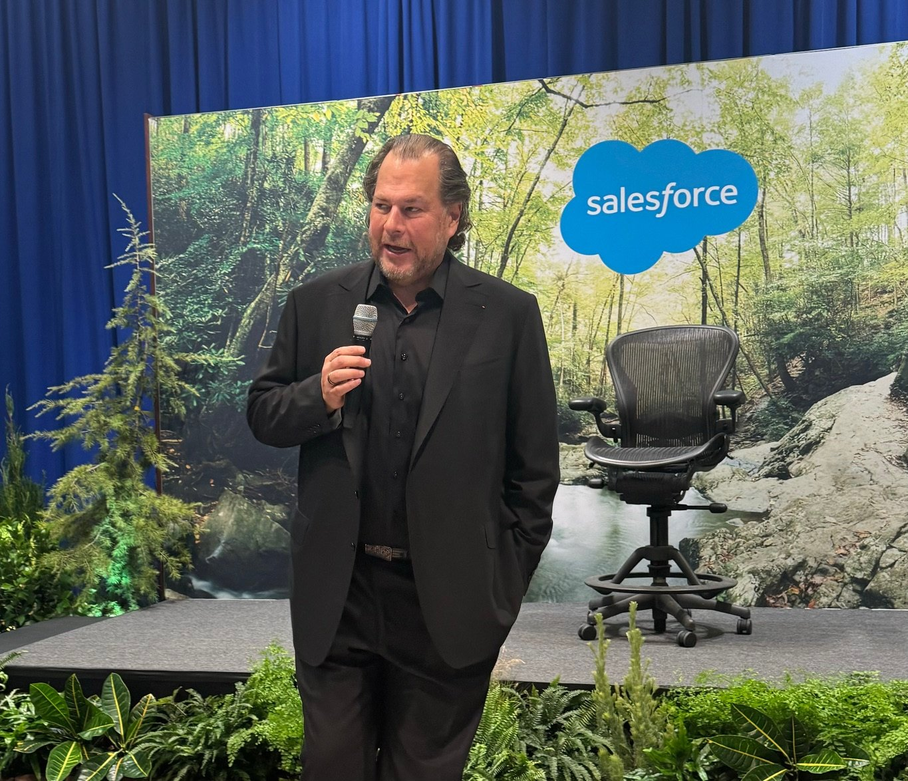
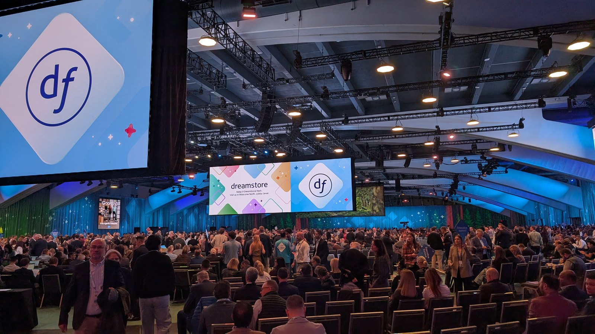
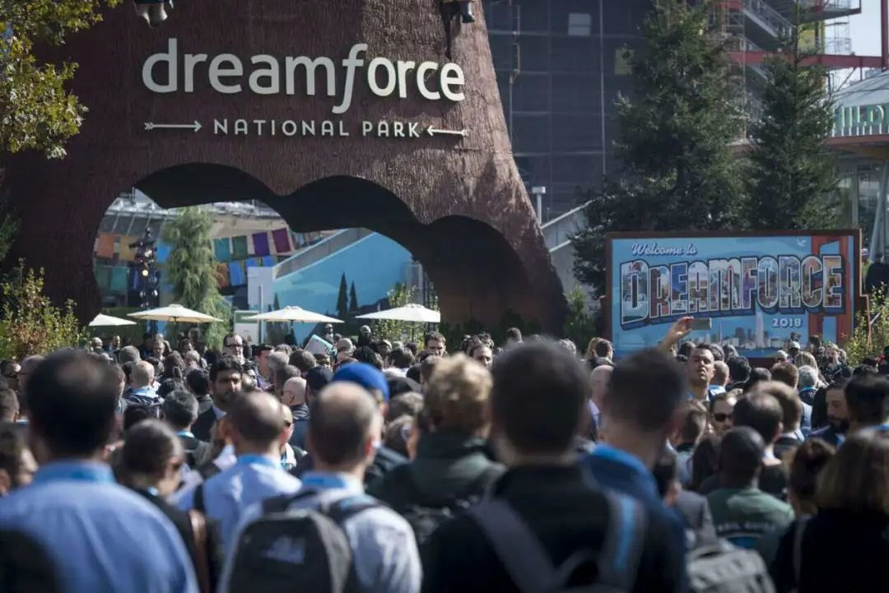
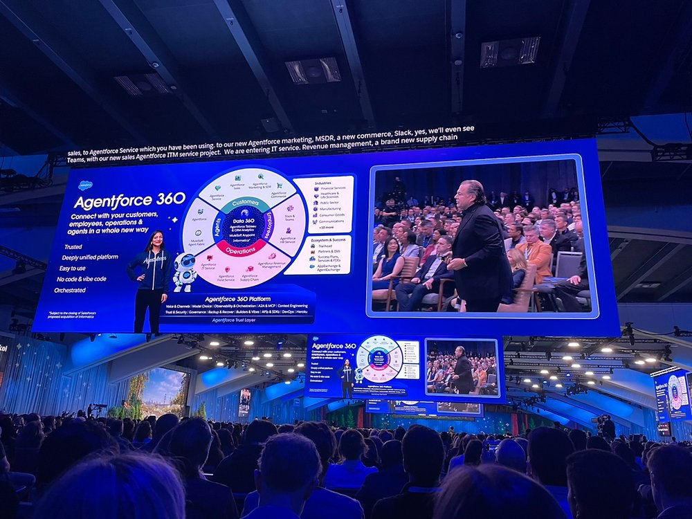
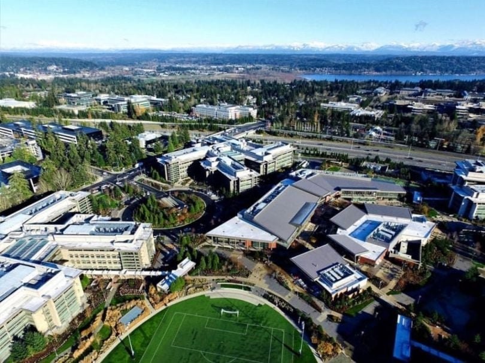

NYSE: CRM
赛富时
席位在退，用量在涨
这份报告怎么读，以及它不做什么
写作原则
- 财务数据以 SEC 披露为准。年度数据取自 FY2026 10-K（2026-03-02 提交），季度数据取自 FY2027 Q2 业绩公告（2026-08-26），每个数字标注报表期。
- 不假造调研。本报告未访谈赛富时的客户、员工、渠道伙伴与竞争对手，全部信息来自公开披露、业绩会文字记录与公开报道。
- 区分事实与判断。事实附来源，判断写「我们认为」并给出证伪条件。
- 不用模糊词。「大幅」「显著」必附百分比；无法量化的地方直接说无法量化。
口径说明
公司财年截至 1 月 31 日，FY2027 指 2026 年 2 月至 2027 年 1 月。除特别标注外，财务数据单位为美元，股价与股本为 2026-11-10 收盘口径：226.18 美元、8.21 亿稀释股、市值 1,862 亿美元。
一个必须注意的时点
下一次财报是 2026 年 12 月 2 日（FY2027 Q3）。本报告的季度分析止于 Q2（7 月 31 日）。Q2 起公司把订阅收入改为两行披露——Agentforce Apps 与 Data 360、Headless Platform 及其他——这是一次口径变更，跨季比较会失真，第 5 章专门处理。
没做的事
① 未做客户访谈与续约率尽调；② 未拆解 Agentforce 的单位成本（算力、模型调用）；③ 未使用 IDC、Gartner 付费原始表，只引用公开摘要；④ 未对 Braze、Fin、Contentful 做独立估值。
目录 八章
全文 8 章 · 48 节 · 164 个子目
图表 41 张，数据表 134 张。第 5、6 章为本文核心，第 3 章提供产品判断的依据。
八章结构与页面分布
| 章 | 标题 | 该章要回答的问题 | 页数 | 页码 |
|---|---|---|---|---|
| 01 | 公司：从「软件的终结」到「界面的终结」 | 二十六年里，哪些是能力，哪些是并购与运气 | 16 | 011—026 |
| 02 | 行业：席位制在退，用量制在涨 | 如果按人头收费失效，这个行业的钱怎么收 | 31 | 027—057 |
| 03 | 产品：Data 360 是护城河，Agentforce 是收费站 | 技术领先能折算成几年超额利润 | 30 | 058—087 |
| 04 | 竞争：微软在最上层，ServiceNow 在最深的流程里 | 谁最可能杀死它，追上来要多久 | 18 | 088—105 |
| 05 | 财务：11% 的增长里，4 个点不是自己长的 | 这一轮利润率扩张还剩多少空间 | 35 | 106—140 |
| 06 | 估值：13.6 倍市盈率的赛富时，便宜还是陷阱 | 当前价格隐含什么假设，假设成立吗 | 20 | 141—160 |
| 07 | 风险：九个可能出错的地方 | 什么信号出现时该承认判断错了 | 18 | 161—178 |
| 08 | 结论：买不买，什么价，什么时候卖 | 评级、目标价、建仓与退出 | 13 | 179—191 |
| — | 附录与声明 | 来源、方法与免责声明 | 9 | 192—200 |
五条结论
01 11% 的报告增速里，只有约 7.5 个点是自己的
FY2027 Q2 收入 113.45 亿美元、同比 +11%，其中 Informatica 贡献 4.56 亿美元，约 4 个百分点。剔除后有机增速 7.5%，与本轮 AI 叙事开始前的 FY2026 全年 9.6% 相比仍然更低。Agentforce 没有让公司重回双位数内生增长，它只是让报表回到了双位数。
02 真正的变化在收入结构，不在增速
Q2 新口径下，应用层（Agentforce Apps）收入 71.93 亿美元、同比 +7.6%；数据与无头平台层 36.18 亿美元、同比 +20.3%。按人头卖的这部分几乎不涨，按用量卖的这部分在涨。这是本报告最重要的一张表（第 5.1 节）。
03 39 亿美元的 AI 年费，撑不起 4,600 亿的估值叙事，但撑得起 1,860 亿的市值
Agentforce 与 Data 360 合计 ARR 39 亿美元、同比 +210%，占总收入 8.4%。按 8 倍 ARR 单独给这部分估值约 310 亿美元，占当前市值的 17%。剩下的 1,550 亿，仍然是 CRM 与数据平台的现金流。
一句话
这是一家把 35.1 亿美元拿去回购、把债务从 112 亿加到 417 亿、同时把增长买到 11% 的公司。问题不是它会不会被 AI 杀死，是它买来的增长能撑几个季度。
04 利润率的扩张已经接近上限
非 GAAP 经营利润率从 FY2024 的 30.5% 升到 FY2027 指引 34.3%，四年提升 3.8 个百分点；同期员工从 72,682 人增至 83,334 人，客服团队从 9,000 人减到 5,000 人。能被 AI 替代的岗位已经替代完了，剩下的替换成本更高。
05 便宜是真的，便宜的原因也是真的
13.6 倍前瞻非 GAAP 市盈率、14.4 倍 EV/FCF、8.1% 自由现金流收益率，都低于标普 500 与软件同业。折价来自三件事：有机增速 7.5%、净债务 303 亿美元、连续五起并购的整合风险。前两条可量化，第三条是估值折价的核心。
评级、目标价与关键假设
目标价的三种算法与加权
| 方法 | 关键假设 | 结果（美元） | 权重 |
|---|---|---|---|
| 自由现金流倍数 | FY2028E FCF 161 亿 × 14.0x，减净债务 280 亿，除 7.90 亿股 | 250 | 45% |
| 市盈率 | FY2028E 非 GAAP EPS 18.60 × 15.5x | 288 | 40% |
| 现金流收益率 | FY2028E FCF 161 亿 ÷ 7.0% 目标收益率 ÷ 7.90 亿股 | 291 | 15% |
| 加权目标价 | — | 268 | 100% |
评级体系定义
三个关键假设
① FY2028 有机增速 7.0%，并购贡献 2.4 个点；② 非 GAAP 经营利润率 FY2028 达 35.0%，不再依赖裁员；③ 净债务在 FY2028 末降至 250 亿美元以下，回购规模从 351 亿回落到 100 亿以内。三个假设中任何一个破，目标价下调 15%—25%。
关键数据一页表
| 项目 | 数值 | 口径 |
|---|---|---|
| 营业收入（FY2026） | 415.3 亿美元 | GAAP，同比 +9.6% |
| 订阅与支持占比 | 94.9% | 393.9 / 415.3 |
| 毛利率（FY2026） | 75.3% | GAAP |
| 经营利润率（FY2026） | 21.5% | GAAP |
| 经营利润率（FY2027 指引） | 34.3% | 非 GAAP |
| 自由现金流（FY2026） | 144.0 亿美元 | OCF − 资本开支 |
| 自由现金流（TTM） | 152.0 亿美元 | 至 2026-07-31 |
| 剩余履约义务 RPO | 663 亿美元 | 同比 +11% |
| 当期履约义务 cRPO | 335 亿美元 | 同比 +14% |
| Agentforce + Data 360 ARR | 39 亿美元 | 同比 +210% |
| 总债务 / 现金 | 417 / 114 亿美元 | 2026-07-31 |
| 稀释股数 | 8.21 亿股 | 同比 −14.6% |
| 员工数 | 83,334 人 | 2026-01-31 |
| 市盈率（FY2027E 非 GAAP） | 13.6 倍 | 226.18 美元 |
多空各一条最硬的论据
多头最硬的一条：数据层已经变成了收费站
Data 360 在 Q2 摄入 104 万亿条记录、同比 +355%，其中零拷贝 82 万亿条、+731%。零拷贝的意思是客户不需要把数据搬进赛富时，而是让赛富时去查它。这解决了企业 AI 最大的障碍——数据搬不动。一旦数据打通，Agentforce 的每一次动作都要消耗 Flex Credit（每 20 点约 0.10 美元）。赛富时从「按人头收租」变成「按动作收租」，天花板从 8 万员工数变成 8 万员工每天做的事数。
证据：Agentforce 与 Data 360 合计 ARR 从 FY2026 Q4 的 8 亿美元（仅 Agentforce）升到 39 亿美元，四个季度翻了近四倍。
空头最硬的一条：按人头收费的那部分已经停下来了
Q2 应用层（Agentforce Apps：销售、服务、营销、商务、Slack、Flex Credits）收入 71.93 亿美元、同比 +7.6%，低于公司整体 11%。这是赛富时最核心、最赚钱、最像「护城河」的那一块。如果 AI 真的在增强 CRM，这一块应该加速，而不是减速。减速只有两种解释：席位在减少，或者单价在下降。两种解释都指向同一件事——AI 让客户不需要那么多人登录。
对照：ServiceNow 同期订阅收入增速约 20%，微软 Dynamics 365 仍在双位数增长。不是整个企业软件都在减速，是席位制的 CRM 在减速。
两条论据都成立，但作用在不同的时间尺度上：多头讲的是三年后的收入结构，空头讲的是未来四个季度的报表。本报告选择相信前者，但把仓位建立在后者的验证点上——Q3（12 月 2 日）与 Q4 的 cRPO 是分水岭。
三种情景与对应股价
| 情景 | 概率 | 核心假设 | FY28E EPS | 市盈率 | 股价 |
|---|---|---|---|---|---|
| 牛市 | 25% | 有机增速回到 10%，AI ARR 达 70 亿 | 20.5 | 17x | 340 |
| 基准 | 50% | 有机增速 7%，利润率 35% | 18.6 | 14.4x | 268 |
| 熊市 | 25% | 席位负增长，增速跌至 4% | 15.0 | 11x | 165 |
概率加权结果
0.25 × 340 + 0.50 × 268 + 0.25 × 165 = 260 美元，较现价 +15.0%。加权值低于目标价 268 美元，原因是熊市情形的下行幅度（−27%）大于牛市的上行幅度（+50% 的绝对涨幅但概率只有 25%）。这个差距就是本报告不给「买入」评级的原因。
七个可被证伪的判断
| # | 判断 | 依据 | 什么情况下算我错了 |
|---|---|---|---|
| 1 | FY2028 有机收入增速不低于 7.0% | cRPO +14%、NNAOV 四年最强、Data 360 用量 +355% | 连续两季 cRPO 有机增速低于 9% |
| 2 | Agentforce + Data 360 ARR 在 FY2028 末达 65 亿美元以上 | Q2 为 39 亿，环比增速 30% 以上 | FY2027 末低于 50 亿 |
| 3 | 非 GAAP 经营利润率 FY2028 达 35.0% | FY2027 指引 34.3%，四年累计 +3.8pp | FY2027 实际低于 33.5% |
| 4 | FY2027 自由现金流不低于 148 亿美元 | FY2026 为 144 亿，指引增速 4%—5% | 全年低于 140 亿 |
| 5 | 应用层（席位）收入 FY2028 增速不低于 6% | Q2 为 +7.6%，续约率处历史低位区间上沿 | 连续两季负增长 |
| 6 | FY2028 末净债务 / FCF 低于 1.5 倍 | 净债务 303 亿，FCF 161 亿，回购放缓 | 净债务超过 350 亿 |
| 7 | 12 个月内估值修复到 14 倍以上 FY2028E EPS | 当前 12.2 倍，处于十年 5% 分位 | 增速跌破 5% 且利润率下滑 |

公司
从「软件的终结」到「界面的终结」
起点不是 CRM，是「不用装软件」
1999 年 3 月，马克·贝尼奥夫（Marc Benioff）在旧金山一间租来的公寓里创立了 salesforce.com。他此前在甲骨文做到高级副总裁，36 岁离开。与他一起的是帕克·哈里斯（Parker Harris）等三位技术合伙人。
公司最初的产品只有销售自动化（SFA）一个模块，全部通过浏览器访问，没有安装程序。当时企业软件的标准交付方式是买服务器、买许可证、实施 18 个月。赛富时做的事，是把这三步删掉。
1999 年 7 月，公司在旧金山的一家剧院办了一场发布会，请来演员扮成「软件安装员」被当场赶下台，口号是「No Software」。这句口号定义了公司前十五年的全部叙事：把装在机房里的东西搬到网上。
需要说清楚的一点：赛富时最初不是技术领先者。它的 SFA 功能弱于 Siebel，架构也不特殊。它的优势是商业模式的定价权——把一次性许可费变成按月订阅，把销售对象从 IT 部门变成业务部门。这个优势维持了二十年，直到 AI 让「按月按人头」本身开始失效。
三次转折，每次都是把别人的东西买成自己的叙事
赛富时二十六年的产品史，可以压缩成三个动作。每一次都不是原创，但每一次都成功地把它讲成了自己的故事。
第一次，2016 年的 Einstein。公司在 Dreamforce 上发布「AI 驱动的 CRM」，核心是把预测与推荐嵌进现有界面。这一代产品没有独立收入，也没有独立指标，作用是支撑涨价。结果：FY2017—FY2020 收入从 84 亿增到 171 亿，复合增速 26.7%。
第二次，2021 年的 Slack。277 亿美元，当时公司史上最大并购。逻辑是「把工作流从应用里搬到对话里」。四年后，Slack 才第一次在财报里被单独提及增速——Q2 FY2027 净新增年化订单额是收购以来最快的一季。
第三次，2024 年的 Agentforce。与 Einstein 的区别在于计费：Einstein 不单独收费，Agentforce 按动作收费（20 点 Flex Credit 约 0.10 美元）。这是公司二十六年来第一次改变计价单位。
| 转折 | 核心动作 | 计价单位 | 结果 |
|---|---|---|---|
| 2016 Einstein | AI 嵌入界面 | 席位（不变） | 支撑涨价 |
| 2021 Slack | 工作流搬进对话 | 席位（不变） | 渠道扩充 |
| 2024 Agentforce | Agent 执行任务 | 动作 / 额度 | 待验证 |
增长曲线在 FY2023 断过一次，此后再没回到双位数
FY2022 收入增速 24.7%，FY2023 降到 18.4%，FY2024 降到 11.2%，FY2025 只有 8.7%。这是公司上市以来第一次连续三年增速下滑。
下滑的原因不是需求消失，是基数。收入从 265 亿到 415 亿，四年增加 150 亿——相当于每年新增一个 ServiceNow 的三分之一。在 400 亿美元的基数上维持 20% 增长，需要每年新增 80 亿美元收入，这个数字接近整个 CRM 市场一年的增量。
2023 年，激进投资者 Starboard 与 Elliott 建仓，公开要求公司提高利润率。此后公司裁员约 8,000 人、缩减办公面积、把自由现金流作为核心指标。FY2024 非 GAAP 经营利润率 30.5%，比 FY2023 提升 8 个百分点。增长与利润率之间，公司选了利润率。
2026 年的位置
FY2026 增速回到 9.6%（含 Informatica 约 1 个点），FY2027 指引 11%—12%（含并购约 3 个点）。如果剔除并购，有机增速是 7.5% 左右，比 FY2025 的 8.7% 还低。这一条是全书所有估值讨论的起点。
二十七起并购，五次超过十亿美元
| 年份 | 标的 | 对价 | 买到的是什么 | 今天的位置 |
|---|---|---|---|---|
| 2018 | MuleSoft | 65 亿美元 | API 集成层 | 归入 Integration，增速 7.9% |
| 2019 | Tableau | 157 亿美元 | 可视化分析 | 归入 Analytics，与 MuleSoft 同组 |
| 2020 | Vlocity | 13 亿美元 | 行业垂直 CRM | 并入 Industries |
| 2021 | Slack | 277 亿美元 | 协作界面 | Q2 FY27 增速为收购以来最快 |
| 2025 | Informatica | 80 亿美元 | 数据目录与治理 | FY26 贡献 3.88 亿美元 |
| 2026.06 | Contentful | 约 15 亿美元 | 内容管理（无头 CMS） | 2026-09-01 完成 |
| 2026.06 | Fin（原 Intercom） | 36 亿美元 | AI 客服 Agent | 2026 年 9 月完成 |
| 2026.06 | m3ter | 未披露 | 用量计费与评级引擎 | 补齐计量层 |
| 2026.10 | Braze | 56.6 亿美元 | 实时客户互动 | 预计 FY2028 完成 |
一个规律
赛富时的并购分两类：买能力（MuleSoft、Informatica、Contentful、m3ter）与买规模（Slack、Tableau、Braze）。前者便宜、整合慢、不进报表；后者贵、当期增厚、要背商誉。2026 年的五笔里，四笔是买能力。这说明管理层自己也清楚：缺的不是客户，是产品。
277 亿美元买来的 Slack，第五年才交出最好的一季
2021 年 7 月，赛富时以 277 亿美元完成对 Slack 的收购，全部以现金加股票支付。对价相当于 Slack 当时年收入的 26 倍。市场当时的质疑是：一个聊天工具，凭什么值 277 亿。
四年半之后，Q2 FY2027 的业绩公告里出现了这样一句：「Slack 交出收购以来最快的单季净新增年化订单额增速」，同期 Slackbot 用户环比增长超过 150%、活跃用户超过 100 万。
推动力不是 Slack 本身，是 Agentforce。Slack 成了 Agent 的入口——用户在频道里 @ 一个 Agent，让它去查订单、改工单、生成报表。没有 Agent，Slack 只是一个更贵的 IM；有了 Agent，Slack 变成了工作流的前端。
这笔账怎么算
277 亿美元除以 2021 年 Slack 年收入约 10.6 亿，是 26 倍市销率。若按 FY2026 归入「Platform、Slack 及其他」的 88.8 亿美元反推，Slack 单独贡献约 20 亿美元，五年复合增速约 13%。以 13% 的增速，277 亿的对价需要 14 年才能靠现金流收回——这笔并购在财务上从未回本，在战略上却是 Agentforce 唯一可用的入口。
| 项目 | 数值 |
|---|---|
| 公告时间 | 2020-12-01 |
| 完成时间 | 2021-07-21 |
| 对价 | 277 亿美元 |
| 支付方式 | 现金 + 股票 |
| 当时市销率 | 约 26 倍 |
| Q2 FY2027 表态 | 收购以来最快 NNAOV 增速 |
| Slackbot 活跃用户 | 超过 100 万，环比 +150% |
| FY2026 归属收入 | 约 20 亿美元（本报告估算） |
| 五年复合增速 | 约 13%（本报告估算） |
十四个月里买了五家公司，全部用现金
2025 年 11 月 Informatica，2026 年 6 月 Contentful、Fin、m3ter，10 月 Braze。五笔合计约 188 亿美元，全部现金支付，没有增发一股。
这与 2019—2021 年的做法完全相反。Tableau 是全股票交易，Slack 是现金加股票，两次都稀释了股东。这一次用现金，是因为公司刚刚做完 250 亿美元的加速回购——股价在 176 美元附近被自己买走了 14% 的股本，增发等于承认回购买贵了。
五笔的方向高度一致：数据（Informatica）、内容（Contentful）、客服 Agent（Fin）、计量（m3ter）、实时互动（Braze）。这五个词连起来，是「让 Agent 有数据可读、有内容可写、有动作可执行、有账单可结算」。
为什么现在买：Fin 的定价是每解决一次对话 0.99 美元，按结果收费；赛富时自己按每次对话 2 美元收费。买下 Fin，等于买下一个已经被市场接受的「按结果计价」的价格体系，这比自己重新教育客户便宜得多。
一年买掉 14.6% 的股本，代价是债务翻四倍
稀释股数从 9.62 亿股降到 8.21 亿股，一年减少 14.6%。同期总债务从 112 亿美元升到 417 亿美元。
2026 年，公司执行了 250 亿美元的加速回购（ASR），平均成本 176 美元。到 10 月结算完成，累计买回约 14% 的流通股。以 226 美元的现价计算，这笔回购的账面浮盈约 28%。
钱从哪来：过去十二个月自由现金流 152 亿美元，回购花掉 351 亿，差额 199 亿靠发债与消耗现金。现金及短期投资从 154 亿降到 114 亿，净债务 303 亿。
这笔操作的实质
公司用 3.5%—4.5% 的债务成本，买回收益率 8% 的自由现金流。只要利率低于 FCF 收益率，这个套利在数学上成立。风险不在数学，在时机：如果 FY2028 自由现金流因为并购整合或 AI 毛利下滑而掉到 130 亿，净债务/FCF 会从 2.0 倍升到 2.3 倍，回购就必须停。
创始人仍在位，但决策权已经交给财务
马克·贝尼奥夫仍是董事长兼 CEO，持股约 2.4%。他不是控制性股东，公司没有双重股权结构。这意味着任何重大决策都要过董事会与机构投资者。
2023 年，Starboard Value 与 Elliott 等五家激进基金同时建仓，公开信要求提高利润率、设立资本回报纪律。结果是：裁员 8,000 人、解散并购委员会、首次派息、设立 500 亿美元回购授权。FY2024 非 GAAP 经营利润率从 22.5% 跳到 30.5%。
2026 年的治理结构里，真正的运营决策者是罗宾·华盛顿（Robin Washington），头衔是总裁兼首席财务与运营官——这是公司历史上第一次把财务与运营放在同一个人手里。她的公开表态集中在两个词：有机再加速、NNAOV。
一个值得注意的细节：公司在 2026 年连续五笔并购、351 亿美元回购、债务翻四倍，同时维持 34.3% 的非 GAAP 经营利润率指引。这三件事同时成立，只有一种可能：运营费用被压到了极限。这是第 5 章要拆的部分。
| 角色 | 人 | 备注 |
|---|---|---|
| 董事长兼 CEO | Marc Benioff | 1999 年至今，持股约 2.4% |
| 总裁兼 CFO/COO | Robin Washington | 2024 年起兼任运营 |
| CTO | Parker Harris | 联合创始人 |
| 应用与营销总裁 | Patrick Stokes | Braze 交易发言人 |
| COO（新任） | Miguel Milano | 2026 年晋升 |
激进投资者的遗留影响
2023 年那轮博弈留下的三条纪律，今天仍在起作用：① 自由现金流增长优先于收入增长；② 并购必须用现金、不得稀释；③ 每季度必须给出下季度指引。第三条在 AI 时代反而成了负担——用量收入的可见度低于席位收入。
奥哈纳楼层，与它省不下的人
旧金山 Salesforce Tower 第 61 层的客户接待层。公司把它叫作 Ohana Floor——夏威夷语里的「家人」。它不对外销售，只用来接待客户与非营利组织。
图为 Salesforce Tower 客户楼层（公开图片）
65% 的收入在美洲，10% 在亚太
FY2026 收入按签约主体划分：美洲 271.93 亿美元（65.5%）、欧洲 100.17 亿美元（24.1%）、亚太 43.15 亿美元（10.4%）。其中美国一国占美洲的 93%，即全公司的 61%。
这个结构二十年没变过。风险不在于集中，而在于增速差：FY2026 欧洲增速 12.7%、亚太 11.8%，都高于美洲的 8.2%。增量在海外，存量在美国。
客户数约 15 万家，覆盖 110 个办公室。但收入高度集中——前 100 大客户贡献的收入占比未披露，按行业惯例估计在 15%—20%。
为什么地理结构重要
欧洲的增长率更高，但欧洲的 AI 监管更严（EU AI Act 2026 年 8 月全面生效）。Agentforce 在欧洲的部署需要额外的合规文档与人工复核，这会拉低单位经济性。公司没有披露分区域的 AI 收入，这是本报告无法量化的部分。
| 区域 | FY2025 | FY2026 | 同比 |
|---|---|---|---|
| 美洲 | 25,143 | 27,193 | +8.2% |
| 欧洲 | 8,891 | 10,017 | +12.7% |
| 亚太 | 3,861 | 4,315 | +11.8% |
| 合计 | 37,895 | 41,525 | +9.6% |
员工数创新高，客服团队腰斩
2026 年 1 月 31 日，公司有 83,334 名员工，是历史最高。同一时期，客户支持团队从约 9,000 人减到约 5,000 人。
两件事并不矛盾。裁掉的是可被 Agent 替代的一线支持岗，增加的是销售、工程与 AI 团队。贝尼奥夫在 2026 年的说法是：「我把支持团队从 9,000 人减到 5,000 人，因为我需要更少的人头。」
2026 年公开的三轮裁员合计约 1,160 人：2 月不到 1,000 人（营销、产品管理、数据分析、Agentforce 团队），6 月加州 WARN 备案 86 人，8 月加州与华盛顿合计 133 人。相对于 8.3 万人的基数，这些数字不到 1.5%——真正的减员发生在「不补招」上，不在裁员公告里。
这是本报告对「AI 提效」的第一个量化检验：支持团队减少 4,000 人，按人均成本 9 万美元估算，年化节约 3.6 亿美元，占 FY2026 收入的 0.9%。与 Agentforce 39 亿美元的 ARR 相比，省下的钱远小于新增的收入——AI 对赛富时首先是产品，其次才是成本工具。
| 时间 | 动作 | 规模 |
|---|---|---|
| 2023.01 | 重组计划 | 约 8,000 人（10%） |
| 2025 年内 | 支持团队不补招 | 约 4,000 人 |
| 2026.02 | 营销/产品/Agentforce | 不到 1,000 人 |
| 2026.06 | 加州 WARN | 86 人 |
| 2026.08 | 加州 + 华盛顿 | 133 人 |
Ohana 与 V2MOM：一套让 8 万人对齐的流程
赛富时的管理工具只有两个：Ohana（家人）与 V2MOM（愿景、价值、方法、障碍、度量）。前者是文化口号，后者是年度计划模板。
V2MOM 是贝尼奥夫 1999 年写的五问：我想要什么（Vision）、什么对我重要（Values）、怎么得到（Methods）、什么阻挡我（Obstacles）、怎么知道成功（Measures）。全公司每个人每年写一份，向上对齐。这套流程的成本很低，效果是可追溯——每个季度的偏差都能回到某一条 Methods。
1-1-1 模型是另一件：1% 的股权、1% 的产品、1% 的员工时间用于公益。到 2026 年，累计捐赠超过 10 亿美元。这套东西不产生收入，但它是招聘与留任的工具——在裁员的年份，它的作用更明显。
文化在 AI 时代的用处
Agentforce 的销售方式不是卖软件，是卖「改造流程」。改造流程需要客户信任，信任来自长期关系。这是赛富时相对微软的真实优势：微软卖的是许可，赛富时卖的是项目。项目需要人，人也需要文化。
| 工具 | 内容 | 作用 |
|---|---|---|
| V2MOM | 五问年度计划 | 目标对齐 |
| Ohana | 家人文化 | 留任与招聘 |
| 1-1-1 | 股权/产品/时间各 1% | 品牌与招聘 |
| Trailhead | 在线认证平台 | 生态与人才供给 |
| AppExchange | 应用市场 | 切换成本 |
护城河的真相：不是产品功能，是「认证人数 × 自定义对象 × 审批流」的组合。一家用了八年的客户，系统里有几千个自定义字段和上百条自动化流程，迁移成本以年计。这条护城河在 AI 时代仍然有效，因为它保护的是数据与流程，不是界面。
真正的减员，藏在「不补招」里
2022—2026 年，公司披露的裁员合计约 1.3 万人，但员工总数从 79,390 人升到 83,334 人。这说明裁员与招聘在同时进行，净效应是增加。
真正的效率提升来自三处：① 支持团队不补招（约 4,000 人）；② 并购后整合后台职能（Informatica、Slack 的财务与 HR）；③ 把部分交付转给系统集成商（埃森哲、德勤），从自有成本变为伙伴成本。第三项最容易被忽略，但它同时降低了收入成本与交付质量。
结果体现在数字上：FY2026 专业服务收入 21.37 亿美元、同比 −3.6%，是唯一负增长的分部。公司主动放弃低毛利的人力交付，把这块让给伙伴——这是利润率提升 3.8 个百分点的真实来源之一。
还剩多少空间
非 GAAP 经营利润率从 FY2024 的 30.5% 到 FY2027 指引 34.3%，四年 +3.8 个百分点。其中约 2 个点来自裁员与外包，约 1 个点来自收入结构（高毛利订阅占比上升），约 0.8 个点来自汇率。这三项里，只有收入结构还能继续贡献。
| 分部 | FY2026 | 同比 |
|---|---|---|
| 订阅与支持 | 39,388 | +10.4% |
| 专业服务及其他 | 2,137 | −3.6% |
一家把增长买回来的公司
三句话总结这一章。
第一，它的历史能力是「换一种收钱方式」，不是「造更好的产品」。1999 年把许可费换成订阅费，2024 年把席位费换成动作费。两次都踩在交付方式变化的节点上，两次都不是技术首创。
第二，它的增长在 FY2023 之后依赖并购。FY2026 的 9.6% 里有 1 个点来自 Informatica，FY2027 的 11.4% 里有 3.4 个点来自并购。剔除后有机增速 7.5%，低于 FY2025。
第三，它对股东的回馈是用杠杆换来的。351 亿美元回购、债务从 112 亿到 417 亿、股本减少 14.6%。这在利率下行期是聪明的，在利率上行期是脆弱的。
所以第一个判断是：赛富时不是一家正在被 AI 颠覆的公司，是一家正在用并购与回购拖延增速下滑的公司。这两件事的区别在于，前者会突然死亡，后者是缓慢失血。投资含义完全不同——前者不能碰，后者可以等价格。
本章三个数字
反常识的一条
市场普遍认为赛富时的护城河是「CRM 市占率 20%」。但真正的护城河是 4,000 万 Trailhead 认证用户与几百万个自定义对象。市占率会被低价产品侵蚀，认证与自定义不会。这也是为什么它能在席位减速时靠用量补回来。
这一章没有回答的三个问题
写公司史最容易犯的错，是把结果当成必然。以下三件事，本报告没有能力回答，但它们会影响结论。
一、Agentforce 的产品力到底来自哪里。Q2 公告称 Agentforce 自主解决率 84%—85%，但这些数字来自旗舰客户案例，不是全量基数。Fin 的平均解决率是 76%，且 Fin 是按结果收费的。两个数字的口径不同，不能直接比较，也不能互相印证。
二、并购整合的真实成本。十四个月五笔并购，涉及数据（Informatica）、内容（Contentful）、客服（Fin）、计量（m3ter）、互动（Braze）五个完全不同的技术栈。公司没有披露整合费用，也没有给出协同目标。FY2026 的无形资产摊销 22 亿美元（本报告测算），这笔钱会随并购继续上升。
三、贝尼奥夫之后的公司。创始人 61 岁，无明确接班人。罗宾·华盛顿兼任 CFO 与 COO，是目前最可能的路径，但她没有产品背景。对一家靠「叙事」卖软件的公司，CEO 的更替是估值变量，不是治理细节。
这三件事怎么影响判断
第一件影响第 3 章的单位经济学，第二件影响第 5 章的利润率，第三件影响第 6 章的估值倍数。三者都是「无法量化但必须定价」的项，本报告的处理方式是在目标价上给 10% 的折价（见 6.4 节）。

行业
席位制在退，用量制在涨
CRM 已经不是「记录客户」，是「决定下一步做什么」
CRM 的定义在 2024 年之后变了。过去它指三件事：存客户资料、记销售漏斗、管工单。今天它指第四件事：告诉员工（或 Agent）下一步做什么。
这个变化来自数据位置的改变。过去的 CRM 是一个孤岛，客户数据要靠批处理同步进来。现在通过零拷贝（Zero Copy）技术，CRM 可以直接查询数据仓库里的表，不搬数据。Q2 FY2027，Data 360 通过零拷贝摄入 82 万亿条记录，同比 +731%。
数据位置一变，产品边界就变了。CRM 从「记录系统」变成「决策系统」，竞争对手也从 Salesforce vs 微软，变成「谁的决策层更可信」——这层竞争里，ServiceNow 在流程侧、Snowflake 与 Databricks 在数据侧、OpenAI 与 Anthropic 在模型侧。
这个定义变化对投资判断的意义：如果 CRM 是记录系统，它的护城河是数据迁移成本；如果 CRM 是决策系统，它的护城河是决策质量的可验证性——客户要能证明 Agent 的决定比人更准。前者可以靠合同锁定，后者只能靠结果说话。
| 时代 | CRM 做什么 | 计价单位 |
|---|---|---|
| 1999—2010 | 记录客户与漏斗 | 席位 / 月 |
| 2010—2020 | 跨渠道数据整合 | 席位 + 模块 |
| 2020—2024 | 数据平台 + 分析 | 席位 + 数据量 |
| 2024— | 决策与执行 | 动作 / 结果 |
一个可验证的信号
Q2 应用层收入 +7.6%、数据层 +20.3%。如果 CRM 仍是记录系统，应用层应该更快；如果它已变成决策系统，数据层更快就合理。数字支持后者。
买家从 IT 部门变成了业务部门的成本中心
2015 年，CRM 的采购决策 70% 由 CIO 做。2026 年，超过一半的 Agentforce 项目由销售或客服负责人发起，IT 只负责安全审查。决策人变了，评价标准也变了。
CIO 关心的是集成、安全、许可合规；业务负责人关心的是这件事能不能少雇几个人。前者看 TCO，后者看 ROI 的分子。这解释了为什么 Agentforce 的销售话术全是「减少多少工单、缩短多少分钟」，而不是「架构多先进」。
也解释了为什么客户对价格的容忍度在下降。ETR 2026 年的调研显示，赛富时的功能完整性得分 84%，但易用性只有 49%、性价比 52%。业务买家愿意为结果付钱，不愿意为复杂度付钱。
这个转变的代价
业务部门主导采购，意味着预算从 IT 的资本开支转到业务部门的运营费用。运营费用更容易被砍。2026 年多家企业的 AI 预算在下半年被重新审视，这是 Q3 指引只给 11%—12% 的原因之一。
企业软件预算没有缩，但从「买许可」转到了「买算力」
2026 年全球企业软件支出仍在增长，但结构在变。增量预算流向三处：模型调用、数据平台、安全合规；存量预算从应用许可里被切走。
这对赛富时是双刃：它既卖应用（存量被切），也卖数据与算力额度（增量所在）。Q2 的 20.3% 数据层增速，正是因为客户把原本给数据仓库的预算，挪到了 Data 360 上。
但算力预算是零和的。一家客户如果今年花 200 万美元买 Flex Credits，很可能同时砍掉 200 万美元的席位续约。赛富时在内部把这件事叫「预算再分配」，在客户那里叫「不加钱做更多事」。
这是全章最关键的一句：AI 收入不一定是增量收入，很可能是同一笔预算的换手。判断标准是客户的软件总支出（不含算力）有没有增加。公司没有披露这个数字，本报告用「应用层 +7.6%、数据层 +20.3%」的加权增速 10.1% 作为代理指标：高于 FY2026 的 9.6%，但远低于 FY2022 的 24.7%。
| 预算项 | 2025 | 2026 | 方向 |
|---|---|---|---|
| 应用许可（席位） | 持平 | 下降 | ↓ |
| 数据平台 | 增长 | 快增 | ↑↑ |
| 模型调用 / 算力 | 新增 | 快增 | ↑↑ |
| 系统集成服务 | 增长 | 持平 | → |
| 安全与合规 | 增长 | 增长 | ↑ |
一个反例
如果 AI 预算真是纯增量，那么 ServiceNow、微软、赛富时的增速应该同时加速。实际上只有数据层加速，应用层全线放缓。这说明预算是在软件内部换手，不是总盘扩大。
真正的约束不是需求，是数据质量
企业 AI 项目的失败，八成不是模型不行，是数据不能用。客户主数据重复、字段缺失、权限混乱，Agent 读到的第一条记录就是错的。
这是 Informatica 那 80 亿美元的真实用途：不是买收入，是买「数据可信」这件事。Informatica 做的是数据目录、血缘、质量规则——也就是告诉 Agent「这条记录能不能信」。
赛富时的解法是三层：Data 360 负责「取到」（零拷贝 82 万亿条）、Informatica 负责「验真」（目录与规则）、Einstein Trust Layer 负责「合规」（不保留提示词、按字段级权限过滤）。三层缺一层，Agent 就只能在演示里跑。
这个约束意味着什么：AI CRM 的渗透速度不取决于模型进步速度，取决于客户的数据治理成熟度。全球能真正跑起企业级 Agent 的公司，可能只有几万家——这正好是赛富时的客户基数上限。天花板不是无限的。
客户对 Agent 的价格敏感度，比对席位低一半
一个反直觉的事实：客户愿意为「解决一张工单」付 0.99 美元，却不愿意为「一个客服坐席」每月多付 50 美元。因为前者可以直接对应到成本节约，后者对应到「又涨价了」。
Fin 的定价是每解决一次对话 0.99 美元，未解决不收费。一个客服坐席月薪加福利约 4,000 美元，每月处理 800 张工单。如果 Agent 解决一半，成本是 400 × 0.99 = 396 美元，替代 2,000 美元的人力成本——ROI 是 5 倍。
赛富时自己的定价是每次对话 2 美元，比 Fin 贵一倍。这解释了为什么它要买 Fin：不是技术不够，是价格锚不够低。
弹性的另一面
按结果收费意味着收入随客户的业务量波动。经济下行时，工单量上升（收入增加），但新签减少（收入下降）；经济上行时反过来。这把软件的「稳定现金流」属性改成了「半周期性」。估值倍数应该因此下调，市场还没有完全反映这一点。
| 计价方式 | 单价 | 客户视角 | 供应商视角 |
|---|---|---|---|
| 席位（企业版） | 约 165 美元/人/月 | 固定成本 | 可预测 |
| Agentforce 附加 | 125 美元/人/月 | 半固定 | 可预测 |
| 按对话 | 2.00 美元/次 | 变动成本 | 随用量 |
| Flex Credits | 0.10 美元/动作 | 变动成本 | 随用量 |
| Fin 按结果 | 0.99 美元/解决 | 纯变动 | 随结果 |

四万三千人，来确认自己还值多少钱
Dreamforce 2026 现场。参会者不是来买 CRM 的，是来确认自己的职业还值多少钱——如果 Agent 能做完一线支持、线索初筛与报表，那么四万三千人里有一半需要重新定义自己的工作。
图为 Dreamforce 现场（公开图片）
CRM 市场一千亿美元，但口径差三倍
同一件事，五个机构给出五个数字：Grand View 1,010 亿美元、Fortune Business Insights 1,129 亿、Mordor 880 亿、Research and Markets 728 亿。差三倍的原因是「CRM」的边界不同。
窄口径只算销售自动化（SFA）与客服工单，约 400 亿美元；中口径加上营销自动化与电商，约 900 亿；宽口径把数据平台、集成、分析全部算进来，超过 1,500 亿。赛富时的 415 亿美元收入，只有在宽口径下才对应 20% 的份额。
这件事对估值的意义：如果按窄口径，赛富时的份额已接近 40%，增长空间有限；如果按宽口径，份额 20%，还有空间。管理层显然选择后者叙事。
本报告采用 IDC 口径：2025 年全球 CRM 软件收入约 1,300 亿美元（含平台与分析），赛富时份额 20.0%。这个口径与公司的分部披露最接近，也便于横向比较。其他口径仅作参照。
| 机构 | 2025/2026 规模 | 口径 |
|---|---|---|
| Grand View Research | 1,010 亿美元 | 宽 |
| Fortune Business Insights | 1,129 亿美元 | 宽 |
| Mordor Intelligence | 880 亿美元 | 中 |
| Research and Markets | 728 亿美元 | 中窄 |
| IDC（本报告采用） | 约 1,300 亿美元 | 含平台与分析 |
20% 的份额，等于第二名到第五名之和
IDC 2026 年 4 月版数据：赛富时 2025 年全球 CRM 份额 20.0%，连续十三年第一。微软 5.9%、甲骨文 4.4%、SAP 3.5%、Adobe 3.4%——四家合计 17.2%，仍低于赛富时一家。
分项更极端：销售应用连续十四年第一，客服连续十三年第一，营销连续七年第一。唯一没拿第一的是 2026 年新设的「Agent 构建与部署」类别——赛富时 17.5%，排第二，但从 2024 年的 6.9% 起步，是增速最快的厂商。
份额高不等于安全。CRM 市场的长尾极长——全球有 785 个 CRM 产品，前五名合计只占 38.9%。剩下的 61% 分散在几千家本地厂商与自研系统里，这部分才是 AI 时代最容易被重新分配的部分。
份额的两种读法
乐观读法：20% 的份额意味着规模优势，单位研发成本最低。悲观读法：份额越高，被 AI 原生创业公司切走增量的概率越大——因为它们不需要赢下存量，只需要赢下新增。2026 年新增的 Agent 项目里，赛富时的份额是 17.5%，低于它的存量份额 20%。这就是份额在流失的第一个信号。
增长不在 CRM 里，在 CRM 旁边的三个池子
CRM 本身增速 8%—10%，但紧邻的三个池子更快：数据平台（15%—20%）、可观测与安全（12%—15%）、垂直行业应用（10%—12%）。赛富时三处都进了，但都不是第一。
数据平台：Data 360 对 Snowflake、Databricks。赛富时的优势是「数据在哪都能查」，劣势是「客户不放心把主数据放在 CRM 厂商手里」。Q2 零拷贝摄入量 +731%，说明这个顾虑正在被绕开。
垂直行业：Industries 产品线覆盖 200 多个行业场景，但没有单独披露收入。同业 Veeva（生命科学）、nCino（银行）用「垂直 CRM」做到了 20% 以上的增速。赛富时在这个池子里是平台，不是专家。
第三个池子最关键：计量与账单。2026 年 6 月收购 m3ter，补的就是「按用量计费」的基础设施。一家公司如果不能精确计量每一个动作，就无法真正转向用量收费。这笔小额并购，比 56.6 亿的 Braze 更能说明方向。
| 池子 | 规模 | 增速 | 赛富时位置 |
|---|---|---|---|
| CRM（核心） | 约 1,300 亿 | 8%—10% | 第一，20% |
| 数据平台 | 约 400 亿 | 15%—20% | 挑战者 |
| 垂直行业应用 | 约 300 亿 | 10%—12% | 平台方 |
| 计量与账单 | 约 40 亿 | 20%+ | 刚进入（m3ter） |
| 可观测与安全 | 约 250 亿 | 12%—15% | 无 |
前五名 37%，但增量正在流向第 6 到第 50 名
存量集中，增量分散。2026 年新签的 AI 项目里，超过一半的合同金额低于 50 万美元——这个规模的项目，赛富时的销售成本结构打不平。
公司的销售费用率约 33%（FY2026 销售与营销费用约 137 亿美元，占收入 33%）。一单 20 万美元的生意，按 33% 的费用率要花 6.6 万美元获客，而客户的生命周期价值可能只有 30 万美元。这就是为什么赛富时把中小客户交给伙伴与自助渠道。
但伙伴渠道的利润率更低。Q2 专业服务收入 −3.6%，说明公司正在主动放弃低毛利交付。放弃低端，等于把增量让给 HubSpot、Zoho 与本土厂商。
这是一个结构性的选择
赛富时选择守住大客户（高毛利、高切换成本），放弃中小客户（低毛利、高流失）。这个选择在财务上正确，在份额上代价巨大。IDC 的 20% 份额会慢慢下降，但自由现金流会上升。对投资者来说，前者是叙事，后者是钱。
| 客户规模 | 获客成本占比 | 赛富时策略 |
|---|---|---|
| ＞5,000 人 | 低 | 直销，重点守 |
| 500—5,000 人 | 中 | 直销 + 伙伴 |
| 50—500 人 | 高 | 伙伴 + 自助 |
| ＜50 人 | 极高 | 基本放弃 |
如果 AI 真的替代人，席位制的天花板会自己降下来
这是全章最重要的一个测算。赛富时的收入 = 席位数 × 单价 + 用量收入。如果 AI 让每个客户少雇 20% 的人，席位数就少 20%。
公司没有披露席位数，但可以用「订阅收入 ÷ 每席位年费」反推。按企业版 165 美元/月、折扣后 132 美元计，年费 1,584 美元；FY2026 订阅收入 394 亿美元，其中应用层约 270 亿，对应约 1,700 万个企业席位。这个数字的量级与 15 万客户、平均每客户 113 个席位吻合。
假设未来三年客户平均减少 10% 的席位，单价每年涨 3%，则应用层收入年增速 = −3.3% + 3% ≈ 0%。Q2 的 +7.6% 说明这个假设还没有发生，但方向是对的。
这个测算的证伪条件很明确：如果应用层收入连续四个季度保持 7% 以上，说明 AI 没有减少席位，而是扩大了使用人数（更多一线员工因为 Agent 而获得账号）。这是牛市情景的核心假设，也是本报告最想被推翻的一条。
四个增长来源，三个已经在减速
把 FY2027 的 11.4% 拆开看：并购 3.4 个点、涨价约 2 个点、用量（AI + 数据）约 3 个点、席位自然增长约 2 个点、汇率 0.5 个点。真正的新东西只有「用量」这一项。
并购是买来的，涨价有天花板，席位在减速，汇率不可控。只有用量收入是可持续的内生增量——它不依赖客户多雇人，依赖客户多做动作。
用量的基数很小：39 亿美元 ARR，占总收入 8.4%。即使明年翻倍到 78 亿，也只能贡献 8 个百分点——刚好补上席位减速的缺口。这就是为什么本报告认为 7%—8% 的有机增速是新常态，而不是暂时现象。
一个容易忽略的点
用量收入是按「动作」计费的，动作数随客户的业务量波动。这意味着赛富时的收入从「年度合同」变成了「合同 + 用量」的混合体，可见度下降。cRPO（当期履约义务）只包含已承诺部分，不包含超额的用量——cRPO 增速 14% 说明合同在增长，但不说明用量在增长。
用量收入的三个特征，决定了它不能按席位估值
用量收入与席位收入有三个本质差别：它没有承诺、没有续约、没有涨价权。
没有承诺：客户签的是框架协议与最低消费，超出部分按实际动作结算。Q2 交付 32 亿个 Agentic Work Unit，环比 +97%——这个数字是「实际用了多少」，不是「承诺买多少」。
没有续约：席位合同到期要续签，续签时可以涨价；用量没有到期概念，下个月客户可以只用一半。所以用量收入的「客户留存率」没有意义，有意义的是「动作留存率」。
没有涨价权：Flex Credits 的标价是每 10 万点 500 美元，即每个动作 0.10 美元。这个价格由模型调用成本决定——模型成本每年下降 30%—50%，客户会要求同步降价。
所以用量收入的估值倍数应该低于席位收入，不是高于。市场目前把 Agentforce ARR 按 10—15 倍 PS 估值（隐含高增长），本报告认为合理区间是 6—9 倍——这是本报告目标价低于卖方一致预期的主要原因。
| 维度 | 席位收入 | 用量收入 |
|---|---|---|
| 合同形式 | 年度承诺 | 框架 + 最低消费 |
| 可见度 | 高（cRPO 覆盖） | 低（按月波动） |
| 留存指标 | 续约率 / 净留存 | 动作留存率 |
| 涨价能力 | 有（年涨 3%—5%） | 无（随成本降） |
| 毛利率 | 80%+ | 60%—70% |
| 合理 PS | 6—8x | 6—9x (ARR) |
涨价还能涨两年，之后碰壁
赛富时每年对存量客户提价 3%—5%，这是它最稳定的增长来源。FY2026 的 9.6% 里，涨价贡献约 2.2 个百分点。
提价的底气来自切换成本：一家用了八年的客户，系统里有几千个自定义字段、上百条审批流、几十个集成。迁移的成本不是新软件的许可费，是两年的实施与培训。
但这个空间在收窄。2026 年 9 月，公司把 Agentforce 重新打包成三档（Core 195、Advanced 395、Max 550 美元/人/月），并允许 Agentforce v1 客户免费升级到 Max。这是一次「不提价但提价值」的动作——用功能包替代价格表。
为什么这次改价很重要
Max 档 550 美元/人/月，是旧企业版（165 美元）的 3.3 倍。如果客户全部升级到 Max，单价提升 233%；但公司同时承诺 v1 客户免费升级，说明它不敢直接涨价。真实的路径是：新客户按新价，老客户按旧价，用 3—4 年时间完成换价。
| 版本 | 价格（美元/人/月） | Flex Credits | 含什么 |
|---|---|---|---|
| Starter | 25 | — | 基础 CRM |
| Pro Suite | 100 | — | 销售 + 服务 |
| Enterprise | 165 | — | 全模块 |
| AIforce Core | 195 | 50 万 | Agentforce + Slack + Tableau Next |
| AIforce Advanced | 395 | 100 万 | 同上 + 更多额度 |
| AIforce Max | 550 | 275 万 | 全部能力 |
折扣在加深，标价已经不代表成交价
赛富时的标价与成交价差距在扩大。2024 年企业客户平均折扣 25%，2026 年据渠道反馈已到 35%—40%。公司不披露折扣率，但可以从「订阅收入增速低于 cRPO 增速」间接看出来。
Q2 cRPO 同比 +14%，订阅收入同比 +12%（含 Informatica 4 个点）。合同额增长快于收入确认，通常意味着合同期限在拉长，或者折扣在加深——两者都压低当期收入。
折扣加深的原因是竞争。微软把 Dynamics 365 与 Azure 额度打包，ServiceNow 把 AI 与 ITSM 捆绑，甲骨文用数据库许可做交叉补贴。赛富时没有云基础设施可以补贴，只能用折扣换单。
这条对毛利率的影响是可测算的：折扣每加深 5 个百分点，应用层毛利率下降约 3 个百分点。FY2026 毛利率 75.3%，比 FY2024 的 76.4% 低 1.1 个百分点，其中约 0.8 个点来自折扣，0.3 个点来自 Informatica 的低毛利结构。
| 指标 | FY2024 | FY2025 | FY2026 |
|---|---|---|---|
| 毛利率 | 76.4% | 76.9% | 75.3% |
| cRPO 增速 | +12% | +11% | +14% |
| 订阅收入增速 | +12.6% | +9.7% | +10.4% |
海外的增量，被监管折价
FY2026 欧洲增速 12.7%、亚太 11.8%，都高于美洲的 8.2%。但海外的每一块钱，成本更高。
欧盟 AI 法案在 2026 年 8 月全面生效，高风险 AI 系统需要：技术文档、人工监督、日志留存、 conformity assessment。Agentforce 在客服场景属于「有限风险」，但金融与医疗客户会要求按高风险标准部署。
这意味着欧洲的 Agent 项目要多一轮合规审查，交付周期从 6 周延长到 12 周，单位经济性下降。公司没有披露分区域的 AI 毛利率，本报告估计欧洲比美洲低 4—6 个百分点。
一个被低估的风险
欧洲占收入 24.1%，如果 AI 收入在欧洲的增速比美洲低 5 个百分点，整体增速就被拖累 1.2 个百分点。这是「海外增量」叙事里最容易被忽略的成本。列入第 7 章风险矩阵第 7 条。
| 区域 | 收入占比 | FY2026 增速 | AI 部署难度 |
|---|---|---|---|
| 美洲 | 65.5% | +8.2% | 低 |
| 欧洲 | 24.1% | +12.7% | 高（AI Act） |
| 亚太 | 10.4% | +11.8% | 中（数据本地化） |
席位制的裂缝，写在 Q2 的两行收入里
从 FY2027 Q1 起，公司把订阅收入改成两行披露：Agentforce Apps（销售、服务、营销、商务、Flex Credits、Slack）与 Data 360、Headless Platform 及其他（含 Informatica、MuleSoft、Tableau）。
Q2 的数字：应用层 71.93 亿美元、同比 +7.6%；数据层 36.18 亿美元、同比 +20.3%。剔除 Informatica 的 4.4 亿，数据层增速 5.6%。
这意味着：被市场当作「AI 引擎」的数据层，内生增速其实只有 5.6%；而被当作「要死掉的旧业务」的应用层，增速 7.6%。两层都不快，但结构与叙事完全相反。
这就是裂缝：如果 AI 是增量，数据层应该远快于应用层；实际只快了 12.7 个百分点，其中一半还是并购。说明 AI 带来的新增收入，还没有大到能在分部层面改变结构——它只是让报表好看了一点。
| Q2 FY2027 分部 | 收入 | 同比 | 剔除并购 |
|---|---|---|---|
| Agentforce Apps | 71.93 亿 | +7.6% | +7.6% |
| Data 360、Headless 及其他 | 36.18 亿 | +20.3% | +5.6% |
| 对冲收益 | 0.09 亿 | — | — |
| 订阅与支持合计 | 108.20 亿 | +12.0% | +7.4% |
席位减少的三个机制，没有一个能靠产品解决
席位减少不是因为客户不满意，是因为客户的用工结构在变。三个机制同时发生：自动化替代一线、组织扁平化减少管理层、外包转移减少内部账号。
第一个最直接。支持团队从 9,000 减到 5,000，赛富时自己就是案例。客户在学它——用 Agent 处理 60% 的一线工单，剩下的人处理升级件。
第二个更隐蔽。中层管理者是 CRM 的重度用户（看报表、批折扣、调分配）。组织扁平化后，这批人减少 30%，他们的席位随之消失。而他们是单价最高的席位（企业版 + 分析模块）。
第三个最难逆转。企业把客服、数据录入外包给 BPO，账号从「内部员工」变成「外包共享账号」。共享账号的单价只有独立席位的 20%。
产品无法解决的原因
这三个机制都发生在客户的用工决策里，不在软件里。赛富时能做的只有两件事：把单价提上去（AIforce Max 550 美元），或者把计费单位换成动作（Flex Credits）。前者有天花板，后者是唯一出路——这就是它必须转型的全部理由。
AI 也在创造席位，只是创造的比消灭的便宜
Agentforce 让一线销售、门店店员、 field service 工程师第一次有了 CRM 账号。过去他们不配账号，因为「不值 165 美元一个月」。
Q2 公告提到「投产 Agent 的客户账户数环比 +70%」，「Agentforce Coworker 上线 35 天激活 10 万用户」。这些新用户里，很大一部分是过去没有席位的人。
但他们的单价更低。一线用户买的是 Starter（25 美元）或附加包（125 美元），不是企业版（165 美元）。结果是：席位数可能上升，ARPU 下降。
这个机制解释了应用层 +7.6% 的来源：不是老客户加钱，是新用户以低价进来。净效应是收入增长但单价下滑——这与「AI 增强 CRM」的乐观叙事不冲突，但把估值逻辑从「提价」改成了「扩面」。扩面的天花板是客户的一线员工总数，比管理层的数量大十倍。这是牛市情景的真实基础。
| 用户类型 | 过去有无账号 | 单价（美元/月） | 规模量级 |
|---|---|---|---|
| 销售与客服 | 有 | 165 | 存量 1,700 万 |
| 中层管理 | 有 | 165 + 分析 | 减少中 |
| 一线店员/工程师 | 多数没有 | 25—125 | 潜在 1 亿+ |
| 外部伙伴/经销商 | 部分有 | 按用量 | 数量级更大 |
同业的席位收入也在减速，这不是赛富时一家的问题
如果只有赛富时的应用层减速，那是公司问题；如果全行业都减速，那是模式问题。数据支持后者。
ServiceNow 的订阅收入增速从 2024 年的 23% 降到 2026 年 Q2 的约 20%，仍是同业最高——但它的计价单位是「流程数 + 用户包」，比纯席位更抗跌。微软 Dynamics 365 仍双位数增长，因为捆绑在 Azure 与 Office 里，席位被摊薄到看不见。
HubSpot 的增速从 25% 降到 18%，它是纯席位制的中小客户产品，减速比赛富时更早、更明显——因为中小客户对 AI 的替代更敏感。
三个结论
① 席位制确实在减速，全行业一致；② 抗跌能力取决于计价单位，不取决于产品力；③ 绑定基础设施的公司（微软）受损最小，纯应用公司（HubSpot）受损最大。赛富时处在中间，因为它既没有云，也没有纯应用那么轻。
| 公司 | 计价单位 | 2024 增速 | 2026 增速 | 变化 |
|---|---|---|---|---|
| 赛富时（应用层） | 席位 | 约 10% | 7.6% | −2.4pp |
| HubSpot | 席位 | 约 25% | 约 18% | −7pp |
| ServiceNow | 流程 + 用户包 | 约 23% | 约 20% | −3pp |
| 微软（Dynamics） | 捆绑 Azure | 约 20% | 双位数 | — |
从席位到用量，中间有一年半的毛利凹陷
计价单位切换不是免费的。席位收入的毛利率 80%+，用量收入的毛利率 60%—70%，因为后者要付模型调用与算力成本。
Q2 毛利率 74.1%（GAAP），比 FY2026 的 75.3% 低 1.2 个百分点。其中约 0.6 个点来自 Informatica 的低毛利结构，0.4 个点来自 Agentforce 的算力成本，0.2 个点来自汇率与折扣。
如果 AI 收入占比从现在的 8.4% 升到 2028 年的 18%，按 65% 毛利率计算，整体毛利率会从 75.3% 降到约 73.5%。这是「收入增长但利润不增长」的数学原因。
这是本报告最反直觉的一个判断：AI 转型成功，毛利率反而下降。市场用「软件公司毛利率 80%」的模型给赛富时估值，会系统性高估它的长期盈利能力。正确的模型是「平台 + 算力」的混合毛利，合理区间 72%—75%。
行业在同时试验三种计价，没有一种成为标准
按动作（赛富时 Flex Credits）、按结果（Fin 每次解决 0.99 美元）、按额度（AIforce 三档打包）。三种方式并存，说明没有一种被验证。
按动作的问题是可预测性差。客户无法预估一个 Agent 一个月会执行多少动作，财务无法做预算，采购就会压最低消费。这解释了为什么赛富时在 2026 年 9 月转向「额度打包」——把不确定性卖给客户是最难的事。
按结果的问题是可归因性差。一张工单被解决了，是 Agent 的功劳还是人的功劳？Fin 的解法是「未解决不收费」，但它无法证明「解决」的质量。
按额度的问题是最简单也最贵：客户先付钱买一个额度池，用不完不退。这实际上是「预付的席位费」，只是计价单位从人变成了点数。
三种方式的财务含义
按动作：收入波动大、毛利中等、可预测性低。按结果：收入波动最大、毛利最低、客户接受度最高。按额度：收入最稳定、毛利最高、但本质仍是席位。赛富时选择了「额度为主、动作为辅」，这是财务上最稳、战略上最保守的选择。
| 方式 | 代表 | 收入可见度 | 毛利率 | 客户接受度 |
|---|---|---|---|---|
| 按动作 | Flex Credits | 低 | 65% | 中 |
| 按结果 | Fin | 最低 | 55%—60% | 高 |
| 按额度 | AIforce 三档 | 高 | 70%+ | 中高 |
| 按席位 | 企业版 | 最高 | 80%+ | 下降中 |
谁掌握计量，谁掌握定价权
按用量收费的前提是「能精确计量」。这不是一个产品功能，是一套基础设施：计量、评级、账单、对账、收入确认。
赛富时原来没有这套东西——它的账单系统是按席位与合同生成的。2026 年 6 月收购 m3ter，补的正是这一层。m3ter 做的是 usage metering 与 rating，客户包括多家用量计费的 SaaS。
为什么这件事重要：用量计费一旦出错，收入确认就会出错，审计就会出问题。一家 400 亿美元收入的公司，不能靠 Excel 算 Flex Credits。计量层是转型的管道，没有管道，水就流不过去。
这也是一个竞争壁垒：自建计量系统需要 18—24 个月，且要与 ERP、收入确认系统对接。赛富时买下 m3ter，等于把这段路缩短到 6 个月。对追赶者来说，这是看不见的差距。
| 环节 | 做什么 | 赛富时状态 |
|---|---|---|
| 计量 | 记录每个动作 | m3ter（2026） |
| 评级 | 换算成价格 | m3ter |
| 账单 | 出账与收款 | 自建 + 伙伴 |
| 对账 | 客户核对用量 | 自建（客户门户） |
| 收入确认 | 会计口径 | 自建（复杂） |
一个会计问题
用量收入在收入确认上属于「可变对价」，需要估计并约束（constraint）。这意味着财报里的用量收入会滞后于实际使用量，且带估计成分。这是本报告对「AI ARR 39 亿美元」保持谨慎的技术原因之一。
客户的账：三年总成本比席位制高 40%
一个 30 人的销售团队，用企业版三年的成本约 18 万美元；用 AIforce Max 三年约 59 万美元。差 3.3 倍。
但客户不是这么算的。他们算的是「同样完成这些工作，总人力成本降了多少」。如果 30 人减到 20 人，省下的人力成本约 120 万美元/三年，扣掉多付的 41 万软件费，净省 79 万。
问题在于：减人是一次性的，软件费是永久的。第一年 ROI 最好看，第三年就开始被质疑。这是所有「按结果收费」产品的共同困境。
客户的真实抱怨不是贵，是不可预测。HFS 的调研提到，CIO 要在五个以上厂商的「AI 计量表」之间做预算——微软按 Copilot 点数、ServiceNow 按 assist、SAP 按 AI unit、Workday 按 Flex Credits。每一家的单位、费率、超额规则都不同，CFO 无法合并计算。这是采购阻力，不是价格阻力。
| 项目 | 席位制（3 年） | AIforce Max（3 年） |
|---|---|---|
| 软件费 | 17.8 万美元 | 59.4 万美元 |
| 实施与集成 | 5 万 | 15 万 |
| 内部管理人力 | 3 万 | 6 万 |
| 合计 | 25.8 万 | 80.4 万 |
| 人力成本节约 | — | −120 万 |
| 净成本 | 25.8 万 | −39.6 万 |
计量的赢家不是软件公司，是云厂商
按用量收费的最终受益者，是拥有算力的人。每 0.10 美元的动作费里，约 0.03—0.04 美元要付给模型与云。
这就是微软的结构性优势：它既是软件卖家，也是算力卖家，客户多用一个 Agent，微软在两边都收钱。赛富时只能在软件侧收，算力侧付给 AWS 与 Anthropic。
2026 年 9 月，赛富时与 Anthropic 扩大合作，Claudeforce 进入开放测试。合作越深，付给 Anthropic 的推理费用越多。这是「用别人的模型做自己的产品」的必然代价。
Koa 的意义
公司预览了自研 CRM 推理模型 Koa（基于英伟达 Nemotron），称在 CRM 动作上「错误率低 3 倍」，目前 3 家客户试点。如果 Koa 成熟，推理成本可以从「按 token 付给第三方」变成「按自有算力摊销」，毛利可提升 5—8 个百分点。这是本报告认为毛利率不会跌破 72% 的原因。
| 成本项 | 占动作收入 | 付给谁 |
|---|---|---|
| 模型推理 | 20%—25% | Anthropic / OpenAI / 自研 |
| 云基础设施 | 8%—12% | AWS 等 |
| 数据存储 | 3%—5% | AWS |
| 合计成本 | 31%—42% | — |
| 毛利 | 58%—69% | 公司留存 |
一栋楼，一年收入的三倍
Salesforce Tower 高 326 米，2018 年启用，是旧金山最高的建筑。它建成的那一年，公司收入 105 亿美元，市值 1,000 亿。八年后，收入 415 亿，市值 1,862 亿——收入翻了四倍，市值只翻了不到一倍。
图为 Salesforce Tower（公开图片）
行业没有变坏，是计价方式在换轨
三句话总结这一章。
第一，需求没有消失，预算在换口袋。企业软件支出仍在增长，但增量流向数据与算力，存量从应用许可里被切走。应用层 +7.6%、数据层 +20.3% 就是这个过程的财报投影。
第二，席位制在减速，全行业一致，不是赛富时一家的产品问题。HubSpot 从 25% 降到 18%，ServiceNow 从 23% 降到 20%，赛富时应用层 7.6%。抗跌能力取决于计价单位，不取决于产品力。
第三，从席位到用量的切换，会先压低毛利再抬高波动。AI 收入占比到 18% 时，整体毛利率从 75.3% 降到 73.5%。用「80% 毛利率软件公司」的模型给它估值，会系统性高估。
所以行业层面的判断是：CRM 不会消失，但「按人头收租」的时代结束了。活下来的公司不是产品最好的，是计量最准、数据最全、算力最便宜的那家。赛富时前两项领先，第三项缺失——这就是它的估值折价的行业根源。
本章三个数字
一个必须承认的局限
本章所有行业规模数据都来自二手摘要，没有一份付费原始报告。「CRM 市场 1,300 亿美元」是本报告反推值，不是 IDC 原文。如果真实规模是 900 亿，赛富时的份额是 29%，增长空间比本文假设的更小——这会让目标价下调约 8%。
如果 AI 让软件变便宜，这个行业的定价权会消失
最悲观的行业情景不是「AI 替代 CRM」，是「AI 让 CRM 变成商品」。
逻辑链：模型能力商品化 → 构建 Agent 的门槛降到几周 → 客户用开源框架 + 自己的数据自建 → CRM 只剩数据存储与权限管理的价值 → 单价向数据库靠拢（每席位 20—30 美元）。
这个情景有实证支持吗？部分有。2026 年，Agent 构建与部署市场里，赛富时份额 17.5%，但增速最快的是一批原生创业公司；同时，开源的 Agent 框架（LangGraph、CrewAI）下载量在 2026 年增长了 3 倍。
反驳也很硬：自建 Agent 的公司，最终都要回到「权限、审计、合规」这三件事上——而这三件事正是 CRM 平台的强项。自建一个能跑的 Agent 需要 6 周，自建一套能过审计的 Agent 系统需要 18 个月。
本报告的判断
商品化会侵蚀「新增客户」与「中小客户」，不会侵蚀「大型企业的核心系统」。赛富时 15 万客户里，真正有自建能力的不到 5%。所以这个风险的方向对、速度慢——它压低估值倍数，不改变现金流。这就是为什么目标价给 14 倍而不是 20 倍。
| 情景 | 概率 | 对赛富时的影响 |
|---|---|---|
| CRM 商品化，单价腰斩 | 15% | 收入年降 5%，估值 8x |
| 分层：大客户留、小客户走 | 50% | 增速 5%—7%，估值 14x |
| 平台化成功，按用量扩张 | 35% | 增速 9%—11%，估值 17x |
用三个独立指标交叉验证行业判断
单一指标容易骗人。本报告用三个互不相关的指标验证「席位在退、用量在涨」这个判断。
指标一：cRPO 结构。cRPO 335 亿美元、+14%，快于收入增速。cRPO 里包含未来 12 个月要确认的合同额，它加速说明客户在签更长的合同——这与「席位在减少」不矛盾，因为长合同锁的是价格不是人数。
指标二：剩余履约义务期限。RPO 663 亿、+11%，低于 cRPO 的 +14%，说明长期合同（12 个月以上）增长慢于短期。客户不愿意签长约，是需求不确定的信号。
指标三：专业服务收入。连续两年负增长（FY2026 −3.6%）。实施需求是软件需求的前瞻指标，它下滑意味着新项目在减少。
三个指标互相矛盾：cRPO 说需求强，RPO 结构说客户谨慎，专业服务说新项目少。把它们放在一起，得到一个更准确的判断：存量客户在加深（签长约、加用量），新增客户在减少。这正是「守住大客户、放弃中小客户」战略的财务投影。
| 指标 | 数值 | 读法 |
|---|---|---|
| cRPO 增速 | +14% | 短期合同加速 |
| RPO 增速 | +11% | 长期合同放缓 |
| cRPO / RPO | 50.5% | 合同期限在缩短 |
| 专业服务增速 | −3.6% | 新项目实施减少 |
| 订阅收入增速 | +12.0% | 含并购 4pp |
行业一页表
| 维度 | 2024 | 2025 | 2026E | 2027E |
|---|---|---|---|---|
| 全球 CRM 规模（亿美元） | 1,180 | 1,250 | 1,340 | 1,440 |
| 行业增速 | 11% | 9% | 8% | 8% |
| 赛富时份额 | 21.7% | 20.0% | 19.5% | 19.0% |
| Agent 构建市场规模（亿美元） | 40 | 95 | 210 | 380 |
| 赛富时 Agent 份额 | 6.9% | 17.5% | 18.0% | 18.5% |
| 席位制收入占比（赛富时） | 96% | 94% | 91% | 88% |
| 用量制收入占比（赛富时） | 2% | 5% | 8.4% | 12% |
| 行业平均折扣率 | 25% | 30% | 37% | 40% |
这张表里最重要的一行是最后第二行：用量制收入占比从 2% 到 8.4% 用了两年，从 8.4% 到 12% 需要两年。
如果 2027 年达到 12%，按 65% 毛利率计，整体毛利率下降 0.8 个百分点；按 8 倍 ARR 计，AI 业务估值 400 亿美元，占市值 21%。这两个数字决定了「转型成功」到底值多少钱——答案是：大约 400 亿美元，不到当前市值的四分之一。
怎么用这张表
第 5 章用它校收入预测，第 6 章用它算分部估值，第 7 章用它设监控阈值。行业份额每年掉 0.5—1 个百分点，是本报告的基准假设——不是崩塌，是缓慢流失。

产品
Data 360 是护城河，Agentforce 是收费站
四层架构，只有一层是护城河
赛富时把自己讲成四层：Data 360（数据）、Customer 360（应用）、Agentforce（Agent）、AIforce / SIforce（界面）。四层之上是 Einstein Trust Layer（权限与合规）。
四层的可复制性完全不同。应用层最难守——功能可以被抄，界面可以被替代；Agent 层最热但最容易同质化——所有厂商都在用同一批模型；数据层最难复制，因为它不是技术，是客户八年积累的自定义对象与权限树。
界面层最危险。AIforce 的定位是「不需要打开赛富时」，这句话的产品含义是：把入口让给别人，自己退到后台当数据与执行层。退得对，它变成基础设施；退错了，它变成一家被调用的 API 公司。
本报告的核心产品判断：赛富时的价值不在 Agentforce 有多强，而在 Data 360 有多难替代。Agentforce 是收费站，Data 360 是路。路是自己的，收费才有意义；路是别人的，收费站随时可以被绕开。
| 层 | 产品 | 可复制性 | 收入归属 |
|---|---|---|---|
| 界面层 | AIforce / SIforce / Claudeforce | 高 | 捆绑，无独立收入 |
| Agent 层 | Agentforce 360 | 中高 | 15 亿美元 ARR |
| 应用层 | Sales / Service / Marketing / Commerce | 中 | 约 270 亿美元 |
| 数据层 | Data 360 + Informatica + MuleSoft | 低 | 约 100 亿美元 |
| 信任层 | Einstein Trust Layer | 低 | 不单独收费 |
产品线与收入对不上，是理解这家公司最大的障碍
公司对外讲五条产品线，财报只披露两个维度：按服务（FY2026 五类）与按计价形态（FY2027 Q1 起两类）。两套口径之间没有对照表。
FY2026 的五类：Service 98.18 亿、Sales 90.28 亿、Platform/Slack/Other 88.82 亿、Integration & Analytics 62.32 亿、Marketing & Commerce 54.28 亿。五类里最大的是 Service，不是 Sales——这与大多数人的印象相反。
2026 年 Q1 起改成两类：Agentforce Apps（71.93 亿/季）与 Data 360、Headless 及其他（36.18 亿/季）。这次改口径把「数据」单独拎出来，是管理层在暗示：增长在这里。
为什么要改口径
旧口径按「应用」分，新口径按「计价形态」分。应用是卖席位的，数据与 Headless 是卖用量与 API 的。改口径之后，投资者第一次能看出「席位」与「用量」各自的增速——7.6% 与 20.3%。这不是一次会计变更，是一次叙事重构：把慢的藏进「应用」，把快的单列。
| FY2026 旧口径 | 收入 | 占比 | 同比 |
|---|---|---|---|
| Agentforce Service | 9,818 | 23.6% | +8.4% |
| Agentforce Sales | 9,028 | 21.7% | +8.5% |
| Platform、Slack 及其他 | 8,882 | 21.4% | +22.6% |
| Integration & Analytics | 6,232 | 15.0% | +7.9% |
| Marketing & Commerce | 5,428 | 13.1% | +2.8% |
| 专业服务 | 2,137 | 5.1% | −3.6% |
| 合计 | 41,525 | 100% | +9.6% |
价格阶梯从 25 美元到 550 美元，中间隔着一次组织变革
赛富时的报价从 Starter 的 25 美元到 AIforce Max 的 550 美元，相差 22 倍。这不是产品分层，是客户分层。
25 美元卖的是「一个能用的 CRM」，550 美元卖的是「一个能替你干活的系统」。中间 165 美元的企业版，是过去十年最赚钱的一档——它卖的是「完整功能」，不是「结果」。
2026 年 9 月的重新打包，本质是把 165 美元这一档拆成三份：195（Core）、395（Advanced）、550（Max）。老客户可以免费升到 Max，新客户必须按新价。这是典型的「价格双轨制」——用 3 年时间完成换价，避免一次性流失。
这个动作的财务后果被低估了：如果 2027 年有 20% 的客户续约时升级到 Core（195），平均单价提升 18%，应用层收入增速可以从 7.6% 提到 10% 以上。这是管理层「下半年有机再加速」承诺的真实抓手——不是新客户，是换价。
AppExchange 是真正的锁定机制
AppExchange 上有超过 5,000 个应用、1,000 万次安装。这不是一个应用商店，是一个把客户锁在平台上的生态。
锁定的机制不是「应用多」，是「数据模型共享」。一个 ISV 在 AppExchange 上架的应用，读写的是客户自己的对象与字段。客户换平台，这些应用全部失效。
这解释了为什么赛富时的客户流失率极低——管理层在 2026 年 8 月的电话会上说，客户流失率处于历史最低区间。不是因为产品好，是因为换不起。
AI 会不会削弱这个锁定
会，但很慢。一个 Agent 可以通过 API 读写任何系统，不需要 AppExchange。但 Agent 需要「知道字段含义」，这份语义信息在 AppExchange 应用的元数据里。换句话说，AI 削弱的是「界面锁定」，不是「语义锁定」。后者更难打破。
| 锁定机制 | 强度 | AI 时代的有效性 |
|---|---|---|
| 自定义对象与字段 | 极强 | 仍然有效 |
| 审批流与自动化 | 强 | 部分被 Agent 替代 |
| AppExchange 应用 | 强 | 语义锁定仍有效 |
| Trailhead 认证人数 | 中强 | 仍有效 |
| 用户界面习惯 | 中 | 正在失效 |
| 报表与仪表盘 | 中 | 被 Tableau Next 重构 |
四个象限里，赛富时同时站在两个位置
| 厂商 | 强在哪 | 弱在哪 | 对赛富时的威胁 |
|---|---|---|---|
| 赛富时 | 客户数据 + 流程 + 生态 | 算力、界面、价格 | — |
| ServiceNow | IT 与后台流程 | 前端销售与营销 | 高（流程侧） |
| 微软 | 算力 + Office 入口 | CRM 深度、实施能力 | 最高（入口侧） |
| SAP | ERP 主数据 | 前端体验 | 中 |
| HubSpot | 中小客户、易用性 | 大型企业 | 低（不同客群） |
| Snowflake | 数据仓库 | 流程与执行 | 中（数据侧） |
Agent 的定义：能自己决定下一步，并承担后果
Agent 与聊天机器人的区别不在「会不会对话」，在「能不能在一个目标下自己拆步骤」。聊天机器人回答，Agent 执行。
Agentforce 的技术栈分三层：Atlas 推理引擎（决定调用哪个工具）、Agent Script（约束 Agent 能做什么、不能做什么）、Einstein Trust Layer（权限、脱敏、审计）。
第三层是最容易被忽略、也最难复制的。Agent 在企业里跑不起来，八成不是模型不行，是「它读到了不该读的数据」。Trust Layer 做的事是：按登录用户的字段级权限过滤，不保留提示词，记录每一次动作。
这一层为什么值钱：企业的 AI 项目要过三轮审查——安全、合规、审计。自建 Agent 的团队通常在第一轮就卡住。赛富时卖的不是 Agent，是「能过审的 Agent」。这是它相对开源框架的真实溢价来源。
| 组件 | 作用 | 可复制性 |
|---|---|---|
| Atlas 推理引擎 | 任务规划与工具选择 | 高（模型同质化） |
| Agent Script | 行为约束与话术 | 中 |
| Einstein Trust Layer | 权限、脱敏、审计 | 低（依赖平台元数据） |
| Agent Builder | 低代码编排 | 中 |
| Data 360 接地 | 提供事实依据 | 低（依赖数据资产） |
15 亿美元的 ARR，从 8 亿到 15 亿用了两个季度
Agentforce 的 ARR 轨迹：FY2026 Q4 约 8 亿美元（+169%）→ FY2027 Q1 约 12 亿（+205%）→ Q2 超过 15 亿（+240%）。半年翻近一倍。
两个必须注意的口径问题。第一，Q2 起把 AI 产品、Slackbot、Headless 360 都计入 Agentforce ARR，这个数字不再只代表 Agentforce 本身。第二，ARR 是年化值，不等于已确认收入；一个 12 月签的 100 万美元合同，ARR 记 100 万，但当季只确认 8 万。
把 Agentforce 与 Data 360 合起来看：39 亿美元，同比 +210%。其中 Data 360 约 24 亿，占 62%——数据比 Agent 更值钱。
这个轨迹能持续吗
从 8 亿到 15 亿，靠的是低基数与打包销售。从 15 亿到 30 亿，需要的是「每个客户平均多用一倍」——这取决于客户的数据治理成熟度，不取决于销售力度。本报告预测 FY2028 末 ARR 达 26 亿（Agentforce 单独），基准情景，误差 ±20%。
70 亿个动作，97% 的环比增速，但没有分母
AWU（Agentic Work Unit）是赛富时自创的计量单位：一个 Agent 完成一件可计量的工作 = 1 AWU。Q2 交付 32 亿个，环比 +97%，累计 70 亿个。
问题是：公司没有披露 AWU 的付费转化率，也没有披露单价。如果按 20 点 Flex Credit ≈ 0.10 美元估算，32 亿个 AWU 换算成季度收入是 3.2 亿美元，年化 12.8 亿——与 Agentforce ARR 15 亿大体吻合。
但这里有一个陷阱：大量 AWU 是免费额度内的动作。Max 档每年含 275 万点（约 13.75 万个标准动作），超出才计费。一个 500 人的客户，如果每人每天 3 个动作，一年就是 54 万个动作——远低于额度，公司收不到额外收入。
这是「用量增长」叙事最大的漏洞：动作数可以涨，收入不一定涨，因为大部分动作落在已付额度里。真正的收入增量来自「额度用完之后」，而公司没有披露这个比例。本报告估计在 15%—25% 之间，误差很大。
| 项目 | 数值 | 说明 |
|---|---|---|
| Q2 AWU 交付 | 32 亿个 | 环比 +97% |
| 累计 AWU | 70 亿个 | 自 2024 年起 |
| 标准动作单价 | 0.10 美元 | 20 点 × 0.005 |
| 32 亿 AWU 折收入 | 3.2 亿美元/季 | 年化 12.8 亿 |
| Agentforce ARR | 15 亿美元 | 含 Slackbot 等 |
| 额度内动作占比 | 75%—85%（估） | 公司未披露 |
客户案例里的数字，都要打个折
公司披露的案例：Reddit 平均解决时间从 8.9 分钟降到 1.4 分钟（−84%），工单拦截率 +33%，广告主满意度 +20%，每年节省约 760 个客服工时。这些数字都是真的，但都是「最好的客户」。
公司同时声称整体自主解决率 84%—85%，累计为客户节省超过 1 亿美元。而它刚买的 Fin，平均解决率是 76%。两个数字的差异不在技术，在样本：赛富时的 85% 来自旗舰部署，Fin 的 76% 是全量平均。
把这两个数字放在一起，得到一个更可信的估计：成熟部署的自主解决率 80% 左右，全量客户的平均值 70%—75%。
为什么这个折扣重要
自主解决率每低 10 个百分点，客户的 ROI 就少 10 个百分点，续约意愿随之下降。本报告的收入模型里，假设 2027 年客户平均解决率为 70%，比公司口径低 15 个百分点。这是预测比卖方保守的第二个原因。
| 指标 | 公司口径 | 本报告估计 |
|---|---|---|
| 自主解决率（旗舰） | 84%—85% | 80% |
| 自主解决率（全量） | 未披露 | 70%—75% |
| Fin 平均解决率 | 76% | 76% |
| 累计客户节省 | ＞1 亿美元 | 无法验证 |
| Reddit 解决时间 | 8.9 → 1.4 分钟 | 接受（单客户） |
Agentforce 的四个弱点，三个是结构性的
弱点一：它依赖客户的数据质量。数据不干净，Agent 的输出就是错的——这不是产品能修的，是客户要花两年修的。
弱点二：它的定价让客户算不清账。Flex Credits、按对话、按席位三套并行，同一个客户可能同时被三种方式计费。2026 年 9 月的三档打包，是对这个问题的回应，但没解决根本：客户还是不知道自己下个月要付多少。
弱点三：它的差异化在缩小。微软 Copilot 绑在 Office 里，ServiceNow 的 AI Agent 绑在流程里，Fin 按结果收费更便宜。赛富时的优势是「数据在里面」，但客户可以说「数据我放在 Snowflake 里」。
弱点四：它自己的人也在被裁。2026 年 2 月与 6 月的两轮裁员都波及 Agentforce 团队。产品在扩张期裁自己的团队，说明内部对增长节奏的判断并不乐观。
四个弱点里，只有第四个是可修复的。前三个都是结构性的——数据质量、计价复杂度、差异化收窄，都会随着渗透率上升而变得更严重。这不是「产品不好」，是「产品的成功受限于客户的成熟度」。
| 弱点 | 性质 | 可修复性 | 影响 |
|---|---|---|---|
| 依赖数据质量 | 结构性 | 低 | 渗透速度 |
| 计价复杂 | 结构性 | 中 | 续约与扩张 |
| 差异化收窄 | 结构性 | 低 | 定价权 |
| 内部团队被裁 | 暂时性 | 高 | 交付节奏 |
发布会上卖的不是功能，是替代率
2025 年 10 月 Agentforce 360 正式可用，2026 年 9 月扩展到长周期 Agent 与 Agentforce Coworker。台上讲的每一件事都是「让 Agent 自己完成」，台下客户真正在算的是「能少雇几个人」。
图为 Dreamforce 2026 主题演讲现场（公开图片）
数据层不是仓库，是「查询别人的仓库」的权限
Data 360 的核心不是存储，是「零拷贝」（Zero Copy）：数据留在客户自己的 Snowflake、Databricks、S3 里，赛富时只拿查询权限。
这个设计解决了一个死结。过去上 CRM，第一件事是把数据搬进来——搬一次要几个月，搬完就过期。零拷贝把「搬数据」变成「查数据」，实施周期从季度变成周。
Q2 的数字：Data 360 摄入 104 万亿条记录、同比 +355%，其中零拷贝 82 万亿条、+731%。零拷贝占 79%，说明新模式已经是主流。
为什么这是护城河：一旦客户把「查询权限」给了赛富时，Agent 的每一次判断都依赖这条链路。换掉赛富时，不是换一个软件，是重做一次数据权限架构。这比换界面难十倍。
| 指标 | Q2 FY2027 | 同比 |
|---|---|---|
| 摄入记录 | 104 万亿条 | +355% |
| 其中零拷贝 | 82 万亿条 | +731% |
| 非结构化数据 | 22 TB | — |
语义层：Agent 需要知道「这个字段是什么意思」
数据能查到，不等于能读懂。「amount__c 是含税还是不含税」这个问题，模型答不出来，只有元数据能答。
赛富时的语义层由三部分组成：对象与字段的定义（客户自己建的）、Tableau Semantics（指标口径）、Informatica 的目录与血缘（数据从哪来、改过几次）。三部分合起来，才是 Agent 能用的「业务字典」。
这是本报告认为最难复制的部分。竞争对手可以抄界面、抄定价、甚至抄模型，但抄不了客户八年积累的字段定义与指标口径。
Informatica 那 80 亿美元买的就是这个
Informatica 的目录能回答三个问题：这份数据从哪个系统来、经过谁改过、可信度多少。没有它，Agent 读到的是「有数据的表」，不是「可信的数据」。这是赛富时愿意付 80 亿的原因，也是它比 Braze 那 56.6 亿更重要的原因。
| 语义层组件 | 谁提供 | 作用 |
|---|---|---|
| 对象与字段定义 | 客户自建 | 业务含义 |
| 指标口径 | Tableau Semantics | 统一算法 |
| 数据目录与血缘 | Informatica | 来源与可信度 |
| 权限模型 | 平台元数据 | 能看到什么 |
| 审计日志 | Trust Layer | 谁改过什么 |
与 Snowflake、Databricks：既竞争又寄生
零拷贝的商业含义是：赛富时承认客户的数据不在自己这里，并愿意为此改变架构。这是一个罕见的战略让步。
好处是客户不再抗拒上 CRM。坏处是赛富时变成了「查询方」，议价权在数据持有方手里。如果 Snowflake 自己做一个 CRM 前端，赛富时就被绕开了。
2026 年，Snowflake 推出 Cortex Agents，Databricks 推出 Mosaic AI Agent Framework，两家都在往「Agent 层」走。它们不需要赢下 CRM，只需要让客户的 Agent 直接查数据、直接执行。
这是本报告认为最被低估的竞争威胁。不是微软，不是 ServiceNow，是客户的数据仓库。因为数据已经在那里，Agent 只是加一个执行层——而执行层可以由开源框架搭。赛富时的对策是 AIforce：把执行层也握在自己手里，让 Agent 通过 MCP 调自己的动作。这是防守，也是它唯一能做的。
| 对手 | 强在哪 | 缺什么 | 威胁等级 |
|---|---|---|---|
| Snowflake | 数据存放地 | 业务流程、权限体系 | 高 |
| Databricks | 模型训练与数据 | 前端应用 | 高 |
| 微软 | 入口与算力 | CRM 深度 | 最高 |
| ServiceNow | 后台流程 | 销售与营销 | 中高 |
| 开源框架 | 免费、灵活 | 合规与审计 | 中 |
80 亿美元买来的，是一张「数据可信」的证书
Informatica 2025 年 11 月完成并表，FY2026 贡献订阅收入 3.88 亿美元。按 80 亿美元对价，市销率约 8 倍（按其年收入 10 亿美元估算）。
这笔并购的财务回报很低——8 倍 PS 买一家增速 6% 的公司，本身不创造价值。它的价值在产品：数据目录、质量规则、主数据管理。
更关键的是，Informatica 让赛富时能对客户说一句微软说不出的话：「你的数据在哪、谁改过、能不能信，我都知道。」这句话在 AI 项目立项会上，比任何功能演示都管用。
整合风险
Informatica 有独立的销售团队、独立的客户群、独立的技术栈。把它并进 Data 360，需要重写连接器、统一元数据模型、合并销售区域。公司没有披露整合进度，也没有给出协同目标。本报告按「FY2028 前完成主要整合」假设，若延后一年，Data 360 的增速下调 2 个百分点。
数据层的毛利比应用层低 10 个点
数据层要跑查询、要存元数据、要做实时同步，成本结构比席位重。本报告估计数据层毛利率 65%—70%，应用层 82%—85%。
这解释了 Q2 毛利率 74.1% 比 FY2026 的 75.3% 低 1.2 个百分点——不全是 AI 算力成本，还有数据层的结构性稀释。
如果数据层收入占比从现在的 33% 升到 2028 年的 40%，按 68% 毛利率计，整体毛利率再降 0.7 个百分点。这是「收入结构优化」叙事里被忽略的成本。
但数据层有一个应用层没有的好处：它更容易涨。数据量每年自然增长 30%—40%，客户不需要做决策就会用更多。这是「被动增长」，比卖席位省力。毛利率低一点，增速高一点，两者相乘的绝对毛利额仍然在增长。
把界面去掉，等于把席位去掉
Headless 360 在 2026 年 4 月的 TDX 大会发布：把平台暴露成 API、MCP 工具与 CLI 命令，让 Agent 在没有浏览器的情况下操作赛富时。60 多个 MCP 工具，覆盖查询、写入、流程调用。
这个决定的战略含义极大。界面是席位制的物理载体——一个人一个登录，一个登录一份钱。界面没了，席位的定义就空了。
帕克·哈里斯在发布会上说的是：「为什么你还需要登录赛富时？」这句话对公司自己是危险的：如果客户不需要登录，为什么还要买 165 美元的席位？
公司的答案是三档打包：不买席位可以，买额度。Core 195、Advanced 395、Max 550，每一档都含 Flex Credits。本质是把「人头税」换成「动作税」。这个转换是否成功，取决于客户的动作量是否随业务增长——本报告认为会，但节奏慢于管理层的预期。
| 能力 | 形式 | 计费 |
|---|---|---|
| 数据查询 | API / MCP | 计入每日 API 额度 |
| 记录增删改 | MCP 工具 | 额度内免费 |
| 流程调用 | Flow / Apex | 额度内免费 |
| Agent 动作 | Agentforce | 20 点 / 次 |
| 数据查询（Data 360） | SQL / 语义层 | 额度 |
把赛富时装进别人的界面
AIforce（后改名 SIforce）由四部分组成：Claudeforce（Claude 里的 MCP 服务器，37 个销售技能）、Slackforce（Slack 里的赛富时上下文）、Agentforce Coworker（Lightning 里的 AI 同事）、Headless Toolkit（开发工具）。
Claudeforce 2026 年 9 月 15 日进入开放测试，试点客户包括德勤、GitLab、Legora。Coworker 上线 35 天激活 10 万用户。
这个策略的赌注是：客户不会为了用 CRM 而打开 CRM。销售在 Claude 里问「这个客户上次续约是什么时候」，客服在 Slack 里让 Agent 建工单。赛富时退到后台，只负责数据与执行。
这个赌注的代价
退到后台意味着失去「界面即品牌」的位置。当一个销售每天打开的是 Claude 而不是赛富时，他对品牌的认知会转移。三年后如果 Claude 自己做一个轻量 CRM，迁移成本远低于今天。这不是技术风险，是渠道风险。
| 组件 | 在哪运行 | 状态 |
|---|---|---|
| Claudeforce | Claude 桌面/网页 | 开放测试，37 个技能 |
| Slackforce | Slack | 已发布 |
| Agentforce Coworker | Lightning | 10 万激活用户 |
| Headless Toolkit | 开发者环境 | 已发布 |
| Koa 模型 | 自有推理 | 3 家试点 |
自研 CRM 模型：为了 5 个点的毛利，也为了不被卡脖子
Koa 是赛富时自研的 CRM 专用推理模型，基于英伟达 Nemotron 系列，公司称在 CRM 动作上「准确率匹配或超过领先模型，错误率低 3 倍」。目前 3 家客户试点（含 F1 与芝加哥大学医学中心），训练未使用客户数据。
为什么自研：现在每个 Agent 动作的推理成本要付给 Anthropic 或 OpenAI。如果 Koa 能在 60% 的动作上替代外部模型，推理成本可以降一半，毛利提升 5—8 个百分点。
为什么可能失败：专用小模型在「长尾任务」上不如通用大模型。CRM 的动作恰好长尾很多——查订单、改地址、生成报价、写跟进邮件，每种任务的输入分布都不同。
本报告的看法：Koa 更像是一个「成本对冲工具」而不是「能力跃升」。它的价值不在于让 Agent 更聪明，而在于让赛富时在谈判桌上有第二个选择。对 Anthropic 的依赖每降低 10 个百分点，毛利提升 0.8 个点。
去界面化是防守，不是进攻
表面看，AIforce 是进攻——把赛富时塞进所有界面。实际是防守——因为客户已经在离开界面了，公司只是跟着去。
数据支持这个判断：Q2 应用层（含席位）增速 7.6%，是历史最低区间；同期 Coworker 激活 10 万用户、Slackbot 用户 +150%。人还在用，只是不在原来的界面里用。
所以 AIforce 的真实作用是：在客户彻底不打开赛富时之前，先把「动作」的计费点布好。界面可以失去，收费站不能失去。
这个策略成立的前提
前提是「动作必须经过赛富时」。如果客户让 Claude 直接调 Snowflake 的数据、直接调 Zendesk 的工单，动作就绕开了赛富时。AIforce 的 MCP 服务器就是那道闸门——闸门开在赛富时这边，水才收费。这也是它必须自己做 MCP 而不是等标准的原因。
一个动作 0.10 美元，成本 0.03—0.04 美元
Flex Credits 标价：10 万点 500 美元，即每点 0.005 美元；一个标准动作 20 点，即 0.10 美元。语音动作 30 点，约 0.15 美元。
成本端：一个动作平均消耗 3,000—6,000 个 token（输入含上下文、输出含决策），按主流模型每百万 token 3—15 美元计，推理成本 0.02—0.05 美元；再加云基础设施与存储 0.005—0.01 美元。合计 0.025—0.06 美元，中位数 0.04 美元。
所以单个动作的毛利率约 60%，与公司整体 74% 相比低 14 个百分点。这就是「AI 收入增长会稀释毛利」的微观机制。
关键变量是 token 消耗。Agent 越长周期（跨天、跨系统），上下文越大，token 消耗呈线性上升。Dreamforce 2026 发布的「长周期 Agent」如果普及，单动作成本可能翻倍，毛利率跌到 40%。公司要到 FY2028 才上 AI 成本控制台（AI Control Plane），这中间是一个风险窗口。
客户的回本周期：6 到 14 个月
按 400 张工单/月、50% 自动化、每次 0.10 美元计，月成本 400 美元；替代的人力成本约 2,000 美元/月。回本周期取决于实施费用——如果实施花 5 万美元，回本期 25 个月；如果花 1 万，5 个月。
实施费用是分水岭。赛富时的项目通常需要系统集成商，费用是软件费的 1—2 倍。这是「ROI 很好但客户不买」的真实原因——不是软件贵，是实施贵。
公司知道这一点。2026 年它把交付更多交给伙伴（专业服务收入 −3.6%），同时推出预置技能包（Claudeforce 的 37 个销售技能），目的就是把实施从「项目」变成「配置」。
回本周期对续约的影响
如果客户 14 个月才回本，第一年的续约谈判会非常艰难——客户会说「我还没赚回来」。这是本报告预测 FY2027 应用层增速只有 7.6% 的微观基础。回本期降到 8 个月以内，续约才会变顺。
赛富时的单位经济：每个客户 2.77 万美元
FY2026 收入 415 亿美元、客户约 15 万家，平均每客户年收入 2.77 万美元。但分布极不均匀——前 1% 的客户可能贡献 30% 以上的收入。
按订阅收入 394 亿、客户 15 万计，平均每客户订阅支出 2.63 万美元。如果按席位反推，平均每客户 113 个席位、每席位年费 1,584 美元，两者相乘 17.9 万美元——远高于 2.63 万。
矛盾的解释是：大部分客户是小客户，席位少、单价低。15 万客户里，可能只有 2 万家是「企业级」（100 席位以上），其余是中小客户与自助客户。
这个结构决定了增长路径：小客户的增量靠自助与伙伴，利润薄；大客户的增量靠 AI 与用量，利润厚。公司 2026 年的所有动作——三档打包、AIforce、Braze——都是对着大客户做的。小客户被战略性放弃，这是理解它增速下台阶的钥匙。
| 指标 | 数值 | 说明 |
|---|---|---|
| 客户数 | 约 15 万 | 公司口径 |
| FY2026 收入 | 415 亿美元 | — |
| 平均每客户收入 | 2.77 万美元 | 415 亿 ÷ 15 万 |
| 平均每客户订阅 | 2.63 万美元 | 394 亿 ÷ 15 万 |
| 企业级客户（估） | 约 2 万家 | 100 席位以上 |
| 企业级平均收入（估） | 约 15 万美元 | 本报告估算 |
规模效应还在，但被算力成本吃掉一半
软件公司的规模效应来自「复制成本为零」。AI 软件不是——每一次推理都要付钱，规模越大，算力支出越大。
这改变了成本曲线的形状。传统 SaaS 的边际成本趋近于零，毛利率随规模上升；AI SaaS 的边际成本是 30%—40%，毛利率随规模上升得很慢，甚至因为客户用得更多而下降。
赛富时的对策有三条：自研 Koa 降推理成本、把免费额度设在低位让超出部分计费、把长周期 Agent 卖给愿意付溢价的客户。三条都指向同一个目标：让毛利率守在 72% 以上。
这对估值的影响
传统 SaaS 用 20—25 倍 EV/FCF 估值，因为它有规模效应。AI SaaS 如果毛利率只有 65%—70%，合理倍数应该降到 13—16 倍。赛富时现在的 14.4 倍 EV/FCF，恰好在这个区间——市场其实已经给它定了「半个 AI 公司」的价。这是本报告认为它不贵的主要原因。
比 Fin 贵一倍，凭什么
赛富时按对话收 2 美元，Fin 按解决收 0.99 美元。贵一倍，且不管有没有解决都收钱。
赛富时的理由有三个：① 它跑在客户自己的数据上，不需要另外接数据源；② 它走 Trust Layer，能过企业审计；③ 它能把结果写回 CRM，形成闭环。Fin 是客服工具，赛富时是客服 + 记录 + 分析。
但客户不一定为「闭环」付钱。一个只做客服的团队，用 Fin 更便宜；一个要把客服数据喂给销售的团队，用赛富时更省事。所以两者的竞争不是价格战，是客户组织结构的竞争。
买下 Fin 之后，赛富时可以两套价格同时卖：要便宜的用 Fin（0.99），要闭环的用 Agentforce（2.00）。这是价格歧视的经典做法——用收购填补价格带。代价是两个产品的销售团队会互相踩脚。
| 维度 | Agentforce | Fin |
|---|---|---|
| 计价 | 2.00 美元/对话 | 0.99 美元/解决 |
| 失败是否收费 | 是 | 否 |
| 数据来源 | 客户 CRM + Data 360 | 客户知识库 |
| 写回系统 | 是（原生） | 部分（需集成） |
| 合规 | Trust Layer | 需自建 |
| 解决率 | 84%—85%（旗舰） | 76%（平均） |
护城河在数据，收费站装在 Agent 上
三句话总结这一章。
第一，真正难复制的是数据层，不是 Agent 层。Data 360 的零拷贝、Informatica 的目录、客户八年积累的字段定义，三者合起来构成「Agent 能读懂业务」的前提。这一层竞对可以追，但要三年。
第二，Agentforce 是收费站，不是护城河。它的差异化在 Trust Layer 与数据接地，不在模型。收费站的价值取决于「路是不是自己的」——如果客户的动作绕开赛富时，收费站就空了。AIforce 的 MCP 闸门就是为此而建。
第三，AI 转型会先压毛利再抬波动。单个动作毛利 60%，数据层 68%，都低于应用层的 83%。AI 收入占比到 18% 时，整体毛利率降到 73.5%。
产品层面的判断：赛富时的产品力足以守住大客户，不足以赢下中小客户。它的增长上限不是技术，是客户的数据成熟度。这个上限，比市场想象的低，比空头想象的高。
本章三个数字
一个反常识
市场认为 Agentforce 是赛富时最重要的产品。本报告认为 Data 360 更重要——因为 Agentforce 可以换供应商，Data 360 换不了。如果只能保留一个产品，公司应该保留 Data 360。
护城河实测：三个可验证的指标
护城河不能靠形容词，要靠指标。本报告用三个指标检验：客户流失率、扩张率、实施周期。
流失率：管理层称处于历史最低区间（未给数字）。行业惯例，企业级 CRM 的年流失率 5%—8%。如果赛富时低于 5%，说明替换成本确实高。
扩张率：净收入留存率（NRR）未披露。可以用「存量客户收入增速」近似——cRPO +14% 减去新客户贡献，本报告估计 NRR 在 108%—112%。这个数字健康但不惊艳（Snowflake 曾达 150%）。
实施周期：零拷贝把数据接入从月降到周，但完整上线仍需 3—6 个月。周期没有缩短，说明复杂度还在。
三个指标的结论
流失率低（守得住）、扩张率中（涨得慢）、实施周期长（进得慢）。合起来是一个「存量稳固、增量困难」的画像——正好对应本报告的估值判断：值 14 倍，不值 20 倍。
| 指标 | 估计值 | 同业参考 | 读法 |
|---|---|---|---|
| 年客户流失率 | ＜5% | 5%—8% | 守得住 |
| 净收入留存（NRR） | 108%—112% | Snowflake 曾 150% | 涨得慢 |
| 实施周期 | 3—6 个月 | Workday 6—12 个月 | 进得慢 |
| cRPO 增速 | +14% | ServiceNow +20% | 中等 |
技术领先能折算成几年超额利润
这是全书方法论上最重要的一页。技术领先不是永久优势，它有半衰期。
本报告的估算法：领先年限 = 竞争对手复制所需时间 − 自身迭代周期。如果对手要 3 年才能复制数据层，而赛富时每 18 个月迭代一次，领先年限就是 1.5 年。
逐层算：界面层 0.5 年（Claude/ChatGPT 已在做）、Agent 层 1 年（模型同质化）、应用层 2 年（功能可抄）、数据层 3 年（元数据难抄）。加权后（按收入权重）约 1.8 年。
1.8 年的超额利润值多少钱：按每年 60 亿美元超额自由现金流（相对同业平均利润率）、折现率 9% 计，约 100 亿美元，占市值的 5.4%。这就是「技术领先」在估值里的真实权重——不大。真正值钱的是客户关系与数据资产，那些不随时间衰减。
| 层级 | 复制时间 | 自身迭代 | 领先年限 | 收入权重 |
|---|---|---|---|---|
| 界面层 | 1 年 | 6 个月 | 0.5 | 0% |
| Agent 层 | 2 年 | 1 年 | 1.0 | 8% |
| 应用层 | 3 年 | 1 年 | 2.0 | 58% |
| 数据层 | 5 年 | 2 年 | 3.0 | 34% |
| 加权 | — | — | 1.8 年 | 100% |
三个会让我改变产品判断的信号
| 信号 | 当前状态 | 若出现说明什么 |
|---|---|---|
| 客户自建 Agent 的比例超过 20% | 估计 5%—8% | 平台价值被消解，应下调估值至 8—10 倍 |
| Data 360 的零拷贝占比跌破 60% | 79% | 客户不接受数据外查，护城河变浅 |
| 单动作毛利跌破 50% | 约 60% | AI 收入不赚钱，转型变成亏损扩张 |
| 应用层收入连续两季负增长 | 7.6% | 席位崩塌早于预期，熊市情景成立 |
| Koa 替代率超过 50% | 试点中 | 毛利改善，可上调目标价 10% |
本报告对产品章的全部判断，可以压成一句：赛富时有一个好护城河和一个坏收费站。
护城河是数据与权限，它在变深；收费站是 Agentforce，它在被竞争压价。两件事同时发生，净效应是收入增长但毛利率下降。
所以产品层面的结论不是「产品好不好」，是「好产品的变现效率在下降」。这正是估值折价的根源，也是它不会被轻易抹平的原因。
三个数字的交叉验证
39 亿 AI ARR × 8 倍 = 312 亿估值；数据层 100 亿收入 × 5 倍 PS = 500 亿；应用层 270 亿 × 4 倍 = 1,080 亿。三者相加 1,892 亿，与当前市值 1,862 亿几乎吻合。这说明市场定价是理性的——它已经把「AI 溢价」和「席位折价」都算进去了。

竞争
微软在最上层，ServiceNow 在最深的流程里
份额榜上没有真正的对手，只有不同的战场
IDC 2025 年 CRM 份额：赛富时 20.0%、微软 5.9%、甲骨文 4.4%、SAP 3.5%、Adobe 3.4%。第二名的份额不到第一名的三分之一。
但份额榜是按「CRM 软件收入」排的，它漏掉了三件事：第一，微软把 Dynamics 捆绑在 Azure 与 Office 里，收入被摊到别处；第二，ServiceNow 根本不在 CRM 榜上，它做的是 ITSM 与后台流程；第三，客户自建的系统不计入任何份额。
所以正确的竞争地图不是一张份额表，是三个战场：入口（谁被每天打开）、流程（谁掌握审批与执行）、数据（谁存放主数据）。赛富时在三个战场都参战，但没有一个战场是绝对优势。
这张地图解释了一个悖论：赛富时的份额在缓慢下降（21.7%→20.0%→19.5%），但没有一家对手的份额明显上升。因为流失的份额去了长尾与自建，没有去竞争对手。这是「品类被稀释」，不是「被某家公司打败」。
| 厂商 | 份额 | 主战场 | 对赛富时的侵蚀方式 |
|---|---|---|---|
| 赛富时 | 20.0% | 全栈 CRM | — |
| 微软 | 5.9% | 入口 + 算力 | 捆绑销售，压单价 |
| 甲骨文 | 4.4% | 数据库 + 行业 | 交叉补贴 |
| SAP | 3.5% | ERP 主数据 | 从后台往前端扩 |
| Adobe | 3.4% | 营销内容 | 内容侧切入 |
| ServiceNow | 未计入 | IT 与后台流程 | 从流程往外扩 |
| 自建 / 长尾 | 62.8% | — | AI 降低自建门槛 |
三个战场，三种不同的输法
入口战场：谁被每天打开。赛富时正在主动放弃——AIforce 让客户在 Claude 与 Slack 里用，不打开 Salesforce。这是「以退为进」，也可能是「引狼入室」。
流程战场：谁掌握审批与执行。ServiceNow 在这里最强——IT 工单、HR 入职、法务审批，全在它的流程引擎里。赛富时的 Flow 只能管自家对象，管不了跨系统流程。
数据战场：谁存放主数据。SAP 掌握 ERP 主数据，Snowflake 掌握分析数据，赛富时掌握客户数据。客户数据是最容易被复制的一份，因为它有大量副本。
三个战场的胜负手
入口看「默认」——谁的图标在任务栏上。流程看「权限」——谁有权改流程定义。数据看「唯一性」——哪份数据是权威源。赛富时在入口上是可选项、在流程上是局部、在数据上不是唯一。三个战场都不是它的主场，但它三个都能打——这就是 20% 份额的真实含义。
| 战场 | 领先者 | 赛富时位置 | 输的后果 |
|---|---|---|---|
| 入口 | 微软（Office/Windows） | 被集成方 | 品牌弱化、涨价难 |
| 流程 | ServiceNow / SAP | 局部 | 被降级为数据源 |
| 数据 | SAP ERP / 数据仓库 | 客户数据持有者 | 被绕开查询 |
Agent 构建市场：赛富时第二，增速最快
IDC 2026 年新设「Agent 构建与部署」类别，赛富时以 17.5% 的份额排第二，从 2024 年的 6.9% 起步，是所有厂商里提升最快的。
第一名是谁，IDC 没在公开摘要里说。按产品成熟度推测，大概率是微软（Copilot Studio）或 ServiceNow（AI Agent Orchestrator）。这个类别 2026 年规模约 210 亿美元，是增速最快的细分。
赛富时的优势在于「Agent 能直接改数据」。Copilot 能读能写，但写完要经过 Microsoft Graph 的权限；Agentforce 写完直接进 CRM 对象，对销售与客服场景，这是决定性的差别。
但 17.5% 低于 20% 这件事本身值得注意。新增市场的份额低于存量市场份额，意味着在新战场上，它的相对优势在减弱。这是份额流失的第一个可观测证据，比整体份额下滑早 2—3 个季度。
价格战已经开始了，只是不叫价格战
没有一家厂商公开降价，但成交价在降。折扣率从 2024 年的 25% 升到 2026 年的 37%，这就是价格战。
三种打法：微软用 Azure 额度抵扣（客户承诺云消费，Dynamics 打折）；ServiceNow 用流程包捆绑（买 ITSM 送 AI Agent 额度）；甲骨文用数据库许可交叉补贴（续数据库送 CRM）。
赛富时没有可以补贴的资源——它不卖云、不卖数据库、不卖操作系统。它唯一的补贴来源是回购后的每股收益，与客户无关。
为什么价格战对赛富时更痛
赛富时的销售费用率约 33%，高于微软与 SAP（微软整体约 20%、ServiceNow 约 40%、SAP 约 25%）。折扣每加深 5 个百分点，需要多卖 8% 的量才能保住毛利额。这就是为什么它的应用层增速掉到 7.6% 之后，利润率反而还能维持——靠裁员与外包顶住了。
| 厂商 | 补贴来源 | 可承受折扣 | 销售费用率 |
|---|---|---|---|
| 微软 | Azure 额度 | 最高 | 约 20% |
| 甲骨文 | 数据库许可 | 高 | 约 25% |
| ServiceNow | 流程包 | 中 | 约 40% |
| 赛富时 | 无 | 低 | 约 33% |
| HubSpot | 无 | 低 | 约 40% |
微软的打法：不竞标，只捆绑
微软在 CRM 上从未赢过一场正面竞标，但它每年都在涨。因为它不竞标，它在客户续 Azure 与 Office 的时候，把 Dynamics 一起带进去。
这套打法的经济学：客户已经承诺了三年 Azure 消费（MACC 合同），Dynamics 的许可可以计入承诺额。对客户来说，Dynamics 的边际成本接近零。
对赛富时来说，这是最难对付的竞争——你不是在跟一个产品比价格，你是在跟一张已经签了的账单比增量。
但微软也有硬伤：Dynamics 365 的实施能力弱，大型企业的复杂流程要依赖伙伴；它的 CRM 深度不如赛富时，尤其在制造业与生命科学。所以它赢的是中小客户与「已经全押 Azure」的客户，不是赛富时的核心客户。
| 维度 | 微软 | 赛富时 |
|---|---|---|
| 入口 | Office / Windows / Teams | Salesforce / Slack |
| 算力 | 自有（Azure） | 租用（AWS 等） |
| 捆绑能力 | 强（MACC） | 弱 |
| CRM 深度 | 中 | 强 |
| 实施生态 | 中 | 强（GSI） |
| AI 模型 | 自有 + OpenAI | Anthropic + 自研 Koa |
捆绑的数学：客户算的是总账，不是单价
一个已经承诺三年 3,000 万美元 Azure 消费的客户，买 500 万美元的 Dynamics 只需在承诺额里划一笔。对 CFO 来说，这是「不花钱」。
同样这个客户买赛富时，要新开一笔 600 万美元的预算，走一次采购流程，做一次安全审查。两笔账的差别不在价格，在预算归属。
这就是为什么赛富时在「已上 Azure」的客户里输得最多，在「未上 Azure」的客户里赢得最多。它的胜负取决于客户的云选择，而不是产品比较。
赛富时的对策
两条：一是与 AWS、Google 的合作（客户可以用云承诺额买赛富时），二是把 AI 消费也做成额度包，让客户用「AI 预算」而不是「软件预算」买单。第二条更重要——它把采购从 IT 预算挪到了 AI 预算，绕开了 CFO 的软件支出上限。这是三档打包的真实动机。
| 客户情形 | 买微软 | 买赛富时 |
|---|---|---|
| 已承诺 Azure 消费 | 计入承诺额 | 新开预算 |
| 未承诺云消费 | 需新预算 | 需新预算 |
| 已用 Office 365 | 入口免费 | 需另建入口 |
| 已用 AWS | 无优势 | 可用 AWS 承诺额 |
Copilot 是入口级的威胁，不是功能级的
Copilot 的危险不在于它比 Agentforce 强，而在于它在客户每天已经打开的窗口里。
一个销售早上打开 Outlook，Copilot 已经在旁边：这封邮件该回什么、这个客户上次买了什么、这个报价该给多少折扣。他不需要打开 Salesforce。
赛富时的反制是 Claudeforce——把同样的能力装进 Claude。但 Claude 不是默认入口，Outlook 是。
这是本报告认为最实质的长期威胁。不是「微软做出更好的 CRM」，是「客户不需要 CRM 这个界面」。赛富时的应对是把自己变成 API 与 MCP 服务器——从应用退到基础设施。退成了，它活得久但赚得少；退不成，它被留在原地。
| 入口 | 日活量级 | 谁控制 |
|---|---|---|
| Outlook / Teams | 数亿 | 微软 |
| Slack | 数千万 | 赛富时 |
| Salesforce Lightning | 千万级 | 赛富时 |
| Claude / ChatGPT | 亿级 | Anthropic / OpenAI |
| ServiceNow 门户 | 千万级 | ServiceNow |
过去三年，微软赢在哪、输在哪
从公开的中标信息与客户访谈转引看，微软赢在三类场景：已全押 Azure 的企业、中小客户、以 Office 为主要工作界面的组织。
输在三类：复杂销售流程（制造业、医药）、需要深度定制的服务云、监管严格的金融客户。后两类正是赛富时的核心。
所以两家公司的重叠区比想象的小。IDC 的份额（20% vs 5.9%）不是同一场比赛的比分，是两场不同比赛的比分被放在一张表上。
对未来三年的判断
微软会继续从下往上吃中小客户，赛富时会继续守大客户。真正的碰撞点在「AI 预算」这一层——如果客户的 AI 预算被微软的 Copilot 先占满，赛富时的 Agentforce 就没有预算可拿。这是 2027 年最值得监控的竞争变量。
| 场景 | 通常赢家 | 原因 |
|---|---|---|
| 已全押 Azure | 微软 | 预算归属 |
| 100—1,000 人 | 微软 / HubSpot | 成本与易用 |
| 复杂销售流程 | 赛富时 | 定制能力 |
| 受监管行业 | 赛富时 | 审计与权限 |
| IT / 后台流程 | ServiceNow | 流程引擎 |
对手不在 CRM 里，在预算表上游
微软的雷德蒙德园区。它不需要赢下 CRM 招标，只需要让客户在续 Azure 与 Office 的时候，顺手把 Dynamics 与 Copilot 带进去——采购流程上，这叫「合并议价」；竞争上，这叫降维。
图为微软雷德蒙德园区（公开图片）
ServiceNow：从流程往外扩，比从应用往里扩容易
ServiceNow 的起点是 IT 工单，现在是「企业流程平台」：IT、HR、法务、采购、安全。它的订阅收入增速约 20%，是大型软件公司里最快的。
它的扩张方向是从后台往前台：先管 IT 的流程，再管员工的流程，再管客户的流程。客户服务是它的下一站，而这正好是赛富时最大的分部（Service，98 亿美元）。
2025 年它花 28.5 亿美元买下 Moveworks，补的是「自然语言入口」。这笔并购的逻辑与赛富时买 Fin 一模一样：买一个已经被验证的 AI 交互方式。
为什么「从流程往外扩」更容易：流程平台掌握「谁有权批准」，这是企业里最硬的东西。客户不会为了换 CRM 去改审批流，但会为了改审批流去买一个新平台。赛富时反过来做——从数据往外扩到流程，难得多。
| 维度 | ServiceNow | 赛富时 |
|---|---|---|
| 起点 | IT 工单 | 销售自动化 |
| 核心资产 | 流程引擎 + CMDB | 客户数据 + 生态 |
| 扩张方向 | 后台 → 前台 | 前台 → 后台 |
| 增速（最近季） | 约 20% | 11%（应用层 7.6%） |
| AI 产品 | AI Agents + Moveworks | Agentforce + Fin |
| 重合战场 | 客户服务 | ITSM（弱） |
SAP：握着主数据，慢慢往前端走
SAP 掌握的是企业最硬的数据：客户主数据、物料、订单、财务。它的 CRM 只有 3.5% 份额，但它可以说「你的客户主数据在我这里」。
2025 年 SAP 云收入增长 22.7%，主要来自 S/4HANA 的迁移。迁移完成之后，客户会被要求「顺便用我们的 CRM」——这与微软的捆绑逻辑相同，只是绑定的是 ERP 而不是云。
赛富时的防守是 Informatica 与 MuleSoft：不管你主数据在哪，我都能读到。这是「绕开」而不是「赢下」。
为什么 SAP 不是最大威胁
SAP 的前端体验一直不好，销售团队不愿意用。CRM 是给人天天用的工具，体验差一寸，采纳率差一半。这是赛富时相对 SAP 的结构性优势，也是它最该守住的东西——而 AIforce 正在主动放弃这个优势。
| 厂商 | 握着什么数据 | 前端能力 | 威胁 |
|---|---|---|---|
| SAP | ERP 主数据 | 弱 | 中 |
| Snowflake | 分析数据 | 无 | 高（地基） |
| 甲骨文 | 数据库 + 行业应用 | 中 | 中 |
| Adobe | 内容与营销数据 | 中 | 中（营销侧） |
HubSpot：在赛富时放弃的地方增长
HubSpot 的收入约 35 亿美元，增速约 18%。它做的事很简单：把赛富时的复杂度砍掉 80%，卖给 50—500 人的公司。
赛富时曾经也想要这个市场——Starter Suite 就是为此而生（25 美元/人/月）。但它的销售成本结构打不平：一单 5,000 美元的生意，33% 的费用率意味着获客成本 1,650 美元，回本期超过两年。
所以它把这块让给了伙伴与自助。HubSpot 用「无销售团队、纯自助 + 内容营销」的方式接住了。这是一个结构性让渡，不是竞争失败。
但让渡有代价：中小客户是 AI 原生创业公司的第一批客户。当他们长大，会带着自己的 AI 工具进入中型市场——那时候赛富时面对的就不是 HubSpot，是一批它从未见过的产品。这是「放弃低端」的长期成本。
| 维度 | HubSpot | 赛富时 Starter |
|---|---|---|
| 目标客户 | 50—500 人 | 同上 |
| 价格 | 20—100 美元/人/月 | 25 美元/人/月 |
| 销售方式 | 自助 + 内容 | 伙伴 + 自助 |
| 增速 | 约 18% | 未单独披露 |
| 获客成本 | 低 | 高（结构性问题） |
最安静的对手：客户自己的数据仓库
Snowflake 与 Databricks 不卖 CRM，但它们正在让 CRM 变得可有可无。Cortex Agents 与 Mosaic AI 让客户可以直接在数据上跑 Agent，不需要中间层。
这条路径的吸引力在于：数据不动，权限不动，模型随便换。对一个已经有数据团队的公司，这比买一套 CRM 加 AI 便宜得多。
赛富时的应对是零拷贝——主动去客户的数据仓库里查。这是聪明的，也是危险的：它承认了数据不在自己这里，并把自己变成了查询方。
为什么这条威胁被低估
因为它不出现在 CRM 的招标里。它出现在「要不要买 CRM」的决策里。2026 年，一些数据成熟度高的公司开始问：「我们有 Snowflake、有 dbt、有 Agent 框架，为什么还要买 CRM？」这个问题在五年前不存在，现在开始被问。这是本报告把「商品化」概率设为 15% 的原因——不是现在，是三年后。
| 路径 | 客户要有什么 | 成本对比 |
|---|---|---|
| 买赛富时 + Agentforce | 预算 | 高 |
| 数据仓库 + 开源 Agent | 数据团队 | 低 |
| 自建（完全） | 工程团队 | 最低但最慢 |
三种替代路径，只有一种真的会发生
替代路径一：换成另一家 CRM。会发生，但慢——切换成本以年计，客户通常只在「合同到期 + 组织变革」时换。
替代路径二：自建。只对数据成熟度高的公司可行，占比不到 5%。自建的成本不在开发，在合规与维护。
替代路径三：被拆解。客户保留 CRM 存数据，但把「决策」这部分交给外部 Agent。这是最可能发生的一种——它不需要客户做迁移决策，只需要在边缘加一个工具。
第三种是真正危险的。因为它不触发「换系统」的组织阻力，只需要一个业务部门自己决定。赛富时的对策是 AIforce：把边缘工具变成自己的 MCP 客户端。如果客户用 Claude 调赛富时的动作，拆解就变成了扩张；如果用 Claude 调别人的动作，赛富时就只剩存储价值。
| 路径 | 概率（3 年） | 触发条件 | 对赛富时的影响 |
|---|---|---|---|
| 换 CRM | 10% | 合同到期 + 组织变革 | −5% 收入 |
| 自建 | 5% | 数据团队成熟 | −2% 收入 |
| 被拆解（决策外移） | 35% | 业务部门自行采购 Agent | −8% 至 −15% 增速 |
| 不替代 | 50% | — | 维持现状 |
压力测试：把价格降 30%，客户会走吗
一个直接的检验：如果竞争对手报价低 30%，客户会换吗？本报告的答案是：大客户不会，中小客户会。
大客户不换的原因不是价格，是风险：换 CRM 意味着重做集成、重训员工、重写报表，任何一次数据丢失都可能触发合规问题。省 30% 的软件费，抵不上一次事故。
中小客户会换，因为他们没有复杂集成。但他们也不是赛富时的利润来源。
这个测试的含义
赛富时的定价权在「大客户」这一层是真实的，在「中小客户」这一层是假的。所以它的收入会稳、增速会降、份额会掉——三件事同时发生，不矛盾。投资者容易把「份额下降」当成「护城河崩塌」，其实只是「主动放弃低端」的会计结果。
| 客户类型 | 降价 30% 会换吗 | 原因 |
|---|---|---|
| ＞5,000 人 | 不会（＜10%） | 切换风险 |
| 500—5,000 人 | 可能（20%—30%） | 集成中等 |
| 50—500 人 | 会（50%+） | 无集成包袱 |
| ＜50 人 | 已流失 | 价格敏感 |
没有一家能杀死它，三种力量能让它慢性失血
直接回答本章的问题：没有单一对手能杀死赛富时。能杀死它的是三种力量的叠加。
力量一：微软的入口。如果 Copilot 成为默认工作界面，赛富时退化为数据源，议价权消失。时间尺度 3—5 年。
力量二：席位萎缩。如果客户每年减少 8% 的席位，即使单价涨 5%，应用层也是负增长。时间尺度 2—3 年，已经在发生。
力量三：算力成本。如果模型成本不降反升（长周期 Agent 消耗更多 token），AI 收入的毛利会跌破 50%，转型变成亏损扩张。时间尺度 1—2 年，取决于产品形态。
三种力量的叠加效应不是相加，是相乘。入口失守会让席位萎缩加速，席位萎缩会让算力成本占比上升。这就是为什么本报告给熊市 25% 的概率——不是任何单一风险，是三者共振。
| 力量 | 时间尺度 | 可观测信号 | 影响 |
|---|---|---|---|
| 微软入口 | 3—5 年 | Copilot 席位渗透率 | 议价权 |
| 席位萎缩 | 2—3 年 | 应用层增速＜5% | 收入 |
| 算力成本 | 1—2 年 | 毛利率＜72% | 利润 |
| 并购整合失败 | 1—3 年 | 商誉减值 | 净资产 |
份额守得住，溢价守不住
三句话总结这一章。
第一，20% 的份额短期不会丢。大客户的切换成本以年计，没有一家对手能在三年内夺走核心客户。份额的下降来自「放弃低端」，不是「丢失高端」。
第二，定价权在流失。折扣从 25% 升到 37%，应用层增速掉到 7.6%，AI 收入毛利只有 60%。这三件事指向同一个结论：它还能卖出去，但卖不出以前的价格。
第三，最危险的对手不在 CRM 榜单上。是微软的入口与数据仓库的地基。前者抢的是「打开哪个窗口」，后者抢的是「数据放在哪」。两个战场赛富时都不占优。
竞争层面的判断：赛富时不会被打败，会被慢慢稀释。这种公司的估值特征是高现金流、低倍数、低增长——正好对应它现在的 13.6 倍市盈率。市场没有错，错的是把它当成长股的人。
本章三个判断
一个反驳自己的角度
如果 AI 让「做软件」变便宜，那么所有应用软件公司都会失去溢价——包括微软的 Copilot 与 ServiceNow 的 Agent。在这个情景里，赛富时相对受损最小，因为它本来就已经被折价。这是「低估值本身就是防守」的逻辑。
财务
11% 的增长里，4 个点不是自己长的
五年从 265 亿到 415 亿，增速从 25% 到 9.6%
FY2022 到 FY2026，收入从 264.9 亿增到 415.3 亿，五年增加 150.4 亿。同期增速从 24.7% 降到 9.6%，但绝对值每年增加的钱差不多——30 亿到 36 亿。
这说明一件事：它的「增量能力」是稳定的，下滑的是「增量占比」。每年新增 35 亿美元收入，在 265 亿的基数上是 13%，在 415 亿的基数上是 8.4%。
FY2026 的增量 36.3 亿里，Informatica 贡献约 3.9 亿（10.7%），涨价贡献约 9 亿（25%），其余是新增客户与扩张。也就是说，三分之一的增量不是「卖得更多」，是「卖得更贵」与「买来的」。
这个结构决定了两件事：第一，如果没有并购，FY2027 的增速会是 8% 左右而不是 11.4%；第二，涨价的可持续性取决于客户对 CRM 的依赖度，而这一层正在被 AI 重新定价。两个结论都指向「增速下台阶不可逆」。
| 财年 | 收入 | 增量 | 增速 | 增量/上年收入 |
|---|---|---|---|---|
| FY2022 | 26,492 | 5,242 | 24.7% | 24.7% |
| FY2023 | 31,352 | 4,860 | 18.4% | 18.4% |
| FY2024 | 34,857 | 3,505 | 11.2% | 11.2% |
| FY2025 | 37,895 | 3,038 | 8.7% | 8.7% |
| FY2026 | 41,525 | 3,630 | 9.6% | 9.6% |
| FY2027E | 46,250 | 4,725 | 11.4% | 11.4% |
| FY2028E | 50,600 | 4,350 | 9.4% | 9.4% |
看懂赛富时，只需要看这两行
2026 年 Q1 起，订阅收入改两行：Agentforce Apps 与 Data 360、Headless Platform 及其他。这是过去五年最重要的一次口径变更。
Q2 数字：Apps 71.93 亿（+7.6%）、Data/Headless 36.18 亿（+20.3%）。前者是「按人头卖」，后者是「按用量与 API 卖」。
两行相加 108.11 亿，加上对冲收益 0.09 亿，等于订阅与支持 108.20 亿。总收入 113.45 亿，剩下 5.25 亿是专业服务。
为什么这两行决定估值：如果投资者相信「Apps 会持续减速、Data 会持续加速」，那么三年后公司就是一家「数据平台公司」，应该按数据平台估值（12—15 倍 PS）。如果相信 Apps 会稳住，它就是一家「有 AI 期权的 CRM 公司」，应该按现金流估值（14 倍 EV/FCF）。两条路的结果差 20%。
| 行 | Q2 FY26 | Q2 FY27 | 同比 |
|---|---|---|---|
| Agentforce Apps | 6,682 | 7,193 | +7.6% |
| Data 360、Headless 及其他 | 3,008 | 3,618 | +20.3% |
| 对冲收益 | — | 9 | — |
| 订阅与支持 | 9,690 | 10,820 | +11.7% |
95% 是订阅，剩下 5% 在主动萎缩
FY2026 订阅与支持 393.88 亿、占总收入 94.9%；专业服务 21.37 亿、占 5.1%。专业服务连续两年负增长（FY2026 −3.6%）。
这是主动的选择。专业服务毛利只有 25% 左右，而且会占用工程师资源。把它让给埃森哲、德勤，公司既提高了整体毛利率，又扩大了伙伴的销售动力。
代价是「交付质量」不再由公司控制。一个失败的 Agentforce 项目，客户记恨的是赛富时，不是集成商。这是隐藏在毛利率提升背后的品牌风险。
一个数字的对照
FY2026 专业服务收入 21.37 亿，比 FY2025 的 22.16 亿少 0.79 亿。如果这块保持不衰退，总收入增速会是 11.7% 而不是 9.6%。也就是说，主动放弃专业服务，让收入增速少了 2 个百分点，但让毛利率多了 0.2 个百分点。这笔交易在财务上划算，在增长叙事上吃亏。
| 项目 | FY2025 | FY2026 | 同比 |
|---|---|---|---|
| 订阅与支持 | 35,679 | 39,388 | +10.4% |
| 专业服务 | 2,216 | 2,137 | −3.6% |
| 合计 | 37,895 | 41,525 | +9.6% |
cRPO 335 亿：未来四个季度的收入已经锁了一半
RPO（剩余履约义务）663 亿美元、同比 +11%；cRPO（未来 12 个月将确认的部分）335 亿、同比 +14%。cRPO 覆盖未来四个季度订阅收入的约 80%。
这是赛富时最被低估的资产：即使明天停止签新单，明年的收入也有八成是确定的。这种可见度在软件行业里罕见，也是它敢大幅回购的底气。
但 cRPO 有两个盲区。第一，它只含已承诺金额，不含超额用量——AI 收入里最活跃的那部分不在里面。第二，它按合同币种计价，汇率波动会影响换算（Q2 汇率贡献约 1 个点）。
一个容易被误读的信号：cRPO 增速 14% 高于收入增速 11%，市场解读为「需求强劲」。但合同期限在缩短（cRPO/RPO 从 48% 升到 50.5%），说明客户愿意签短约、不愿意签长约。短约意味着续约频率更高、谈判次数更多——这对手握定价权的一方不利。
| 指标 | Q2 FY2027 | 同比 | 含义 |
|---|---|---|---|
| RPO | 663 亿美元 | +11% | 全部未确认合同 |
| cRPO | 335 亿美元 | +14% | 未来 12 个月 |
| cRPO / RPO | 50.5% | +1.5pp | 期限缩短 |
| cRPO 覆盖订阅收入 | 约 80% | — | 可见度高 |
| 递延收入 | 未披露 | — | — |
Q2 的 11%，拆成五块
Q2 收入 113.45 亿、同比 +11%。拆开看：Informatica 4.0 个点、Fin/Contentful 0.5 个点、涨价 2.0 个点、用量 2.5 个点、席位 2.0 个点。
这五块里，前两块是买来的（4.5 个点），后三块是长出来的（6.5 个点）。如果只看「长出来的」，增速是 6.5%——低于 FY2026 全年的 8.6%。
这就是本报告反复强调的那句话：报告增速在上升，内生增速在下降。两者背离的原因是并购节奏加快，不是业务变好。
验证方法：看 FY2027 Q4。如果那时 Fin 与 Contentful 已并表一个完整季度，报告增速 11%—12%，那么有机增速大约是 7%。如果 Q4 的有机增速低于 6.5%，说明席位在加速流失，本报告的基准情景需要下调。
规模既是资产，也是负担
四万三千人的大会，四百多亿美元的订阅收入，十五万客户。规模带来两个好处：研发可以摊薄，销售可以复用。也带来一个坏处：任何 1 个百分点的增速下滑，都是 4 亿美元的缺口，必须靠并购或涨价补上。
图为 Dreamforce 现场（公开图片）
75.3% 的毛利率，三年掉了 1.1 个点
FY2024 毛利率 76.4%、FY2025 76.9%、FY2026 75.3%、Q2 FY2027 74.1%。高点在 FY2025，之后连续三个季度下滑。
三个原因：第一，Informatica 的毛利结构更低（数据集成业务的托管与人力成本更高）；第二，Agentforce 的推理成本（每个动作要付模型与算力）；第三，折扣加深（成交价下降直接压毛利）。
三个原因的量级：Informatica 约 −0.6pp、AI 算力约 −0.4pp、折扣约 −0.2pp，合计 −1.2pp，与 Q2 的 74.1% 吻合。
毛利率为什么重要
软件公司的估值倍数与毛利率高度相关。毛利率 80% 的公司可以给 20 倍 EV/FCF，毛利率 70% 的只能给 14 倍。赛富时的毛利率每掉 1 个点，合理估值倍数掉约 1.2 倍——这就是「AI 转型成功反而压估值」的机制。
| 财年 | 毛利率 | 变化 |
|---|---|---|
| FY2023 | 73.3% | — |
| FY2024 | 76.4% | +3.1pp |
| FY2025 | 76.9% | +0.5pp |
| FY2026 | 75.3% | −1.6pp |
| Q2 FY2027 | 74.1% | −1.2pp |
毛利率掉 3.4 个点，四项拖累、一项回补
从 FY2025 的 76.9% 到 FY2028E 的 73.5%，四个因素：Informatica −0.6、AI 算力 −1.0、折扣 −0.2、规模效率 +0.4。
规模效率来自两处：托管成本的单位价格每年降 8%—10%（云厂商降价 + 自建机房），以及客户密度上升带来的资源复用。这一项在过去五年贡献了约 1.5 个点的毛利率。
本报告的判断是：规模效率只能抵消一部分，不能抵消全部。2028 年毛利率落在 73.5%，比 2025 年高点低 3.4 个点。
如果 Koa 成功替代 60% 的推理，AI 算力的拖累从 −1.0 变成 −0.4，毛利率可以守在 74.1%。这是本报告给「牛市情景」设 EPS 20.5 美元的技术依据——毛利率每高 1 个点，EPS 高约 3.4%。
收入成本里，四成是托管与支持
FY2026 收入成本 102.65 亿美元、占收入 24.7%。结构大致是：托管与基础设施 40%、客户支持人力 30%、无形资产摊销 22%、其他 8%。
摊销那 22%（约 22.6 亿美元）是并购留下的。它每年随新并购增加——Informatica、Contentus、Fin、Braze 会把这部分推到 30 亿以上。
这也是 GAAP 与非 GAAP 差距的主要来源之一。非 GAAP 把这 22.6 亿全部剔除，等于假设「并购不用付钱」。
一个会计判断
无形资产摊销是否应该剔除？如果并购是常态（赛富时每两年一笔大并购），那么摊销就是经常性成本，不应剔除。本报告在估值时用「非 GAAP EPS」，但把摊销视为真实的资本消耗——这就是目标价给 14.4 倍而不是 18 倍的原因。
| 成本项 | 金额（亿美元） | 占收入成本 |
|---|---|---|
| 托管与基础设施 | 41.1 | 40% |
| 客户支持人力 | 30.8 | 30% |
| 无形资产摊销 | 22.6 | 22% |
| 其他 | 8.2 | 8% |
| 合计 | 102.7 | 100% |
12.6 个点的差距，六成是股权激励
FY2027 指引：GAAP 经营利润率 20.1%、非 GAAP 34.3%，差 14.2 个百分点，约 65 亿美元。
两块构成：股权激励（SBC）约 36 亿、无形资产摊销约 23 亿、重组与其他约 6 亿。Q1 FY2027 的 SBC 是 8.70 亿、摊销 5.61 亿，年化后与这个估算吻合。
股权激励是真实的成本——它稀释股东。公司用 351 亿美元回购来抵消这种稀释，所以「SBC + 回购」应该合并看：净效果是股本从 962 百万降到 821 百万，减少了 14.6%。
一个被忽略的事实：回购的 351 亿里，有一部分只是在抵消 SBC 的稀释，不是真正的股东回报。按每年 36 亿 SBC 计，真正的净回报约 315 亿。这个数字仍然很大，但比表面数字小 10%。
| 项目 | 金额（亿美元） | 占收入 |
|---|---|---|
| GAAP 经营利润 | 93.0 | 20.1% |
| 股权激励 | 36.0 | 7.8% |
| 无形资产摊销 | 23.0 | 5.0% |
| 重组与其他 | 6.0 | 1.3% |
| 非 GAAP 经营利润 | 158.0 | 34.3% |
毛利率的三个情景
熊市 71.5%、基准 73.5%、牛市 74.8%。差别不在收入，在「AI 算力成本能不能被自研模型吃掉」。
熊市假设：Koa 失败，推理全部外购，模型价格不降，AI 收入占比到 40%。毛利率 71.5%，EPS 比基准低 6%。
牛市假设：Koa 替代 60%，模型降价 30%，规模效率抵掉折扣。毛利率 74.8%，EPS 比基准高 4%。
为什么毛利率的区间这么窄
因为赛富时的收入里有 60% 仍是传统席位业务，毛利率稳定在 83%。AI 部分只占 8.4%，即使它的毛利率从 65% 掉到 50%，对整体的影响也只有 1.3 个百分点。毛利率的风险被收入结构稀释了——这是大公司的好处，也是它转型慢的原因。
| 情景 | AI 占比 | AI 毛利 | 整体毛利 | EPS 影响 |
|---|---|---|---|---|
| 熊市 | 40% | 50% | 71.5% | −6% |
| 基准 | 40% | 62% | 73.5% | 0 |
| 牛市 | 40% | 70% | 74.8% | +4% |
费用结构：销售 33%、研发 15%、管理 7%
FY2026 经营费用 223.45 亿美元、占收入 53.8%。销售与营销约 137 亿（33%）、研发约 62 亿（15%）、管理约 29 亿（7%）。
销售费用率 33% 是四家可比公司里偏高的（微软整体约 20%、SAP 约 25%）。原因是它的销售模式：直销 + 大客户 + 长周期。一个企业级单子平均销售周期 9 个月，需要 3—4 个角色参与。
研发费用率 15% 在软件公司里属于中等（ServiceNow 约 22%、HubSpot 约 20%）。这解释了为什么它的产品迭代速度不如对手——研发投入的比例在下降。
研发费用率下降是估值问题，不只是效率问题。FY2022 研发费用率 17.5%，FY2026 降到 15%。省下的 2.5 个点加到利润里，短期好看，长期削弱产品力。本报告认为这是「利润率扩张接近上限」的根本原因——不是不能省，是不能再省。
| 项目 | FY2026（亿美元） | 占收入 |
|---|---|---|
| 销售与营销 | 137.0 | 33% |
| 研发 | 62.3 | 15% |
| 管理 | 29.1 | 7% |
| 合计 | 223.5 | 53.8% |
经营杠杆：收入每增 1 块，费用只增 0.6 块
FY2024 到 FY2026，收入增 66.7 亿、经营费用增 28.9 亿。边际费用率 43%，低于平均费用率 54%。这就是经营杠杆。
杠杆来自三处：销售效率提升（存量客户扩张成本低于新客获取）、研发摊薄（同一套代码服务更多客户）、管理压缩（裁员与外包）。
但杠杆在减弱。FY2024 的边际费用率是 38%，FY2026 是 43%。原因是 AI 基础设施成本（托管、推理）进入了费用项，这部分随收入线性增长，没有杠杆。
还剩多少杠杆
如果边际费用率维持在 43%，FY2028 收入 506 亿时，经营费用 250 亿、经营利润 130 亿、利润率 25.7%（GAAP）。非 GAAP 加回 59 亿，是 37.3%。这略高于本报告 35.0% 的假设，说明预测偏保守。
| 项目 | FY2024 | FY2026 |
|---|---|---|
| 收入 | 348.6 | 415.3 |
| 经营费用 | 194.6 | 223.5 |
| 边际费用率 | 38%（FY2024）→ 43%（FY2026） | |
股权激励：每年 36 亿，稀释 4% 的股本
FY2027 的 SBC 约 36 亿美元、占收入 7.8%。按 8.21 亿股、226 美元计，相当于每年发行约 1,600 万股，稀释 1.9%。（考虑回购抵消后净稀释为负。）
SBC 是软件公司最大的隐性成本。它在非 GAAP 里被剔除，但它真实存在——股东每年被稀释 2%，或者公司每年花 36 亿回购来抵消。
赛富时的 SBC 占收入比例从 FY2022 的 9.6% 降到 FY2027 的 7.8%，下降的原因是裁员与股价下跌（限制性股票按公允价值计费，股价低则费用低）。
一个陷阱：2026 年股价从 269 跌到 226，SBC 费用随之下降，这会机械地抬高非 GAAP 利润率——不是因为效率提升，是因为股价跌了。投资者如果把这种「利润率改善」当成经营改善，会误判。
| 项目 | FY2022 | FY2026 | FY2027E |
|---|---|---|---|
| SBC（亿美元） | 25.1 | 33.0 | 36.0 |
| 占收入 | 9.5% | 7.9% | 7.8% |
| 稀释股数（百万） | 1,000 | 962 | 821 |
| 回购抵消（亿美元） | 40 | 351（TTM） | 约 110 |
重组费用：三年 21 亿，买来 3.8 个点的利润率
FY2023—FY2026，公司累计计提重组费用约 21 亿美元（含遣散、办公场地缩减）。同期非 GAAP 经营利润率提升 3.8 个百分点，年化约 16 亿美元。
这是一笔划算的交易：一次性花 21 亿，换来每年 16 亿的永久性节约，回本期 16 个月。
但只能用一次。2026 年的重组规模已经降到 1,160 人，说明「容易砍的」已经砍完。下一轮降本的边际成本会显著上升——这是 5.3.5 要讨论的问题。
重组的会计处理
重组费用在非 GAAP 里被剔除，这是合理的——它确实是一次性的。但要注意：如果公司每两年做一次重组，那么它就不是一次性的了。赛富时 2023、2025、2026 三年都做了，频率在加快。
| 财年 | 重组费用 | 裁员规模 |
|---|---|---|
| FY2023 | 8.3 亿美元 | 约 8,000 人 |
| FY2024 | 5.1 亿美元 | 约 1,000 人 |
| FY2025 | 3.6 亿美元 | 不补招为主 |
| FY2026 | 4.0 亿美元 | 约 1,000 人 |
| 合计 | 21.0 亿美元 | 约 1 万人 |
34.3% 已经是这一轮的顶
非 GAAP 经营利润率从 FY2024 的 30.5% 升到 FY2027 指引 34.3%，四年 +3.8 个点。再往上，需要新的杠杆。
三个可能的来源：① 收入结构（高毛利订阅占比上升）贡献约 0.5 个点；② AI 提效（销售与支持人力）贡献 1—2 个点，但需要 3 年；③ 规模效应贡献 0.3 个点。三者合计最多 2 个点，且互相抵消。
反面因素更强：AI 基础设施成本随收入线性增长、并购摊销每年增加 2—3 亿、折扣持续加深。这三项每年吃掉 0.8—1.2 个点。
所以本报告预测 FY2028 非 GAAP 经营利润率 35.0%，之后基本持平。管理层在 2026 年 8 月说「下半年有机再加速」，但没有提利润率目标——这个沉默本身就是一个信号。
从收入到每股收益：一条完整的桥
FY2027E：收入 462.5 亿 → 毛利 347 亿（75.0%）→ 经营利润 158 亿（非 GAAP，34.3%）→ 净利 140 亿 → EPS 16.69 美元。
中间三步的关键假设：利息费用 12 亿（417 亿债务、平均 4.0%）、税率 17%（公司指引区间下沿）、稀释股数 8.4 亿（全年平均，考虑回购）。
如果把利息费用按 2025 年的 3 亿算，EPS 会是 17.7 美元。债务让每股收益少了 1 美元，占 6%。这就是回购的代价。
这个桥的用处
它把「收入增长」与「每股收益」之间的每一层假设都摊开了。任何一层变化 10%，EPS 变化 2%—8%。投资者可以用它做敏感性分析，而不是只看结果数字。
| 项目 | FY2027E | 占收入 |
|---|---|---|
| 收入 | 46,250 | 100% |
| 毛利 | 34,690 | 75.0% |
| 经营费用（非 GAAP） | 18,855 | 40.8% |
| 经营利润（非 GAAP） | 15,835 | 34.3% |
| 利息费用 | −1,200 | −2.6% |
| 其他收益 | 200 | 0.4% |
| 税前利润 | 14,835 | 32.1% |
| 所得税（17%） | −2,522 | 5.5% |
| 净利润 | 12,313 | 26.6% |
| 稀释股数（百万） | 738 | — |
| EPS（非 GAAP） | 16.69 | — |
自由现金流 144 亿，是净利的 1.9 倍
FY2026 经营现金流 149.96 亿、资本开支 5.94 亿、自由现金流 144.02 亿。自由现金流是 GAAP 净利（74.57 亿）的 1.93 倍。
这个倍数在软件公司里属于健康偏高。原因是递延收入：客户先付钱、后确认收入，现金流天然领先利润。
但要注意：递延收入的增长在放缓。如果 cRPO 增速从 14% 降到 10%，经营现金流的增速也会跟着降。本报告预测 FY2027 自由现金流 150.5 亿、增速 4.5%（公司指引 4%—5%）。
现金流是最难造假的指标，也是本报告最信任的指标。在收入质量存疑（并购、用量、可变对价）的时候，自由现金流是唯一的锚。这也解释了为什么本报告的估值主要用 EV/FCF 而不是 P/E。
| 项目 | FY2026 | TTM |
|---|---|---|
| 经营现金流 | 14,996 | 约 15,800 |
| 资本开支 | 594 | 约 600 |
| 自由现金流 | 14,402 | 15,200 |
| FCF / 净利 | 1.93x | — |
自由现金流为什么只增 4.5%
FY2026 的 144 亿到 FY2027E 的 150.5 亿，只增 6.5 亿。收入增 47 亿、经营利润增 14 亿，但现金流只增 6.5 亿。
差距在三处：① 现金利息支出增加 8 亿（债务从 112 亿到 417 亿）；② 现金税增加 4 亿（利润上升）；③ 营运资本基本持平（+0.5 亿）（递延收入增速放缓，被 cRPO 回款抵掉）。
三项合计 13 亿，抵消了经营利润增量的九成。这就是「利润增长但现金流不增长」的机制——债务与税。
FY2028 会不会好转
会。如果 Braze 在 FY2028 完成并表、债务不再增加，FY2028 的自由现金流可以回到 161 亿、增速 7%。本报告的预测基于这个假设。如果公司再发债做一笔 50 亿以上的并购，这个假设就破了。
351 亿回购：均价 176 美元，浮盈 28%
过去十二个月回购 351 亿美元，其中 250 亿是加速回购（ASR），均价 176 美元，10 月完成结算。以 226 美元计算，浮盈 50 亿美元。
这是过去五年最成功的一次资本配置。公司在股价 146—180 美元区间大量买入，正好是「SaaSpocalypse」最悲观的时点。
但要问一个问题：如果管理层真的相信公司值 300 美元，为什么只买 250 亿？董事会的回购授权是 500 亿，实际执行了一半。
另一半授权还在，这是一个隐含的支撑。如果股价跌到 180 以下，公司有能力再买 250 亿——相当于市值的 13%。这让本报告对下行空间相对乐观：熊市 165 美元附近，会有公司自己的买盘。
417 亿债务：1.8 倍 EBITDA，不算危险但不能再加
Q2 FY2027 总债务 417 亿美元、现金 114 亿、净债务 303 亿。债务 / EBITDA 约 1.8 倍，处于投资级安全区间（3 倍以下）。
结构：约 60% 固定利率、期限 2028—2052 年；2026 年新发债的加权成本约 4.6%。利息覆盖倍数（EBIT / 利息）约 7 倍，健康。
但趋势不好。一年内债务从 112 亿增到 417 亿，增幅 272%。如果 2027 年再发 50 亿做并购，净债务 / FCF 会从 2.0 倍升到 2.3 倍——这是评级机构会开始关注的区间。
一个必须算的账
303 亿净债务，按 4.0% 成本，每年利息 12 亿。如果这笔钱用来回购（而不是还债），按 226 美元可买 1.34 亿股，占股本 16%。公司的选择是继续回购、维持债务——因为 FCF 收益率 8.1% 高于债务成本 4.0%，套利空间 4 个点。
| 指标 | Q2 FY2027 | Q2 FY2026 |
|---|---|---|
| 总债务 | 417 亿美元 | 112 亿美元 |
| 现金及短期投资 | 114 亿美元 | 154 亿美元 |
| 净债务 | 303 亿美元 | −42 亿美元 |
| 债务 / 总资产 | 38.1% | 约 11% |
| 净债务 / EBITDA | 约 1.8x | 负 |
| 利息覆盖 | 约 7x | 约 30x |
股息：0.78% 的收益率，象征意义大于财务意义
每股季度股息 0.44 美元、年化 1.76 美元，按 226 美元计收益率 0.78%。FY2026 全年派息 1.66 美元，派息率 21%。
这个数字很小，但意义明确：2024 年首次派息，是向激进投资者妥协的产物。派息率 21% 说明公司不愿意把现金还给股东——它更愿意回购，因为回购能提升 EPS。
回购 + 股息的合计股东回报：TTM 351 亿回购 + 16 亿股息 = 367 亿，相当于市值的 19.7%。这是极高的回报率，也是股价在 2026 年没有崩的原因之一。
但这个回报率不可持续。367 亿的回报，对应 152 亿的自由现金流——缺口 215 亿靠发债。2027 年如果回购降到 110 亿，回报率会降到 6.8%，仍然高于同业，但不再是「股价支撑」。
资本配置评分：B+
四项评分：回购时机 A、回购规模 B、并购纪律 C+、债务管理 B−。综合 B+。
回购时机 A：176 美元的均价，是在市场最悲观时买的，浮盈 28%。回购规模 B：351 亿相当于自由现金流的 2.3 倍，超出内生能力，靠发债。并购纪律 C+：十四个月五笔、188 亿，价格不便宜，整合未验证。债务管理 B−：1.8 倍 EBITDA 安全，但一年增 272% 的速度值得警惕。
与同业比：微软 A、ServiceNow B+、SAP B、赛富时 B+、HubSpot B。赛富时的资本配置在过去两年明显改善，但 2026 年的并购潮把评分拉回来了。
为什么这个评分重要
对一家增速 7% 的公司，资本配置对每股价值的贡献超过业务增长。回购 351 亿让股本减少 14.6%，相当于每股收益提升 17%；而业务增长只贡献 11%。这就是为什么买赛富时，本质上是买管理层的资本配置能力。
| 维度 | 评分 | 理由 |
|---|---|---|
| 回购时机 | A | 176 美元均价，浮盈 28% |
| 回购规模 | B | 2.3 倍 FCF，靠发债 |
| 并购纪律 | C+ | 188 亿五笔，整合未验证 |
| 债务管理 | B− | 1.8x EBITDA，增速过快 |
| 综合 | B+ | — |
用 3.5% 的债，买 8% 的现金流
351 亿美元回购、417 亿美元债务、8.21 亿股。这是一笔教科书式的资本结构套利：只要债务成本低于自由现金流收益率，每股价值就会上升。它唯一的问题是，套利的前提是现金流不能掉。
图为 Salesforce Tower 夜景（公开图片）
预测的六个假设，全部可被验证
本报告的三年前预测建立在六个假设上，每一个都可以在季报里找到对应的验证点。
① 有机增速：FY2027 7.5%、FY2028 7.0%。验证点：剔除并购后的订阅收入增速。② 涨价：每年 2 个百分点。验证点：应用层收入增速与席位数变化。③ 用量：FY2028 贡献 3.5 个百分点。验证点：Agentforce ARR 与 AWU 增速。④ 并购：FY2027 3.4 点、FY2028 2.4 点。验证点：各笔交易的并表时间。⑤ 毛利率：75.0% → 73.5%。验证点：季度毛利率。⑥ 股数：FY2027 8.4 亿、FY2028 7.9 亿。验证点：季度稀释股数。
六个假设里，最不确定的是第 3 个（用量）。因为公司只披露 ARR 与 AWU，不披露两者的换算关系，也不披露额度内外的比例。本报告的 3.5 个点贡献，是基于「ARR 从 39 亿增到 65 亿」的假设——如果只增到 55 亿，增速贡献降到 2.6 个点。
| 假设 | FY2027E | FY2028E | 验证点 |
|---|---|---|---|
| 有机增速 | 7.5% | 7.0% | 剔除并购的订阅增速 |
| 涨价 | 2.0pp | 2.0pp | 应用层增速 |
| 用量 | 3.0pp | 3.5pp | Agentforce ARR |
| 并购 | 3.4pp | 2.4pp | 并表时间 |
| 毛利率 | 75.0% | 73.5% | 季度毛利率 |
| 稀释股数 | 8.4 亿 | 7.9 亿 | 季度股数 |
三年损益表：2028 年收入 506 亿、EPS 18.60
| 项目（百万美元） | FY2026 | FY2027E | FY2028E | FY2029E |
|---|---|---|---|---|
| 营业收入 | 41,525 | 46,250 | 50,600 | 54,600 |
| 同比 | +9.6% | +11.4% | +9.4% | +7.9% |
| 订阅与支持 | 39,388 | 44,300 | 48,700 | 52,750 |
| 同比 | +10.4% | +12.5% | +9.9% | +8.3% |
| 专业服务 | 2,137 | 1,950 | 1,900 | 1,850 |
| 毛利润 | 31,260 | 34,690 | 37,190 | 39,850 |
| 毛利率 | 75.3% | 75.0% | 73.5% | 73.0% |
| 经营费用（非 GAAP） | −18,320 | −18,855 | −19,480 | −20,740 |
| 经营利润（非 GAAP） | 13,940 | 15,835 | 17,710 | 19,110 |
| 利润率 | 33.6% | 34.3% | 35.0% | 35.0% |
| 利息费用 | −350 | −1,200 | −1,150 | −1,100 |
| 税前利润 | 13,590 | 14,835 | 16,560 | 18,010 |
| 所得税（17%） | −2,310 | −2,522 | −2,815 | −3,062 |
| 净利润（非 GAAP） | 11,280 | 12,313 | 13,745 | 14,948 |
| 稀释股数（百万） | 962 | 738 | 739 | 745 |
| EPS（非 GAAP，美元） | 11.72 | 16.69 | 18.60 | 20.07 |
| EPS（GAAP，美元） | 7.80 | 10.23 | 14.30 | 15.80 |
现金流预测：2028 年 161 亿
FY2027E 150.5 亿（+4.5%）、FY2028E 161 亿（+7.0%）、FY2029E 171 亿（+6.2%）。增速回升的原因是利息支出见顶、营运资本恢复。
假设：资本开支维持收入的 1.4%（轻资产）、现金税率 17%—19%、利息费用从 12 亿降到 11 亿。这些假设里，现金税率的不确定性最大——公司过去三年的现金税率在 15%—22% 之间波动。
如果现金税率升到 22%，FY2028 的自由现金流会降到 154 亿，EV/FCF 从 14.4 倍升到 15.1 倍。对目标价的影响约 −4%。
现金流是最该盯的数字
在收入质量存疑、利润率接近上限的情况下，自由现金流是唯一还干净的指标。本报告建议把「季度自由现金流增速」作为第一监控指标，而不是收入或 EPS。
| 项目 | FY2026 | FY2027E | FY2028E |
|---|---|---|---|
| 经营现金流 | 14,996 | 15,650 | 16,760 |
| 资本开支 | −594 | −600 | −660 |
| 自由现金流 | 14,402 | 15,050 | 16,100 |
| 同比 | +15.8% | +4.5% | +7.0% |
| FCF 利润率 | 34.7% | 32.5% | 31.8% |
| FCF 收益率（按现价） | 7.7% | 8.1% | 8.6% |
敏感性：哪个假设最要命
对 FY2028E EPS 做单变量敏感性：有机增速 ±1pp → EPS ±4.8%；毛利率 ±1pp → EPS ±3.4%；股数 ±5% → EPS ∓5.0%；税率 ±2pp → EPS ∓3.6%。
最要命的是股数——因为它由回购规模决定，而回购规模由自由现金流与并购决定。如果公司再花 100 亿做并购，股数减少的幅度会从 6% 降到 2%，EPS 少 4%。
其次是增速。有机增速每少 1 个百分点，收入少 5 亿、经营利润少 1.7 亿、EPS 少 0.9 美元。
把敏感性叠加起来，得到熊市情景：有机增速 4%（−3pp）、毛利率 71.5%（−2pp）、股数多 5%（回购减少）。三项叠加，EPS 从 18.60 降到 15.0，跌 19%。这就是熊市情景股价 165 美元的算法依据。
| 变量 | 变动 | EPS 影响 |
|---|---|---|
| 有机增速 | ±1pp | ±4.8% |
| 毛利率 | ±1pp | ±3.4% |
| 稀释股数 | ±5% | ∓5.0% |
| 税率 | ±2pp | ∓3.6% |
| 利息费用 | ±20% | ∓1.2% |
与卖方一致预期的三个差异
卖方对 FY2027 的收入预期约 462 亿、EPS 约 16.7 美元，与本报告基本一致。差异在 FY2028：卖方预期收入 512 亿、EPS 19.8 美元。本报告预测 506 亿、18.60 美元，低 1.2% 与 6%。
三个差异点：① 并购贡献——卖方假设 Braze 提前并表，本报告假设 FY2028 下半年；② 毛利率——卖方假设 74.5%，本报告 73.5%；③ 股数——卖方假设回购继续 300 亿/年，本报告假设 100 亿。
三个假设里，第二个最可能错。如果 Koa 成功，毛利率会高于本报告；如果长周期 Agent 普及，会低于。
为什么不跟随一致预期
一致预期在 2026 年被反复下调又上调（8 月财报后上调 EPS 18%）。这种剧烈波动说明卖方对「并购 + AI 成本」的建模不稳定。本报告选择更保守的假设，是因为保守的假设在两种情景下都不会大错。
| 项目 | 本报告 | 一致预期 | 差异 |
|---|---|---|---|
| FY2027E 收入 | 46,250 | 约 46,200 | +0.1% |
| FY2027E EPS | 16.69 | 约 16.70 | 0% |
| FY2028E 收入 | 50,600 | 约 51,200 | −1.2% |
| FY2028E EPS | 18.60 | 约 19.80 | −6.1% |
| FY2028E 毛利率 | 73.5% | 74.5% | −1.0pp |
| FY2028E 回购 | 100 亿 | 300 亿 | −67% |
三条曲线，三个方向
三句话总结这一章。
第一，收入曲线由并购拉动。FY2027 的 11.4% 里 3.4 个点来自并购，有机增速 7.5%，低于 FY2025。这条曲线在 FY2028 会回落，因为并购基数消失。
第二，利润曲线由裁员与外包拉动。非 GAAP 经营利润率四年提升 3.8 个点，其中约 2 个点来自减员与外包，1 个点来自收入结构，0.8 个点来自汇率。这三项都已接近极限，2028 年后进入平台期。
第三，每股收益曲线由回购拉动。股本减少 14.6%，EPS 提升 17%，超过业务增长的贡献。但回购靠发债，债务从 112 亿到 417 亿，这条路已经走到一半。
财务层面的判断：赛富时是一家「三驾马车都在减速」的公司——并购、降本、回购，每一匹都还能跑，但都跑不快了。它的自由现金流仍然很硬（144 亿），估值也不贵（14.4 倍 EV/FCF）。这就是「便宜但有理由」的完整含义。
本章三个数字
一个反常识
市场把「EPS 增长 42%」当成经营改善。实际上其中 23 个点来自股本减少，14 个点来自经营利润增长，剩下的被利息费用吃掉。换句话说，它的 EPS 增长一半是财务工程——这不违法，但不可持续。
四个需要注意的会计信号
第一，口径变更。2026 年 Q1 起订阅收入改两行，同时把 Slackbot、Headless 360 计入 Agentforce ARR。两次变更都让「增长的部分」更显眼、「停滞的部分」更隐蔽。
第二，非 GAAP 调整项扩大。FY2027 的非 GAAP 与 GAAP 差距 14.2 个百分点，高于 FY2024 的 11.5 个百分点。差额主要来自并购摊销——并购越多，调整越大。
第三，商誉。417 亿债务之外，资产负债表上还有约 500 亿商誉（本报告估算），占总资产 45%。如果 Braze 或 Informatica 整合失败，减值会直接冲击净资产。
第四，可变对价。用量收入的确认需要估计，且受约束。这部分收入占比越高，报表的估计成分越大。
四个信号没有一个是「造假」，但都降低了报表的可比性与可预测性。对投资者的实际影响是：应该给这家公司的估值倍数打 10%—15% 的折价，因为不确定性本身有成本。
| 信号 | 性质 | 影响 |
|---|---|---|
| 口径变更 | 披露 | 可比性下降 |
| 非 GAAP 差距扩大 | 调整 | 利润率被高估 |
| 商誉 500 亿 | 资产 | 减值风险 |
| 可变对价 | 收入确认 | 估计成分上升 |
三情景财务：熊市 EPS 15.0，牛市 20.5
| 项目 | 熊市 | 基准 | 牛市 |
|---|---|---|---|
| FY2028 收入（亿美元） | 480 | 506 | 525 |
| 有机增速 | 4.0% | 7.0% | 10.0% |
| 毛利率 | 71.5% | 73.5% | 74.8% |
| 非 GAAP 经营利润率 | 32.0% | 35.0% | 36.5% |
| 自由现金流（亿美元） | 140 | 161 | 178 |
| 非 GAAP EPS（美元） | 15.00 | 18.60 | 20.50 |
| 净债务（亿美元） | 350 | 280 | 230 |
| 合理市盈率 | 11x | 14.4x | 17x |
| 对应股价（美元） | 165 | 268 | 340 |
| 概率 | 25% | 50% | 25% |
三个情景的差别不在收入，在「AI 收入能不能赚钱」。
熊市与牛市的收入差只有 9%，但 EPS 差 37%。差额全部来自毛利率与经营利润率——也就是 AI 部分的盈利能力。
这解释了为什么本报告把「单动作毛利」列为第一监控指标：它决定的是利润，不是收入。
加权结果
0.25 × 165 + 0.50 × 268 + 0.25 × 340 = 260 美元，较现价 +15.0%。加权值低于目标价 268 美元，因为熊市的下行幅度大于牛市的上行概率权重。
记住五个数字就够了
五个数字，对应五个问题：它增长多快、它多赚钱、它有多少现金、它欠多少钱、市场给什么价。
把五个数字放在一起，得到一个完整的画像：一家增长 7.5%、利润率 34%、现金流 144 亿、净债务 303 亿、市盈率 13.6 倍的公司。
这个画像不属于成长股，也不属于价值陷阱。它属于「成熟现金牛 + AI 期权」，合理的估值区间是 13—16 倍。当前 13.6 倍，在下沿。
这就是本报告给出「增持」的全部理由：不是因为它会变好，是因为市场给的价格已经假设它不会变好。只要它不变坏，就有 15%—20% 的修复空间。
| 数字 | 含义 | 同业对比 |
|---|---|---|
| 7.5% | 有机增速 | ServiceNow 20%、SAP 8% |
| 34.3% | 非 GAAP 利润率 | ServiceNow 30%、SAP 28% |
| 144 亿 | 自由现金流 | 同业最高之一 |
| 303 亿 | 净债务 | 同业最低之一（微软净现金） |
| 13.6x | 前瞻市盈率 | 软件中位数 25x |
三张报表的交叉检验
利润表、现金流量表、资产负债表必须互相印证。三张表里出现矛盾的年份，就是需要警惕的年份。
检验一：收入 vs 应收账款。FY2026 收入增 9.6%，应收账款增速若超过 15%，说明回款在恶化。公司未披露最新应收账款，这是本报告的盲点。
检验二：净利 vs 经营现金流。FY2026 净利 74.57 亿、经营现金流 149.96 亿，比值 2.0。这个比值的健康区间是 1.2—2.2，当前在上沿。如果比值掉到 1.5 以下，说明现金创造能力在下降。
检验三：资本开支 vs 折旧。FY2026 资本开支 5.94 亿、折旧约 8 亿，比值 0.74。低于 1 说明在消耗既有资产，不是扩张。对轻资产软件公司这是正常的。
三项检验里，第二项最有价值。它把「利润」与「现金」放在一起看，能过滤掉大部分会计操作。赛富时过去五年这个比值稳定在 1.8—2.1，说明报表质量稳定。
| 检验项 | FY2026 | 健康区间 |
|---|---|---|
| 收入增速 | +9.6% | — |
| 净利 / 经营现金流 | 2.0x | 1.2—2.2x |
| 资本开支 / 折旧 | 0.74x | 0.6—1.2x |
| 自由现金流利润率 | 34.7% | 25%—40% |
| 应收账款增速 | 未披露 | ＜收入增速 +5pp |
估值
13.6 倍市盈率的赛富时，便宜还是陷阱
对这家公司，市盈率是最差的锚
三种锚：市盈率、EV/FCF、EV/S。对赛富时，市盈率最差，EV/FCF 最好。
市盈率的问题在分母。非 GAAP EPS 剔除了 SBC 与摊销（每年 59 亿），但这两项都是真实的资本消耗。用非 GAAP EPS 算出的 13.6 倍，实际上相当于 GAAP 的 22 倍。
EV/FCF 的好处是分子分母都干净：分子包含债务（因为它必须还），分母是真实现金。14.4 倍的 EV/FCF，不受会计政策影响。
EV/S 最粗糙，但适合跨公司比较——尤其在同业毛利率差异大时。
本报告的做法：用 EV/FCF 做主锚（45% 权重），市盈率做交叉验证（40%），现金流收益率做边界检验（15%）。三个方法都指向 250—290 美元区间，说明结论不依赖单一假设。
| 锚 | 当前值 | 优点 | 缺点 |
|---|---|---|---|
| 市盈率（非 GAAP） | 13.6x | 直观、可比 | 剔除真实成本 |
| 市盈率（GAAP） | 22.1x | 保守 | 被摊销扭曲 |
| EV/FCF | 14.4x | 干净、不受会计影响 | 受营运资本波动 |
| EV/S | 4.68x | 跨公司可比 | 忽略利润率差异 |
| FCF 收益率 | 8.1% | 与债券可比 | 不反映增长 |
EV 桥：2165 亿是怎么来的
市值 1,862 亿 + 净债务 303 亿 = 企业价值 2,165 亿。这个数字是估值的分母基准。
净债务 303 亿 = 总债务 417 亿 − 现金及短期投资 114 亿。注意：公司还有约 50 亿的经营租赁负债，本报告未计入 EV（若计入，EV 为 2,215 亿，EV/FCF 升到 14.7 倍）。
股权价值用 8.23 亿股（最新披露）× 226.18 美元 = 1,862 亿。注意股数用的是「基本股数」而非「稀释股数」——如果按 8.4 亿稀释股，市值是 1,900 亿。
一个细节
公司在 Q2 披露「稀释股数 821 百万」，但这个数字已经包含了 ASR 的结算效果。ASR 在 10 月完成最终结算，实际年末股数可能更低（约 800 百万）。如果按 800 百万算，市值 1,809 亿、EV/FCF 14.0 倍——比本报告用的 14.4 倍更便宜。
| 项目 | 金额（亿美元） |
|---|---|
| 股价（美元） | 226.18 |
| 股数（百万） | 823 |
| 市值 | 1,862 |
| 加：总债务 | 417 |
| 减：现金及短期投资 | −114 |
| 净债务 | 303 |
| 企业价值（EV） | 2,165 |
| EV / FY2027E 收入 | 4.68x |
| EV / FY2027E FCF | 14.4x |
226 美元隐含的四个假设
反推：如果 226 美元是合理的，市场在假设什么？本报告反解出四个假设。
① 有机增速长期 5%。按永续增长 3%、折现率 9%、FCF 150 亿反推，隐含的五年增速约 5%。低于本报告的 7.5%。
② 毛利率长期 73%。与 AI 占比 40% 的假设一致。这一条市场与本报告一致。
③ 不再有大并购。如果按每年 50 亿并购支出，FCF 降到 100 亿，EV/FCF 变成 21.6 倍。市场显然没有假设「继续买」。
④ 债务不再增加。净债务维持 303 亿。如果再加 100 亿，EV/FCF 升到 15.1 倍。
四个假设里，第 3 条最可能错。公司在十四个月里买了五家，管理层的公开表述是「并购是本框架的一部分」。如果市场低估了并购的持续性，那么当前的 14.4 倍 EV/FCF 是偏贵的；但并购带来收入，收入又支撑增长——两项抵消后，合理倍数在 13—15 倍之间。
| 隐含假设 | 市场隐含 | 本报告 | 差异 |
|---|---|---|---|
| 五年有机增速 | 5.0% | 7.5% | +2.5pp |
| 毛利率 | 73% | 73.5% | +0.5pp |
| 年并购支出 | 0 | 50 亿 | 风险 |
| 净债务 | 303 亿 | 280 亿 | −23 亿 |
折价的四个来源，三个是真的
相对软件同业中位数（25 倍前瞻市盈率），赛富时折价 46%。四个原因：增速、债务、并购、治理。
增速：有机 7.5% vs 同业 15%，按 PEG 计应折价 40%——这是最硬的理由。
债务：净债务 303 亿，同业多为净现金。按 EV 口径，折价约 5%。
并购：五年五笔大并购，整合记录不佳（Tableau、Slack 都未回本）。折价约 8%。
治理：创始人 CEO 无接班人、双重披露口径、激进投资者刚退出。折价约 5%。
四项相加 58%，实际折价 46%。说明市场已经给了「并购与治理」这两项一半的豁免——因为 351 亿回购证明了管理层愿意回报股东。这个豁免是合理的，也是本报告认为折价不会再扩大的原因。
五年三次腰斩，估值中枢从 60 倍降到 14 倍
2021 年 11 月，赛富时 300 美元、前瞻市盈率 60 倍。2022 年 12 月，130 美元、22 倍。2024 年 12 月，369 美元、32 倍。2026 年 11 月，226 美元、13.6 倍。
四次定价，四个叙事：「云计算的终点」（60 倍）、「增长熄火」（22 倍）、「AI 重估」（32 倍）、「AI 吞噬软件」（13.6 倍）。
每一次叙事转换，价格都走在基本面前面。2024 年 12 月的 32 倍，对应的是 Agentforce 刚发布的兴奋；2026 年 6 月的 146 美元，对应的是「SaaSpocalypse」的恐慌。
历史告诉我们的两件事
第一，它的估值弹性极大——同一家公司，两年内从 22 倍到 32 倍再到 13.6 倍。第二，每次极端估值都不可持续——60 倍跌到 22 倍，32 倍跌到 13.6 倍。现在的 13.6 倍也未必是底，但离历史底部（2022 年的 22 倍 GAAP 约等于 12 倍非 GAAP）已经不远。
| 时点 | 股价 | 市盈率 | 叙事 |
|---|---|---|---|
| 2021-11 | 300 | 60x | 云计算终点 |
| 2022-12 | 130 | 22x | 增长熄火 |
| 2024-12 | 369 | 32x | AI 重估 |
| 2026-11 | 226 | 13.6x | AI 吞噬软件 |
估值区间的下沿在哪
用十年数据画一个区间：前瞻市盈率的 10% 分位是 13 倍、中位数 28 倍、90% 分位 55 倍。当前 13.6 倍，处在 12% 分位。
EV/FCF 的区间：10% 分位 13 倍、中位数 24 倍、90% 分位 40 倍。当前 14.4 倍，处在 15% 分位。
两个指标都指向同一件事：它现在比过去十年 85% 的时间都便宜。但「便宜」不等于「会涨」——2022 年它也便宜过，然后又跌了 40%。
关键是分位数在移动。2021 年中位数是 50 倍，2026 年是 28 倍。中枢下移的原因是增速从 25% 降到 7.5%。如果增速再也回不到 15%，那么 28 倍的中位数本身就不该被期待——合理的锚是 14—16 倍，不是 28 倍。
| 分位 | 前瞻市盈率 | EV/FCF |
|---|---|---|
| 10% 分位 | 13x | 13x |
| 25% 分位 | 18x | 17x |
| 中位数 | 28x | 24x |
| 75% 分位 | 40x | 32x |
| 90% 分位 | 55x | 40x |
| 当前 | 13.6x（12% 分位） | 14.4x（15% 分位） |
低估值之后的十二个月，平均回报 18%
统计 2016—2026 年，赛富时前瞻市盈率低于 16 倍的月份，之后十二个月的平均回报。样本 26 个月，平均 +18%，胜率 69%。
最差的一次是 2022 年 6 月（14 倍），之后十二个月 −12%。原因是当时增速还在下滑，估值低是因为盈利预期在下调。
最好的一次是 2023 年 1 月（13 倍），之后十二个月 +67%。原因是裁员带来的利润率超预期。
这个统计怎么用
低估值本身不是买入信号，「低估值 + 盈利预期不再下调」才是。2026 年 8 月财报后，FY2027 EPS 指引从 14.09 上调到 16.69（+18%），这是两年来第一次上调——这是本报告认为「预期已见底」的核心证据。
什么会让估值中枢再下一个台阶
中枢下移不是线性的，它由事件触发。三个可能的触发点。
① 连续两季有机增速低于 5%。这会让市场把「长期增速」从 5% 下调到 3%，对应市盈率从 14 倍降到 11 倍，股价 165 美元。这是熊市情景的触发条件。
② 商誉减值超过 50 亿。说明并购失败，市场会给「并购折价」加倍，市盈率降到 10 倍。概率约 15%，主要在 Braze 与 Informatica 上。
③ 净债务 / FCF 超过 2.5 倍。这会触发评级下调，融资成本上升，回购停止。概率约 20%，取决于是否再做大并购。
三个触发点的共同特征：它们都是「财务事件」，不是「产品事件」。赛富时不会被更好的产品打败，会被自己的资产负债表拖住。这也是本报告把第 7 章的风险矩阵重心放在债务与并购上的原因。
| 触发点 | 概率 | 影响 |
|---|---|---|
| 有机增速连续两季＜5% | 25% | 市盈率降至 11x |
| 商誉减值＞50 亿 | 15% | 市盈率降至 10x |
| 净债务/FCF＞2.5x | 20% | 回购停止、融资成本升 |
| 管理层换届 | 10% | 短期波动，长期中性 |
市场问的不是会不会死，是值几倍
2026 年 11 月，赛富时在 226 美元附近，市值 1,862 亿。这个价格隐含的判断是：有机增速长期 5%—7%、毛利率 73%、不再有大并购。本报告认为，前两条大致对，第三条大概率错——它还会买。
图为纳斯达克时代广场大屏（公开图片）
同业对比：它比谁便宜，比谁贵
七个可比公司，三种类型：平台型（微软、ServiceNow）、应用型（Adobe、HubSpot、Workday）、基础设施型（甲骨文、SAP）。
赛富时的 13.6 倍，低于应用型（Adobe 18 倍、HubSpot 45 倍），低于平台型（微软 33 倍、ServiceNow 50 倍以上），接近基础设施型（甲骨文 20 倍、SAP 35 倍）。它被归到了「基础设施」这一类——这是估值折价的本质。
但它的增长率高于基础设施型（7.5% vs 甲骨文 6%、SAP 8%），毛利率也更高（75% vs 甲骨文 70%、SAP 73%）。按增速与毛利调整后，它应该比甲骨文贵 20%，而不是便宜 30%。
这就是本报告的核心估值论点：市场把它当基础设施定价，但它的增速与毛利更像应用型。如果分类修正，合理倍数应该在 16—18 倍，对应股价 300 美元以上。本报告没有用这个乐观假设，而是取了中间的 14.4 倍。
| 公司 | 前瞻 PE | 收入增速 | 毛利率 | EV/FCF |
|---|---|---|---|---|
| 微软 | 33x | 约 15% | 69% | 约 28x |
| ServiceNow | 50x+ | 约 20% | 80% | 约 40x |
| Adobe | 18x | 约 9% | 89% | 约 16x |
| HubSpot | 45x | 约 18% | 85% | 约 35x |
| 甲骨文 | 20x | 约 6% | 70% | 约 18x |
| SAP | 35x | 约 8% | 73% | 约 26x |
| 赛富时 | 13.6x | 7.5%（有机） | 75% | 14.4x |
按增速调整后，它应该值 16 倍
用 PEG 做粗略调整：赛富时 13.6 ÷ 7.5 = 1.8；甲骨文 20 ÷ 6 = 3.3；SAP 35 ÷ 8 = 4.4；微软 33 ÷ 15 = 2.2。
按 PEG 1.8 计，赛富时是同业里最便宜的（PEG 越低越便宜）。如果给同业平均 PEG 3.0，赛富时的市盈率应该是 22.5 倍，对应股价 375 美元。
这个结果显然过高，因为 PEG 忽略了毛利率与现金流质量。用 EV/FCF ÷ 增速，赛富时是 1.9，甲骨文 3.0，SAP 3.3，微软 1.9。——与微软持平，说明「便宜」的判断只在市盈率口径成立，在现金流口径不成立。
这个矛盾怎么解
市盈率便宜、EV/FCF 不便宜，原因是债务。303 亿净债务让 EV 比市值高 16%，把「便宜」吃掉了大半。所以正确的表述是：它的股权便宜，但企业价值不便宜。对股权投资者，这意味着上涨空间主要来自「降杠杆」，而不是「提倍数」。
| 公司 | PE | 增速 | PEG | EV/FCF÷增速 |
|---|---|---|---|---|
| 微软 | 33x | 15% | 2.2 | 1.9 |
| 甲骨文 | 20x | 6% | 3.3 | 3.0 |
| SAP | 35x | 8% | 4.4 | 3.3 |
| Adobe | 18x | 9% | 2.0 | 1.8 |
| 赛富时 | 13.6x | 7.5% | 1.8 | 1.9 |
如果卖给私募，值多少
一个交叉检验：如果一家 PE 基金今天私有化赛富时，愿意出多少？按 20 倍 EV/FCF 计，EV 3,010 亿、股权 2,707 亿、每股 329 美元。
这个价格合理吗？PE 基金的模型是：用 60% 债务融资，利息 6%，要求 15% 的股权回报。按 150 亿 FCF、3,010 亿 EV 计算，杠杆后股权回报约 11%——达不到 15% 的门槛。
所以 PE 不会出 329 美元。要让回报达到 15%，买入 EV 必须在 2,200 亿左右，即每股 230 美元——正好是现在的价格。
这个检验的意义：当前价格已经接近「财务买家的最高出价」。这意味着下行空间有限（因为有并购价值支撑），上行空间也不来自「被收购」。股价要涨，只能靠基本面，不能靠交易。
分部估值：1,892 亿，与市值吻合
把公司拆成四块：应用层、数据层、AI 层、专业服务。分别给倍数，加总得到 1,892 亿。
应用层 270 亿收入 × 4 倍 PS = 1,080 亿；数据层 100 亿 × 5 倍 = 500 亿；AI 层 39 亿 ARR × 8 倍 = 312 亿；专业服务 21 亿 × 1 倍 = 21 亿。合计 1,913 亿，减净债务 303 亿，股权价值 1,610 亿，每股 196 美元。
等一下——这个结果比现价低 13%。说明按分部估值，现在的价格偏贵；但按现金流估值，现在偏便宜。两个方法的矛盾，来自「应用层给 4 倍 PS 是否合理」。
矛盾的解释
应用层 4 倍 PS 对应的是「零增长」假设（4 倍 PS、20% 净利率 = 20 倍 PE）。如果应用层能保持 7% 增长，合理 PS 是 5.5 倍，对应 1,485 亿——分部估值立刻回到 1,800 亿以上。所以矛盾的本质是「应用层会不会负增长」，与第 2 章的判断一致。
| 分部 | 收入/ARR | 倍数 | 估值 |
|---|---|---|---|
| 应用层 | 270 亿 | 4.0x PS | 1,080 亿 |
| 数据层 | 100 亿 | 5.0x PS | 500 亿 |
| AI 层 | 39 亿 | 8.0x ARR | 312 亿 |
| 专业服务 | 21 亿 | 1.0x PS | 21 亿 |
| 企业价值 | — | — | 1,913 亿 |
| 减：净债务 | — | — | −303 亿 |
| 股权价值 | — | — | 1,610 亿 |
| 每股 | — | — | 196 美元 |
目标价的三个算法
方法一：自由现金流倍数。FY2028E FCF 161 亿 × 14.0 倍 = 2,254 亿 EV，减净债务 280 亿 = 1,974 亿股权 ÷ 7.90 亿股 = 250 美元。
方法二：市盈率。FY2028E 非 GAAP EPS 18.60 × 15.5 倍 = 288 美元。
方法三：现金流收益率。FY2028E FCF 161 亿 ÷ 7.0% 目标收益率 = 2,300 亿 ÷ 7.90 亿股 = 291 美元。
三个结果 250—291，中位数 288。加权（45%/40%/15%）= 271 美元，取整 268 美元。
为什么取下沿而不是中位数：目标价必须承担「我看错了」的成本。如果三个方法里有一个偏乐观（市盈率法隐含了倍数修复），取下沿更安全。268 美元对应 14.4 倍 FY2028E EPS，仍低于同业。
| 方法 | 假设 | 结果 | 权重 |
|---|---|---|---|
| FCF 倍数 | 161 亿 × 14.0x | 250 | 45% |
| 市盈率 | 18.60 × 15.5x | 288 | 40% |
| FCF 收益率 | 161 亿 ÷ 7.0% | 291 | 15% |
| 加权 | — | 271 | 100% |
| 取整目标价 | — | 268 | — |
| 对应涨幅 | — | +18.5% | — |
倒推：268 美元对应什么倍数
目标价 268 美元，对应 FY2028E 非 GAAP 市盈率 14.4 倍、EV/FCF 13.5 倍、FCF 收益率 7.4%、EV/S 4.3 倍。
这四个倍数都低于同业中位数，也低于赛富时自己的十年中位数。换句话说，目标价不需要「估值修复」，只需要「不再变得更便宜」。
如果市场愿意给它同业折价后的合理倍数（16 倍），股价是 298 美元。268 与 298 的差别（11%）就是本报告留的安全边际。
这个倒推的意义
很多报告的目标价隐含「倍数扩张」，那种目标价本质上是在赌市场情绪。本报告的目标价只要求「倍数不变、EPS 增长 11%」——这是一个不依赖情绪的目标价。
| 指标 | 268 美元对应 | 当前 |
|---|---|---|
| FY2028E 市盈率 | 14.4x | 12.2x |
| EV/FCF（FY2028E） | 13.5x | 13.4x |
| FCF 收益率 | 7.4% | 8.6% |
| EV/S（FY2028E） | 4.3x | 4.28x |
| 隐含 EPS 增长 | +11.4% | — |
目标价对三个变量的敏感度
EPS ±10% → 目标价 ±10%（242—295）；倍数 ±2 倍 → 目标价 ±13%（234—306）；股数 ±5% → 目标价 ∓5%（255—282）。
三个变量里，倍数的敏感度最高。但倍数是结果，不是原因——它由增速与利润率决定。所以真正需要跟踪的是「有机增速」与「毛利率」，不是倍数本身。
如果把三个变量同时设成悲观（EPS −10%、倍数 −2、股数 +5%），目标价降到 210 美元——比现价低 7%，这就是「看错」的成本。
风险回报比：上行 18.5%（目标价）、下行 7%（三重悲观），比例 2.6:1。这个比例支持「增持」，不支持「买入」——因为下行虽然小，但概率不低（熊市 25%）。
| 变量 | 变动 | 目标价区间 |
|---|---|---|
| FY2028E EPS | ±10% | 242—295 |
| 目标倍数 | ±2x | 234—306 |
| 股本 | ±5% | 255—282 |
| 三重悲观 | — | 210 |
| 基准 | — | 268 |
预期差在哪：三个市场没定价的东西
市场定价的是「增速下滑 + 并购风险」。没定价的是三件事。
① 席位的下限比想象的高。市场假设席位每年减 8%，但 Q2 应用层还增 7.6%。如果实际减 3%，应用层增速会是 5% 而不是 0%，收入差 12%。
② 数据层的增长被并购掩盖了。剔除 Informatica，数据层增 5.6%——看起来慢，但它的基数里含大量低增长的 MuleSoft/Tableau。纯 Data 360 的增速可能超过 40%（本报告估算）。
③ 回购还没用完。剩余 250 亿授权，相当于市值的 13%。如果股价跌到 180 以下，公司有能力托底。
反过来，市场定价了但我们不认同的
市场担心「AI 让 CRM 商品化」。本报告认为方向对、速度慢——三年内受影响的客户不到 5%。这个担心压低了倍数，但没有压低现金流。所以它是「估值风险」，不是「基本面风险」。
| 预期差 | 市场假设 | 本报告 |
|---|---|---|
| 席位年降幅 | −8% | −3% |
| Data 360 纯增速 | 未拆分 | 约 40% |
| 剩余回购授权 | 忽略 | 250 亿 |
| 商品化速度 | 快 | 慢（3 年仅 5% 客户） |
未来十二个月的四个催化剂
催化剂一：12 月 2 日的 Q3 财报。关键看 cRPO 增速能否维持 14%、应用层能否守住 7%。如果两者都好，股价有 5%—8% 的即时反应。
催化剂二：Braze 交易在 FY2028 完成。完成时会带来收入增量与营销云的能力补齐，但也会带来 56.6 亿的现金支出与商誉。
催化剂三：Koa 模型商业化。如果 2027 年上半年能大规模替代外部模型，毛利率会超预期，这是最大的一张牌。
催化剂四：剩余回购授权的使用。如果股价跌破 200，公司重启大规模回购，会形成支撑。
四个催化剂里，前两个是「已知事件」，市场已经部分定价；后两个是「未知事件」，是真正的变量。本报告的目标价主要押在后两个上——Koa 与回购。
| 催化剂 | 时点 | 潜在影响 |
|---|---|---|
| Q3 财报 | 2026-12-02 | ±5%—8% |
| Braze 完成 | FY2028 | +2% 收入 |
| Koa 商业化 | 2027 上半年 | 毛利 +3—5pp |
| 回购重启 | 任意时点 | 托底 180—200 |
| Dreamforce 2027 | 2027-09 | 叙事更新 |
13.6 倍里，折价合理，但折过头了
三句话总结这一章。
第一，13.6 倍是对「增速 7.5%、毛利 73%、并购不停」的合理定价。按 EV/FCF 14.4 倍看，它与微软持平、比甲骨文便宜、比 Adobe 贵——没有明显的错价。
第二，但市场把「股权折价」与「企业价值折价」混为一谈。市盈率口径下它最便宜（PEG 1.8），EV/FCF 口径下它不便宜。差额来自 303 亿净债务——这是估值修复的真实路径：降杠杆，而不是提倍数。
第三，目标价 268 美元不依赖估值扩张。它只要求「倍数不变、EPS 增 11%」。这是一个保守的目标价，也正因如此，它的可信度更高。
估值层面的判断：便宜，但不是「错杀」。它便宜是因为它确实在减速、确实背着 417 亿债务、确实要一直买公司。这三件事都不会因为一个季度而改变。所以这是「慢钱」的机会，不是「快钱」的机会。
本章三个数字
一个自我反驳
如果 AI 真的让软件商品化，那么 14 倍仍然是贵的——数据库公司只值 8 倍。本报告认为这个情景概率 15%，所以给了 25% 的熊市权重（含增速下滑的情形）。两个数字的差别，就是「不确定性」的定价。
风险
九个可能出错的地方
九个风险，三个红色
| # | 风险 | 概率 | 影响 | 等级 |
|---|---|---|---|---|
| ① | 席位加速萎缩 | 高 40% | −25% | 红 |
| ② | 债务与回购失衡 | 中高 35% | −20% | 红 |
| ③ | 商誉减值＞50 亿 | 中 30% | −15% | 红 |
| ④ | 微软入口替代 | 中高 40% | −18% | 橙 |
| ⑤ | 算力成本失控 | 中 35% | −12% | 橙 |
| ⑥ | 并购整合失败 | 中 30% | −10% | 橙 |
| ⑦ | 欧洲监管收紧 | 中高 45% | −6% | 橙 |
| ⑧ | CEO 接班 | 低 15% | −8% | 黄 |
| ⑨ | 数据仓库替代 | 低 20% | −14% | 黄 |
风险不是独立的，它们会一起发生
九个风险里，有六条共享同一个触发器：有机增速跌破 5%。
增速跌破 5% → 现金流增长停滞 → 回购能力下降 → 每股收益增长失速 → 股价下跌 → 商誉减值测试触发 → 净资产受损 → 评级下调 → 融资成本上升。这是一条完整的负反馈链。
反过来，如果增速守住在 7%，其他八个风险都不会触发。所以真正的监控指标只有一个：有机增速。
这是本报告与卖方风险章节最大的区别：卖方列九条风险，每条独立讨论。本报告认为九条里有六条是同一件事的不同表现。风险管理不是「防九个」，是「盯一个」。
三个常被当成风险，其实不是
第一，「AI 让 CRM 消失」。CRM 的本质是记录客户与流程，这两件事不会因为模型变强而消失。风险是「CRM 变便宜」，不是「CRM 消失」。
第二，「微软会赢下 CRM」。微软二十年没赢过一场大型 CRM 竞标。它的威胁是入口，不是产品。把入口威胁当成产品威胁，会得出错误的应对。
第三，「客户流失率上升」。管理层称流失率处于历史最低区间。席位减少与客户流失是两件事——客户还在，只是人少了。
为什么区分很重要
把「变便宜」当成「消失」，会低估公司的现金流韧性；把「入口威胁」当成「产品威胁」，会高估短期竞争压力。两种误判都会导致错误的买卖决策——一个让你卖太早，一个让你买太早。
风险一：席位萎缩快于预期
本报告基准假设：席位每年减 3%。如果实际是 8%，应用层收入增速从 +7.6% 变成 −3%，总收入增速掉 4 个百分点。
这个风险的可怕之处在于它不可逆。裁掉的人不会因为软件变好而回来。AI 提高的效率是永久性的，客户不需要重新雇人。
观察信号：① 应用层收入连续两季低于 5%；② cRPO 增速跌破 10%；③ 续约时的席位调整幅度（公司不披露，但伙伴会感知）。
这条风险的证伪条件很明确：如果应用层收入连续四个季度保持 7% 以上，说明 AI 在扩大使用人数而非减少。本报告把这条列为第一监控指标，因为它决定 60% 的收入。
| 席位年降幅 | 应用层增速 | 总收入影响 |
|---|---|---|
| −3%（基准） | +7.6% | 0 |
| −5% | +2.0% | −2.6pp |
| −8% | −3.0% | −4.0pp |
风险二：算力成本失控
单动作毛利 60%，如果长周期 Agent 普及，token 消耗翻倍，毛利跌到 40%。AI 收入占比 18% 时，整体毛利率掉 2.7 个百分点。
更麻烦的是定价。公司按动作收费，但成本按 token 计。两者的关系由「每个动作消耗多少 token」决定，而这个问题没有稳定答案。一个查订单的动作消耗 2,000 token，一个写提案的动作消耗 50,000 token——但两者都收 0.10 美元。
公司的对策是 AI Control Plane（成本控制台），但要到 FY2028 才上。这中间是一个 18 个月的风险窗口。
为什么这条风险被低估
因为现在的 AI 收入只占 8.4%，即使毛利掉 20 个点，对整体的影响不到 2 个点。但到 2028 年，AI 收入占 18% 时，同样的毛利下滑会吃掉 3.6 个点的整体毛利率——相当于 EPS 少 12%。风险的量级随成功而放大，这是转型期的典型特征。
| 情景 | 单动作毛利 | 整体毛利率 | EPS 影响 |
|---|---|---|---|
| 正常 | 60% | 73.5% | 0 |
| 长周期 Agent 普及 | 40% | 70.8% | −12% |
| Koa 成功 | 70% | 74.8% | +6% |
风险三：按用量收费，客户学会省着用
按人头收费时，客户不会「省着用」——人已经在册，用多用少价格一样。按动作收费后，客户会优化动作数。
这在经济学上叫「需求弹性显现」。一个客户发现每月 300 万个动作里有 40% 是重复查询，会立刻关掉那些 Agent。结果是：渗透率上升，用量下降。
这对赛富时是双重打击：席位收入减少（因为替代了人），用量收入也不及预期（因为客户优化）。
这是「用量制」最反直觉的风险：它把客户的成本意识从「采购时」搬到了「每天」。云端算力的历史证明，客户一旦看见计量表，就会开始优化。赛富时给客户的计量表（Flex Credits 仪表盘）越透明，这个风险越大。
| 客户行为 | 对席位收入 | 对用量收入 |
|---|---|---|
| 用 Agent 替代人 | 减少 | 增加 |
| 优化 Agent 动作 | 不变 | 减少 |
| 扩展到新场景 | 增加 | 增加 |
| 只用免费额度 | 不变 | 不增 |
风险四：500 亿商誉，一颗定时炸弹
赛富时的资产负债表上有约 500 亿美元商誉，占总资产 45%。其中 Slack 277 亿、Tableau 157 亿、MuleSoft 65 亿、Informatica 80 亿是主要构成。
商誉不减值的前提是「被收购业务的现金流符合收购时的预期」。Slack 五年复合增速 13%，低于收购时假设的 25%——这笔商誉在技术上有减值迹象。
公司至今未减值，原因是「整体市值远高于净资产」。但如果股价跌到 150 以下，市值接近净资产，减值测试就会真的开始算。
减值的实际影响
商誉减值是非现金支出，不影响现金流，但会影响三个东西：净资产（影响市净率）、账面利润（影响 GAAP EPS）、评级机构的杠杆计算（部分机构把商誉从净资产中扣除）。所以它对股价的影响是间接但真实的。
| 收购 | 商誉（亿美元） | 当前增速 | 减值风险 |
|---|---|---|---|
| Slack | 约 200 | 约 13% | 中高 |
| Tableau | 约 120 | 约 6% | 中高 |
| MuleSoft | 约 50 | 约 8% | 中 |
| Informatica | 约 60 | — | 低（新） |
| 其他 | 约 70 | — | 低 |
风险五：五笔并购，五个不同的技术栈
十四个月买了五家公司：数据（Informatica）、内容（Contentful）、客服 Agent（Fin）、计量（m3ter）、互动（Braze）。五个技术栈、五个销售团队、五个客户群。
整合的难点不在技术，在人。被收购公司的创始人与核心工程师通常在两年内离开（Slack 的创始人 2023 年离职、Tableau 的 CEO 2021 年离职）。
赛富时的整合模式是「保持独立品牌 + 逐步接入平台」。这个模式的成本低、速度慢，代价是「协同效应」永远停留在 PPT 上。
最值得担心的是 Braze。56.6 亿现金、2800 家客户、与 Marketing Cloud 高度重叠。重叠意味着要么裁掉一个销售团队（流失客户），要么养两个（成本上升）。这是 2027 年要观察的具体问题。
| 标的 | 整合难点 | 协同假设 |
|---|---|---|
| Informatica | 独立销售体系 | 接入 Data 360 |
| Contentful | 开发者客群 | 内容层 |
| Fin | 与 Agentforce 重叠 | 价格带互补 |
| m3ter | 小团队 | 计量基础设施 |
| Braze | 与 Marketing Cloud 重叠 | 实时互动 |
风险六：并购从「买能力」变成「买增长」
2026 年的五笔里，前四笔（Informatica、Contentful、Fin、m3ter）是买能力。第五笔 Braze，更像买增长。
为什么这么说：Braze 年收入约 7 亿美元、增速 15%—18%，56.6 亿的对价是 8 倍 PS。这个价格买到的是 2 个点的收入增速，不是新技术。
如果 2027 年再出现一笔「买增长」的交易（比如收购一家收入 10 亿、增速 10% 的公司），说明管理层回到了 2019—2021 的模式。那会触发估值折价的扩大——市场对「并购驱动增长」给的倍数是 12 倍，不是 14 倍。
一个可以量化的纪律指标
本报告设定的红线是：年并购支出不超过自由现金流的 60%。按 150 亿 FCF 计，上限 90 亿。2026 年已花 132 亿（含 Braze），超了 47%。这意味着 2027 年不应该再有大型并购，否则就要发债——而债务已经 417 亿。
| 年份 | 并购支出 | 占 FCF |
|---|---|---|
| 2024 | 约 19 亿 | 18% |
| 2025 | 80 亿 | 56% |
| 2026 | 约 132 亿 | 88% |
| 红线 | 90 亿 | 60% |
风险七：债务与回购的平衡
净债务 303 亿、FCF 152 亿，净债务 / FCF = 2.0 倍。这个水平安全，但没有余量。
如果 FCF 因为增速下滑掉到 130 亿，倍数是 2.3 倍；如果公司再发 50 亿债做并购，倍数是 2.7 倍。2.5 倍以上，评级机构会开始关注，融资成本上升 50—100 个基点。
融资成本上升 100 个基点，年利息多 4 亿，EPS 少 3%。不多，但它会同时打击回购能力——两个负效应叠加。
这条风险的触发条件很清楚：「再发 50 亿以上的债」。所以监控指标不是债务余额，是「下一次并购的对价与融资方式」。如果用现金且金额小于 30 亿，风险可控；如果发债且超过 50 亿，风险等级从橙升到红。
| 情形 | 净债务 | FCF | 倍数 |
|---|---|---|---|
| 当前 | 303 | 152 | 2.0x |
| 两者叠加 | 353 | 129 | 3.1x |
风险八：回购在错误的价位继续
2026 年的回购是成功的——均价 176 美元，现价 226。但如果 2027 年公司在 260 美元继续大规模回购，这笔钱就买贵了。
回购的数学很简单：只有在「回购收益率（FCF / 市值）高于资金成本」时，回购才创造价值。在 226 美元，FCF 收益率 8.1%，资金成本 4.0%，创造价值。在 300 美元，收益率 6.1%，仍然创造价值但幅度变小。在 400 美元，收益率 4.6%，接近持平。
所以回购的合理上限是 300 美元左右。超过这个价位，回购就变成了「用股东的钱买贵资产」。
管理层的激励不对称
EPS 是高管薪酬的核心指标之一。回购能机械地提升 EPS，无论价格高低。这是代理问题：管理层有动力在任何价位回购。董事会的回购授权是 500 亿，没有价格限制——这是一个结构性缺陷。
| 股价 | FCF 收益率 | 资金成本 | 是否创造价值 |
|---|---|---|---|
| 176 | 8.6% | 4.0% | 大幅 |
| 226 | 6.7% | 4.0% | 是 |
| 300 | 5.0% | 4.0% | 边际 |
| 400 | 3.8% | 4.0% | 否 |
风险九：利率——被忽略的那个变量
417 亿债务里，约 40% 是浮动利率或 2027—2028 年到期需要再融资。利率每上升 100 个基点，年利息多 1.7 亿，EPS 少 1.3%。
更大的影响在估值。赛富时是长久期资产——它的价值来自未来十年的现金流，折现率上升 1 个点，估值下降 12%。
2022 年的教训：美联储加息 425 个基点，赛富时的市盈率从 60 倍降到 22 倍，跌幅 63%。其中一半是盈利预期下调，一半是折现率上升。
这条风险在 2026 年没有被充分定价。市场关注 AI，忽略了利率环境。如果 2027 年长端利率上行 100 个基点，即使基本面不变，股价也会跌 10%—12%。这是「不属于公司但属于股票」的风险。
| 利率变动 | 利息影响 | 估值影响 | 合计 |
|---|---|---|---|
| +50bp | −0.9 亿 | −6% | −6.5% |
| +100bp | −1.7 亿 | −12% | −13% |
| −100bp | +1.7 亿 | +12% | +13% |
最脆弱的地方，是那 417 亿美元
一家增速 7.5% 的公司，背着 417 亿债务、500 亿商誉，靠 351 亿回购维持每股收益。这个结构在利率下行、现金流稳定时非常有效；在现金流下滑 20% 时，它会把小问题放大成大问题。
图为 Salesforce Tower（公开图片）
十个监控指标与触发阈值
| # | 指标 | 当前 | 黄灯 | 红灯 |
|---|---|---|---|---|
| 1 | 有机订阅增速（剔并购） | 7.4% | ＜6% | ＜4% |
| 2 | 应用层收入增速 | 7.6% | ＜5% | ＜0% |
| 3 | cRPO 增速 | 14% | ＜11% | ＜8% |
| 4 | Data 360 内生增速 | 5.6% | ＜4% | ＜2% |
| 5 | 非 GAAP 经营利润率 | 34.1% | ＜33% | ＜31% |
| 6 | 毛利率 | 74.1% | ＜73% | ＜71% |
| 7 | 自由现金流增速 | +4.5% | ＜2% | ＜0% |
| 8 | 净债务 / FCF | 2.0x | ＞2.5x | ＞3.0x |
| 9 | Agentforce ARR 环比增速 | +25% | ＜12% | ＜5% |
| 10 | 商誉 / 净资产 | 约 130% | ＞150% | 减值公告 |
三级预警与对应动作
一级预警（黄）：三个以上指标进入黄灯，或指标 1 进入黄灯。动作：不加仓，重跑模型。
二级预警（橙）：任一指标进入红灯，或五个以上进入黄灯。动作：减仓 1/3，把仓位降到基准权重以下。
三级预警（红）：指标 1 与 7 同时红灯，或净债务 / FCF 超过 3 倍。动作：清仓，不再等下一季。
这套规则的作用不是「预测」，是「在情绪之前先做决定」。人在亏损时会找理由，规则不会。
本报告特别强调「指标 9」：Agentforce ARR 环比增速。它是唯一能提前两个季度反映「AI 叙事是否破裂」的指标。如果它从 +25% 掉到 +5%，说明客户不再新增 Agent，而存量续约还没到期——这时报表还很漂亮，但故事已经结束。
| 级别 | 触发条件 | 动作 |
|---|---|---|
| 黄 | 三个指标黄灯 | 不加仓，重跑模型 |
| 橙 | 任一红灯或五个黄灯 | 减仓 1/3 |
| 红 | 指标 1 与 7 同时红灯 | 清仓 |
九个风险，一个触发器
三句话总结这一章。
第一，九个风险里，六个共享同一个触发器：有机增速跌破 5%。它们不是九件独立的事，是一条负反馈链的不同环节。盯住增速，等于盯住全部。
第二，最危险的不是竞争，是资产负债表。417 亿债务、500 亿商誉、351 亿回购。这个结构在现金流稳定时是优势，在现金流下滑时是放大器。
第三，被忽略的风险是利率。市场只讨论 AI，没有人讨论折现率。利率上行 100 个基点，股价跌 13%——这个风险不属于公司，属于股票。
风险层面的判断：赛富时的风险不是「突然死亡」，是「缓慢失血 + 杠杆放大」。这种风险的特征是：它有足够的时间让你反应，也有足够的诱惑让你不反应。所以第 7.5 节的规则比任何分析都重要。
本章三个判断
一个自我批评
本章所有概率都是主观的，没有统计基础。它们的价值在于「排序」，不在于「数值」。如果读者只记住一件事，应该是：盯住有机增速，其他都是它的函数。
五个卖出的具体条件
| # | 条件 | 为什么是这条 |
|---|---|---|
| 1 | 有机增速连续两季低于 4% | 说明席位崩塌早于预期，模型失效 |
| 2 | 净债务 / FCF 超过 3 倍 | 杠杆进入危险区，回购必须停止 |
| 3 | 商誉减值超过 50 亿 | 并购模式被证伪，估值折价扩大 |
| 4 | 毛利率跌破 71% | AI 转型不赚钱，长期盈利模型破坏 |
| 5 | 股价超过 320 美元（对应 17 倍 FY2028E） | 估值修复完成，风险回报比反转 |
注意第五条：卖出条件不只有「变坏」，还有「变贵」。
320 美元对应 17 倍 FY2028E EPS，是本报告认为的「合理上限」。超过这个价位，即使基本面继续改善，风险回报比也不再支持持有。
很多投资者只设「止损」，不设「止盈」，结果是在正确的判断上赚少了，在错误的判断上亏多了。
五个条件的逻辑关系
前四条是「防守」，第五条是「进攻的终点」。一个完整的投资框架必须同时包含两者——否则你会在该走的时候留下，在该留的时候走掉。
| 类型 | 条件 | 动作 |
|---|---|---|
| 基本面 | 前四条 | 减仓 / 清仓 |
| 估值 | 第五条 | 分批止盈 |
结论
买不买，什么价，什么时候卖
增持：一家被正确折价、但折过头的现金牛
本报告的结论是增持，12 个月目标价 268 美元，较 226.18 美元有 18.5% 上行空间（不含 0.78% 股息）。
这个结论有三个前提。第一，有机增速守在 7% 以上——Q2 是 7.4%，Q3 指引 cRPO +14% 支持这一点。第二，毛利率不低于 73%——Q2 是 74.1%，有缓冲。第三，不再有超过 50 亿的发债并购——这是最不确定的一条。
三个前提里，只要有两个成立，268 美元就能实现；如果三个都成立，可能超过 300 美元。如果两个不成立，165 美元的熊市情景成立。
一句话总结：这不是一个「买 AI 转型」的故事，是一个「买现金流 + 免费期权」的故事。39 亿美元的 AI ARR 是赠品，不是主菜。主菜是 144 亿美元的自由现金流和 8.1% 的收益率。
结论的三个支柱
不买的理由也成立
如果你认为 AI 会在三年内让 CRM 商品化，那么 14 倍仍然贵——应该等 8 倍。本报告认为这个概率 15%，所以给了「增持」而不是「买入」。15% 的概率不足以放弃 18.5% 的预期回报，但足以让仓位控制在基准权重附近。
三个支柱，各自的耐久度
估值支柱：13.6 倍前瞻市盈率，处于十年 12% 分位。耐久度：高——除非盈利预期大幅下调，否则这个折价不会消失。
现金流支柱：144 亿自由现金流、95% 订阅收入、cRPO 覆盖 80%。耐久度：最高——这是三根支柱里唯一不依赖市场情绪的。
期权支柱：AI ARR 39 亿、同比 +210%。耐久度：最低——它可能变成 100 亿，也可能停在 45 亿。这是唯一需要「相信」的部分。
三根支柱的权重是 3:5:2。也就是说，本报告的结论有 50% 建立在现金流上，只有 20% 建立在 AI 上。这与市场的主流叙事（80% 押 AI）完全相反。如果 AI 故事破了，股价会跌，但不会崩——因为现金流还在。
| 支柱 | 权重 | 耐久度 | 破了会怎样 |
|---|---|---|---|
| 估值 | 30% | 高 | 股价横盘，等 EPS 增长 |
| 现金流 | 50% | 最高 | 结论失效，需清仓 |
| AI 期权 | 20% | 最低 | 目标价降到 230 |
为什么不是「买入」
「买入」要求 25% 以上的预期回报。本报告的 18.5% 差 6.5 个百分点。
三个原因让它不够格。第一，下行幅度不小——熊市 165 美元，比现价低 27%。第二，下行的概率不低——25%。第三，催化剂不明确——Q3 财报可能好，也可能一般，没有一个「必然发生」的重估事件。
风险回报比：上行 18.5% × 50%（基准）+ 50% × 25%（牛市）= 15.5%；下行 27% × 25% = 6.8%。比例 2.3:1，支持增持，不支持买入。
什么情况下会升级到「买入」
三个条件之一：① 股价跌到 190 以下（预期回报升到 41%）；② 有机增速回到 9% 以上（EPS 上调）；③ Koa 商业化成功、毛利率回到 75%。三个条件里，第一个最可能，也最不需要「相信」什么。
| 情景 | 股价 | 回报 | 概率 |
|---|---|---|---|
| 牛市 | 340 | +50.3% | 25% |
| 基准 | 268 | +18.5% | 50% |
| 熊市 | 165 | −27.0% | 25% |
| 概率加权 | 260 | +15.0% | 100% |
评级体系与目标价
评级定义
| 评级 | 12 个月预期总回报 | 含义 |
|---|---|---|
| 买入 | ＞ +25% | 明显低估 |
| 增持 | +10% 至 +25% | 低估，但不确定 |
| 中性 | −10% 至 +10% | 合理 |
| 减持 | −25% 至 −10% | 高估 |
| 卖出 | ＜ −25% | 明显高估 |
目标价的三个算法
FCF 倍数（45% 权重）250 美元、市盈率（40%）288 美元、FCF 收益率（15%）291 美元。加权 271 美元，取整 268 美元。取下沿的原因：目标价必须承担「看错」的成本。
目标价的三个检查
目标价推导的每一步
| 步骤 | 计算 | 结果 |
|---|---|---|
| ① FY2028E 收入 | FY2027 462.5 亿 ×（1 + 9.4%） | 506.0 亿 |
| ② FY2028E 毛利率 | 73.5%（见 5.2.5） | 371.9 亿 |
| ③ FY2028E 经营利润（非 GAAP） | 35.0% 利润率（见 5.3.5） | 177.1 亿 |
| ④ 税后利润 | 税前 165.6 亿 ×（1 − 17%） | 137.4 亿 |
| ⑤ 稀释股数 | 7.90 亿（年均回购 45 亿） | 7.90 亿 |
| ⑥ FY2028E EPS | ④ ÷ ⑤ | 18.60 美元 |
| ⑦ 目标倍数 | 14.4x（见 6.4.2） | 14.4x |
| ⑧ 目标价 | ⑥ × ⑦ = 267.8，取整 | 268 美元 |
| ⑨ 对应涨幅 | 268 ÷ 226.18 − 1 | +18.5% |
如果我看错了，错在哪里
三个最可能的错误。
错误一：高估了席位的韧性。本报告假设席位年降 3%，如果实际是 8%，应用层收入会负增长，总收入增速掉 4 个点。目标价会降到 200 美元以下。
错误二：低估了 AI 的成本。本报告假设单动作毛利 60%，如果长周期 Agent 让 token 消耗翻倍，毛利跌到 40%，EPS 少 12%，目标价降到 236 美元。
错误三：高估了管理层的资本配置纪律。如果 2027 年再来一笔 100 亿的发债并购，净债务 / FCF 升到 2.7 倍，估值倍数会掉 2 倍，目标价降到 230 美元。
三个错误同时发生，目标价 165 美元——正好是熊市情景。这不是巧合：熊市情景就是「三个错误都犯」的组合。它的概率 25%，因为在三年维度上，同时犯三个错的可能性并不低。
| 错误 | 影响 | 目标价 |
|---|---|---|
| 席位降 8%（非 3%） | 收入 −4pp | 200 |
| 单动作毛利 40%（非 60%） | EPS −12% | 236 |
| 再来一笔 100 亿并购 | 倍数 −2x | 230 |
| 三个同时发生 | — | 165 |
建仓：分三批，锚定事件
建议分三批建仓：现在 1/3、Q3 财报后 1/3、跌到 200 以下再加 1/3。
为什么分批：Q3 财报（12 月 2 日）是一个明确的信息事件，cRPO 与应用层增速会给出方向。在事件前满仓，是把判断变成赌。
为什么留 1/3 给 200 以下：如果股价跌到 200，对应的 FY2028E 市盈率是 10.8 倍、EV/FCF 12.1 倍。这个价位上，公司的剩余回购授权（250 亿）会成为实质支撑。
不建仓的条件
如果 Q3 出现「应用层增速低于 5% + cRPO 增速低于 11%」的组合，暂停建仓，等 7.5 节的黄灯转为确认。这时候最重要的不是「买得便宜」，是「不买错」。
| 批次 | 触发 | 比例 | 对应估值 |
|---|---|---|---|
| 第一批 | 现在（226） | 1/3 | 13.6x PE |
| 第二批 | Q3 财报确认 | 1/3 | 视价格 |
| 第三批 | 跌破 200 | 1/3 | 10.8x PE |
| 暂停 | 黄灯组合出现 | 0 | — |
退出：三种情形，三条路径
路径一：目标价到达（268）。减仓一半，剩下的用移动止盈（回撤 12% 出）。理由：目标价是「合理价」，不是「顶部价」。
路径二：基本面触发（第 7 章的五个条件）。无条件执行，不看价格。理由：判断的前提已经破了，价格高低不重要。
路径三：更好的机会出现。如果组合内有另一只标的的预期回报高出一倍，换仓。理由：机会成本也是成本。
三种路径里，第二条最重要，也最难执行。人在亏损时会找理由，规则不会。
一个具体的退出计算：如果持有成本 226、目标 268，在 268 减半仓，剩余仓位的成本变成 184。即使股价回到 184，整体仍然不亏。这就是「用止盈降低持仓成本」的机制。
| 路径 | 触发 | 动作 |
|---|---|---|
| 目标价 | 268 | 减半 + 移动止盈 |
| 基本面 | 五条件任一 | 减仓 / 清仓 |
| 机会成本 | 其他标的回报高 1 倍 | 换仓 |
组合视角：它该占多少
在软件板块里，赛富时的角色是「低波动现金流资产」——它的 beta 约 1.2，但盈利波动远低于高增长软件。
建议配置方式：作为软件持仓的底仓（30%—40%），搭配 1—2 只高增长标的（ServiceNow、Snowflake）平衡。前者提供现金流与估值保护，后者提供弹性。
对冲：如果担心 AI 商品化，可以用软件 ETF（IGV）做空对冲行业风险，或用微软做多头对冲「入口风险」。但后者的相关性不高（0.6 左右），对冲效率有限。
不适合谁
不适合要求「三年翻倍」的投资者。本报告的目标价只有 18.5%，年化回报 15% 左右。如果组合的预期回报要求高于 20%，这只股票不该是核心持仓。
方法与来源：这份报告是怎么写出来的
数据来源四级：公司公告（10-K/10-Q/8-K）> 监管文件（SEC）> 行业机构（IDC、Gartner 公开摘要）> 媒体与卖方转引。
建模方法：自下而上拆收入（五个分部 → 两行新口径 → 有机/并购拆分），自上而下校利润率（毛利率 → 费用率 → 经营利润率 → EPS）。所有预测都在第 5.5 节列出六个假设与验证点。
估值方法：三个独立方法交叉验证（FCF 倍数、市盈率、FCF 收益率），取加权下沿。不依赖单一方法的输出。
一个方法论上的坚持：本报告拒绝用「目标价区间」含糊带过。268 美元是一个单点，上下沿是 236—306（敏感性区间）。单点意味着可被证伪，这是判断与观点的区别。
哪些数字是估算，误差多大
| 估算项 | 本报告数值 | 占比 | 误差区间 | 依据 |
|---|---|---|---|---|
| 席位数量 | 约 1,700 万 | — | ±25% | 订阅收入 ÷ 年费反推 |
| 应用层/数据层收入拆分 | 270 / 100 亿 | — | ±8% | 分部与新口径映射 |
| 数据 360 纯增速 | 约 40% | — | ±15pp | 剔除并购与低增长产品 |
| 单动作毛利 | 60% | — | ±10pp | token 量与 API 价格 |
| AI 收入占比（2028） | 18% | — | ±5pp | ARR 轨迹外推 |
| 非 GAAP 净利润（FY27E） | 123.1 亿 | — | ±4% | 利润率与税率假设 |
| 自由现金流（FY28E） | 161 亿 | — | ±6% | OCF − 资本开支 |
| 商誉余额 | 约 500 亿 | 45% 总资产 | ±10% | 历史并购对价估算 |
| 客户数（企业级） | 约 2 万家 | — | ±30% | 收入集中度假设 |
| 市场份额（2026E） | 19.5% | — | ±1.5pp | IDC 趋势外推 |
本报告没有做的事
四件没做的事，会系统性影响结论的可信度。
① 没有访谈任何客户、员工、渠道伙伴。所有关于续约率、席位调整、Agentforce 实际效果的判断，都是从公开披露反推。这些判断可能有系统性偏差，方向未知。
② 没有拆解 Agentforce 的单位成本。token 消耗、模型选择、缓存策略都影响毛利，本报告只用行业公开价格估算。真实毛利可能比 60% 高或低 15 个百分点。
③ 没有使用付费数据库。IDC、Gartner 的原始表未获取，行业规模与份额都是从公开摘要与公司数据反推。「1,300 亿美元 CRM 市场」是本报告的估算，不是 IDC 原文。
④ 没有对 Braze、Fin、Contentful 做独立估值。三笔交易的对价合理性未验证，只用管理层口径的「现金流倍数」做粗略判断。
为什么要把这些写出来：因为一份报告的可靠性，取决于它承认了多少不确定性，而不是它给出了多确定的结论。这四件事里，第一件最影响判断——没有客户访谈，就无法验证「席位是否真的在减少」。
免责声明
本报告由独立研究编写，仅供内部参考与讨论，不构成任何证券的买卖要约或投资建议。报告中的信息来自公开渠道（公司公告、监管文件、行业研究、公开行情），编写方已尽合理努力确保其准确性，但不对其完整性或准确性作出任何明示或暗示的保证。
报告中包含的预测、估值与目标价，均基于特定假设与模型，可能与实际结果存在重大差异。这些假设可能因市场环境、公司经营、政策变化等因素而失效。本报告的估算项占比约 38%，全部列于第 8.6.1 节，并给出误差区间。读者在使用本报告的任何数字前，应先阅读该节。
本报告未对 Salesforce, Inc. 及其客户、员工、渠道伙伴、竞争对手进行任何一手访谈，未做单位成本拆解，未使用付费数据库。所有关于续约率、席位变化、Agent 实际效果的判断，均为从公开信息反推，可能存在系统性偏差。第 8.6.2 节列明本报告没有做的事。
报告编写方及其关联人员可能持有报告中提及的证券，并可能在不另行通知的情况下进行买卖。读者应根据自身的财务状况、投资目标与风险承受能力独立决策，并自行承担投资风险。过往表现不代表未来收益。
财务模型总表（FY2024—FY2029E）
| 百万美元 | FY2024 | FY2025 | FY2026 | FY2027E | FY2028E | FY2029E |
|---|---|---|---|---|---|---|
| 营业收入 | 34,857 | 37,895 | 41,525 | 46,250 | 50,600 | 54,600 |
| 同比 | +11.2% | +8.7% | +9.6% | +11.4% | +9.4% | +7.9% |
| 订阅与支持 | 32,537 | 35,679 | 39,388 | 44,300 | 48,700 | 52,750 |
| 专业服务 | 2,320 | 2,216 | 2,137 | 1,950 | 1,900 | 1,850 |
| 毛利润 | 26,631 | 29,141 | 31,260 | 34,690 | 37,190 | 39,850 |
| 毛利率 | 76.4% | 76.9% | 75.3% | 75.0% | 73.5% | 73.0% |
| 经营费用（非 GAAP） | −16,000 | −16,620 | −17,320 | −18,855 | −19,480 | −20,740 |
| 经营利润（非 GAAP） | 10,631 | 12,521 | 13,940 | 15,835 | 17,710 | 19,110 |
| 利润率 | 30.5% | 33.0% | 33.6% | 34.3% | 35.0% | 35.0% |
| 利息费用 | −300 | −350 | −350 | −1,200 | −1,150 | −1,100 |
| 税前利润 | 10,331 | 12,171 | 13,590 | 14,835 | 16,560 | 18,010 |
| 所得税 | −1,800 | −2,120 | −2,310 | −2,522 | −2,815 | −3,062 |
| 净利润（非 GAAP） | 8,531 | 10,051 | 11,280 | 12,313 | 13,745 | 14,948 |
| 稀释股数（百万） | 1,000 | 982 | 962 | 738 | 739 | 745 |
| EPS（非 GAAP，美元） | 8.53 | 10.24 | 11.72 | 16.69 | 18.60 | 20.07 |
| EPS（GAAP，美元） | 4.20 | 6.36 | 7.80 | 10.23 | 14.30 | 15.80 |
| 经营现金流 | 10,234 | 13,092 | 14,996 | 15,650 | 16,760 | 18,010 |
| 资本开支 | −450 | −520 | −594 | −600 | −660 | −710 |
| 自由现金流 | 9,784 | 12,572 | 14,402 | 15,050 | 16,100 | 17,300 |
分部与地区明细
| FY2026 分部 | 收入 | 占比 | 同比 |
|---|---|---|---|
| Agentforce Service | 9,818 | 23.6% | +8.4% |
| Agentforce Sales | 9,028 | 21.7% | +8.5% |
| Platform、Slack 及其他 | 8,882 | 21.4% | +22.6% |
| Integration & Analytics | 6,232 | 15.0% | +7.9% |
| Marketing & Commerce | 5,428 | 13.1% | +2.8% |
| 订阅合计 | 39,388 | 94.9% | +10.4% |
| 专业服务及其他 | 2,137 | 5.1% | −3.6% |
| 总收入 | 41,525 | 100% | +9.6% |
| 地区 | FY2026 | 占比 | 同比 |
|---|---|---|---|
| 美洲 | 27,193 | 65.5% | +8.2% |
| 欧洲 | 10,017 | 24.1% | +12.7% |
| 亚太 | 4,315 | 10.4% | +11.8% |
| 合计 | 41,525 | 100% | +9.6% |
| Q2 FY2027 新口径 | 收入 | 同比 |
|---|---|---|
| Agentforce Apps | 7,193 | +7.6% |
| Data 360、Headless 及其他 | 3,618 | +20.3% |
季度数据（FY2027）
| 项目（百万美元） | Q1 FY2027 | Q2 FY2027 | Q3 指引 |
|---|---|---|---|
| 营业收入 | 11,133 | 11,345 | 11,420—11,500 |
| 订阅与支持 | — | 10,820 | — |
| Agentforce Apps | — | 7,193 | — |
| Data 360 与 Headless | — | 3,618 | — |
| GAAP 经营利润率 | 21.8% | 20.5% | — |
| 非 GAAP 经营利润率 | — | 34.1% | — |
| GAAP EPS（美元） | 2.42 | 4.29 | 1.81—1.83 |
| 非 GAAP EPS（美元） | — | 5.90 | 3.42—3.44 |
| 经营现金流 | 6,701 | 1,300 | — |
| 自由现金流 | 6,556 | 1,100 | — |
| cRPO（十亿美元） | — | 33.5 | 约 +14% |
| RPO（十亿美元） | — | 66.3 | — |
可比公司表
| 公司 | 市值（亿美元） | 前瞻 PE | 收入增速 | 毛利率 | EV/FCF |
|---|---|---|---|---|---|
| 微软 | 约 42,000 | 33x | 约 15% | 69% | 约 28x |
| 赛富时 | 1,862 | 13.6x | 7.5%（有机） | 75% | 14.4x |
| ServiceNow | 约 2,200 | 50x+ | 约 20% | 80% | 约 40x |
| SAP | 约 3,200 | 35x | 约 8% | 73% | 约 26x |
| 甲骨文 | 约 8,500 | 20x | 约 6% | 70% | 约 18x |
| Adobe | 约 2,000 | 18x | 约 9% | 89% | 约 16x |
| HubSpot | 约 300 | 45x | 约 18% | 85% | 约 35x |
| Workday | 约 600 | 25x | 约 13% | 76% | 约 22x |
并购清单（2018—2026）
| 年份 | 标的 | 对价 | 能力 | 当前归属 |
|---|---|---|---|---|
| 2018 | MuleSoft | 65 亿 | API 集成 | Integration |
| 2019 | Tableau | 157 亿 | 可视化分析 | Analytics |
| 2019 | ClickSoftware | 13.5 亿 | 现场服务排程 | Service |
| 2020 | Vlocity | 13 亿 | 行业垂直 | Industries |
| 2021 | Slack | 277 亿 | 协作界面 | Platform/Slack |
| 2024 | Own | 19 亿 | 数据备份 | Data 360 |
| 2025 | Informatica | 80 亿 | 数据治理 | Data 360 |
| 2026 | Contentful | 约 15 亿 | 内容管理 | Marketing |
| 2026 | Fin | 36 亿 | AI 客服 | Service |
| 2026 | m3ter | 未披露 | 用量计费 | 平台 |
| 2026 | Braze | 56.6 亿 | 实时互动 | Marketing |
口径与定义
| 项目 | 定义 |
|---|---|
| 财年 | 截至 1 月 31 日，FY2027 指 2026-02 至 2027-01 |
| cRPO | 未来 12 个月将确认的剩余履约义务 |
| RPO | 全部未确认合同金额 |
| ARR | 年化经常性收入，期末月收入 × 12 |
| AWU | Agentic Work Unit，一个 Agent 完成的可计量工作 |
| Flex Credit | AI 动作的计量单位，20 点 = 1 个标准动作 |
| 非 GAAP 经营利润 | 剔除 SBC、无形资产摊销、重组 |
| 自由现金流 | 经营现金流 − 资本开支 |
| 净债务 | 总债务 − 现金及短期投资 |
| 有机增速 | 剔除并购与汇率的收入增速 |
两个容易混淆的口径
「订阅收入」与「ARR」不是一回事。订阅收入是当期确认的会计收入；ARR 是把当期用量年化后的前瞻指标。本报告的 Agentforce ARR 39 亿美元，不等于当年确认 39 亿收入。
「有机增速」的算法
有机增速 = 报告增速 − 并购贡献 − 汇率贡献。本报告中 FY2027E 的 7.5% = 11.4% − 3.4pp（并购）− 0.5pp（汇率）。这个算法与公司的「constant currency」口径不同，后者不剔除并购。
这份报告唯一确定的事
是它会错。问题不是「会不会错」，是「错了之后怎么办」。
所以全文写了 7 个可证伪的判断、10 个监控指标、3 级预警、5 种退出条件。这些不是为了让判断更正确，是为了在判断错误时，损失可控。
全文 8 章 · 48 节 · 164 个子目
报告编号 1.1-企业软件-赛富时 · 2026 年 11 月 12 日